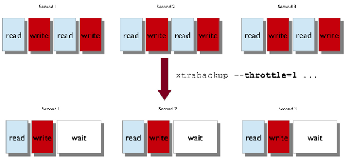
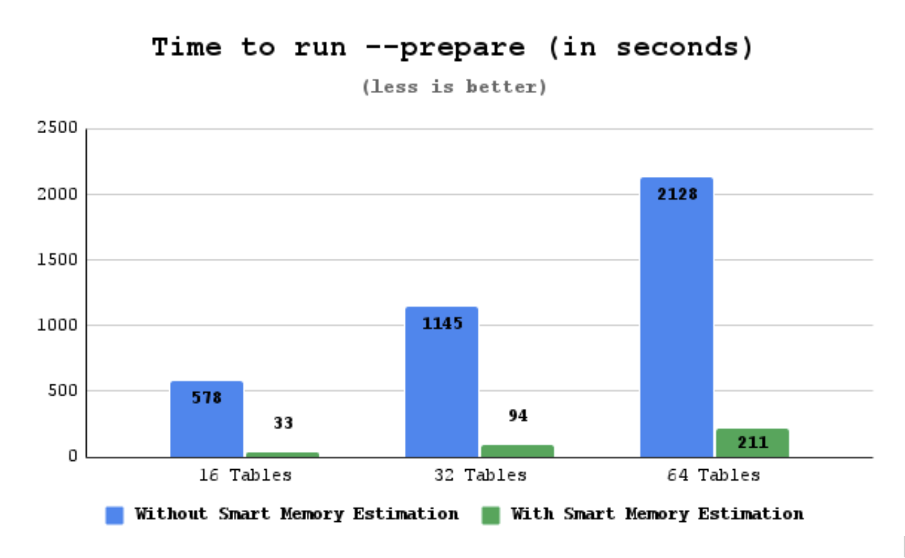
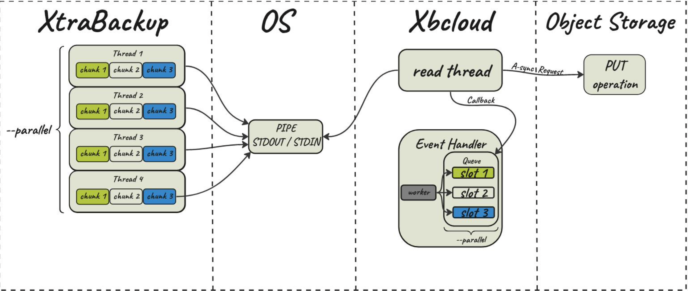
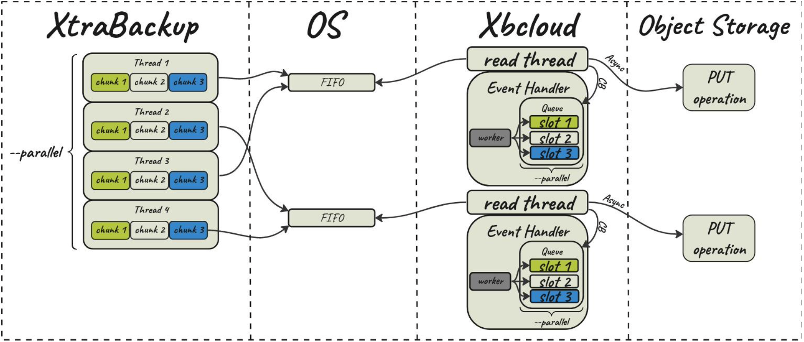

Percona XtraBackup
Documentation
8.0.35-33 (May 19, 2025)
Percona XtraBackup - Documentation¶
This documentation is for the latest release: Percona XtraBackup 8.0.35-33 release notes.
Percona XtraBackup is an open source hot backup utility for MySQL-based servers, that keeps your database fully available during planned maintenance windows.
Whether it is a 24x7 highly loaded server or a low-transaction-volume Percona XtraBackup is designed to make backups seamless without disrupting the performance of the server in a production environment. Percona XtraBackup (PXB) is a 100% open source backup solution with commercial support available for organizations who want to benefit from comprehensive, responsive, and cost-flexible database support for MySQL.
Percona XtraBackup Pro¶
Percona XtraBackup Pro includes the capabilities that are typically requested by large enterprises. Percona XtraBackup Pro contains packages created and tested by Percona. These packages are supported only for Percona Customers with a subscription.
For more information, see Percona XtraBackup Pro.
Supported versions¶
Percona XtraBackup 8.0.35-33 can take backups of MySQL-compatible databases in older server versions, if specific conditions are met, and the following later versions:
-
Percona Server for MySQL 8.0.34, and MySQL 8.0.34
-
Percona Server for MySQL 8.0.35, and MySQL 8.0.35
-
Percona Server for MySQL 8.0.36, and MySQL 8.0.36
-
Percona Server for MySQL 8.0.37, and MySQL 8.0.37
For more information, see Percona XtraBackup Version Compatibility and Server Version Checks.
Taking your backup with Percona XtraBackup is easy. Follow our documentation guides, and you’ll be set up in quickly.
Installation guides¶
Find the best installation solution with our step-by-step installation instructions.
Binaries¶
Learn about the Percona XtraBackup binaries: xtrabackup, xbcloud, xbcrypt, and xbstream.
Backup management¶
Learn about the different types of backups and how to take them.
Supported storage engines¶
Percona XtraBackup can back up data from InnoDB, XtraDB, MyISAM, and MyRocks tables on MySQL 8.0 servers as well as Percona Server for MySQL with XtraDB, Percona Server for MySQL 8.0, and Percona XtraDB Cluster 8.0.
Version updates
Version 8.0.6 and later supports the MyRocks storage engine. An incremental backup on the MyRocks storage engine does not determine if an earlier full or incremental backup contains the same files. Percona XtraBackup copies all MyRocks files each time it takes a backup. Percona XtraBackup does not support the TokuDB storage engine. Find more information in Percona TokuBackup.
Limitations¶
Percona XtraBackup 8.0 does not support making backups of databases created in versions prior to 8.0 of MySQL, Percona Server for MySQL or Percona XtraDB Cluster. As the changes that MySQL 8.0 introduced in data dictionaries, redo log and undo log are incompatible with previous versions, it is currently impossible for Percona XtraBackup 8.0 to also support versions prior to 8.0.
Due to changes in MySQL 8.0.20 released by Oracle at the end of April 2020, Percona XtraBackup 8.0, up to version 8.0.11, is not compatible with MySQL version 8.0.20 or higher, or Percona products that are based on it: Percona Server for MySQL and Percona XtraDB Cluster.
For more information, see Percona XtraBackup 8.x and MySQL 8.0.20
Learn more about other Percona products
Percona XtraBackup Pro¶
Percona XtraBackup Pro includes the capabilities that are typically requested by large enterprises. Percona XtraBackup Pro contains packages created and tested by Percona. These packages are supported only for Percona Customers with a subscription.
Capabilities¶
Find the list of capabilities available in Percona XtraBackup Pro:
| Name | Version | Description |
|---|---|---|
| Available on Amazon Linux 2023 | 8.0.35-32 | Amazon Linux 2023 is a purpose-built Linux distribution optimized for AWS. It’s designed for performance, security, and seamless integration with the broader AWS ecosystem. We support both AMD64 and ARM64 versions of Amazon Linux 2023. |
What’s in it for you?¶
- Save on deploying and maintaining build infrastructure as we do the build and testing for you
- Longer support for older versions of operating systems.
Install Percona XtraBackup Pro
Community users can receive all these capabilities by building Percona XtraBackup from the same source code.
Get help from Percona¶
Our documentation guides are packed with information, but they can’t cover everything you need to know about Percona XtraBackup. They also won’t cover every scenario you might come across. Don’t be afraid to try things out and ask questions when you get stuck.
Percona’s Community Forum¶
Be a part of a space where you can tap into a wealth of knowledge from other database enthusiasts and experts who work with Percona’s software every day. While our service is entirely free, keep in mind that response times can vary depending on the complexity of the question. You are engaging with people who genuinely love solving database challenges.
We recommend visiting our Community Forum. It’s an excellent place for discussions, technical insights, and support around Percona database software. If you’re new and feeling a bit unsure, our FAQ and Guide for New Users ease you in.
If you have thoughts, feedback, or ideas, the community team would like to hear from you at Any ideas on how to make the forum better?. We’re always excited to connect and improve everyone’s experience.
Percona experts¶
Percona experts bring years of experience in tackling tough database performance issues and design challenges.
We understand your challenges when managing complex database environments. That’s why we offer various services to help you simplify your operations and achieve your goals.
| Service | Description |
|---|---|
| 24/7 Expert Support | Our dedicated team of database experts is available 24/7 to assist you with any database issues. We provide flexible support plans tailored to your specific needs. |
| Hands-On Database Management | Our managed services team can take over the day-to-day management of your database infrastructure, freeing up your time to focus on other priorities. |
| Expert Consulting | Our experienced consultants provide guidance on database topics like architecture design, migration planning, performance optimization, and security best practices. |
| Comprehensive Training | Our training programs help your team develop skills to manage databases effectively, offering virtual and in-person courses. |
We’re here to help you every step of the way. Whether you need a quick fix or a long-term partnership, we’re ready to provide your expertise and support.
Release notes
Percona XtraBackup 8.0 release notes index¶
Percona XtraBackup 8.0.35-33 (2025-05-19)¶
Get started with Quickstart Guide for Percona XtraBackup.
Supported versions¶
Starting with Percona XtraBackup 8.0.34, you can take backups of Percona Server for MySQL 8.0.34, MySQL 8.0.34, and higher versions within the 8.0 series.
Check the latest list of all Supported versions.
Release highlights¶
This release provides improvements and bug fixes.
We recommend that you download the Percona XtraBackup for the same platform as the MySQL-compatible server. For example, if your server is on an ARM64 platform, you should download and use the Percona XtraBackup for ARM64 for that operating system.
Improvements¶
-
PXB-3427: Percona XtraBackup now prepares incremental backups faster. The
--preparecommand directly applies the.deltafiles. To speed up this process, use the--parallel=Xoption, replacingXwith the number of threads you want to use simultaneously. This option applies the delta files concurrently. -
PXB-3199: The
xbcloud putoperations were updated to include support for ObjectLock-enabled AWS S3 buckets (Thanks to volver for contributing the fix for this issue.).
Bug fix¶
-
PXB-3426: Fix xtrabackup crashes caused by Key Management Interoperability Protocol (KMIP) component keyring usage.
-
PXB-3490: Fixed an invalid URL for the Boost tarball.
Useful links¶
Install Percona XtraBackup 8.0
The Percona XtraBackup GitHub repository
Download product binaries, packages, and tarballs at Percona Product Downloads
Percona XtraBackup 8.0.35-32 (2025-01-09)¶
Get started with Quickstart Guide for Percona XtraBackup.
Supported versions¶
Starting with Percona XtraBackup 8.0.34, you can take backups of Percona Server for MySQL 8.0.34, MySQL 8.0.34, and higher versions within the 8.0 series.
Check the latest list of all Supported versions.
Release highlights¶
This release provides bug fixes.
We recommend that you download the Percona XtraBackup for the same platform as the MySQL-compatible server. For example, if your server is on an ARM64 platform, you should download and use the Percona XtraBackup for ARM64 for that operating system.
Bug fix¶
-
PXB-3302: When a MySQL instance contained a large number of GTID sets, the “GTID of the last change” output in the Xtrabackup log was truncated compared to the complete output found in
xtrabackup_binlog_infoandxtrabackup_info. This truncation created problems for external tools that needed to get GTID coordinates from the log. -
PXB-3336: A typographical error existed in the Full Text Search index pattern.
Useful links¶
Install Percona XtraBackup 8.0
The Percona XtraBackup GitHub repository
Download product binaries, packages, and tarballs at Percona Product Downloads
Percona XtraBackup 8.0.35-31-Update (2024-09-20)¶
Packaging notes¶
This update to the release of Percona XtraBackup includes the addition of arm64.deb packages in Percona Software Downloads for the following platforms:
-
Debian 12
-
Debian 11
-
Ubuntu 24.04
-
Ubuntu 22.04
-
Ubuntu 20.04
Percona XtraBackup 8.0.35-31 (2024-06-20)¶
Get started with Quickstart Guide for Percona XtraBackup.
Supported versions¶
Starting with Percona XtraBackup 8.0.34, you can take backups of Percona Server for MySQL 8.0.34, MySQL 8.0.34, and higher versions within the 8.0 series.
Check the latest list of all Supported versions.
Release highlights¶
This release adds Percona XtraBackup ARM64 packages and provides bug fixes.
We recommend that you download the Percona XtraBackup for the same platform as the MySQL-compatible server. For example, if your server is on an ARM64 platform, you should download and use the Percona XtraBackup for ARM64 for that operating system.
Bug fix¶
-
PXB-3283: If backup contains tables with temporal datatypes and their charset/collation changed (ALTER TABLE CONVERT CHARACTER SET) before the backup is taken, xtrabackup export couldn’t generate the correct configuration (.cfg) files required by the import.
-
PXB-2797: When you import a table with a full-text index from an XtraBackup backup, you might encounter a schema mismatch. This happens when the table’s structure in the backup does not match the structure expected by the database.
-
PXB-3210: Percona XtraBackup version 8.0.33-28 and later fail to build on MacOS because of the FIND_PROCPS() function. This function causes issues during the build process, preventing the software from compiling successfully.
-
PXB-3130: When preparing 8.0.30 backups with newer xtrabackup versions, the prepare step failed. (Thank you to LiNing for the contribution!)
Useful links¶
Install Percona XtraBackup 8.0
The Percona XtraBackup GitHub repository
Download product binaries, packages, and tarballs at Percona Product Downloads
Percona XtraBackup 8.0.35-30 (2023-12-04)¶
Get started with Quickstart Guide for Percona XtraBackup.
Supported versions¶
Check the latest list of all Supported versions.
Release highlights¶
This release merges the MySQL 8.0.35 code base.
Bug fix¶
-
PXB-3003: Percona XtraBackup discovering redo logs to parse and the server purging redo logs simultaneously could cause a race condition.
-
PXB-3139: Fix for gcc-13 and clang-16 compilation issues.
-
PXB-3147: Percona XtraBackup failed to execute the
DO innodb_redo_log_consumer_register("PXB");query. -
PXB-3181: The use of the
innodb-use-native-aio=trueoption resulted in printing duplicate timestamps. -
PXB-3173: The xbcloud was refactored to use multiple threads with a global list of files. This list did not allow users to download a subset of files.
-
PXB-3141: Adjusted folder creation on
ds_fifo.ccand xbcloud to use proper permission. -
PXB-3168: Under high write load, a backup could fail with a
log block numbers mismatcherror.
Useful links¶
Install Percona XtraBackup 8.0
The Percona XtraBackup GitHub repository
Download product binaries, packages, and tarballs at Percona Product Downloads
Percona XtraBackup 8.0.34-29 (2023-08-21)¶
Get started with Quickstart Guide for Percona XtraBackup.
Percona XtraBackup (PXB) is a 100% open source backup solution for all versions of Percona Server for MySQL and MySQL® that performs online non-blocking, tightly compressed, highly secure full backups on transactional systems. Maintain fully available applications during planned maintenance windows with Percona XtraBackup.
Release highlights¶
Starting with Percona XtraBackup 8.0.34 you can take backups of Percona Server for MySQL 8.0.34, MySQL 8.0.34, and higher versions within the 8.0 series.
Check the latest list of all Supported versions.
Compression¶
The ZSTD compression algorithm is moved to General Availability and becomes the default compression algorithm for the --compress option.
The QuickLZ compression algorithm is removed and is not used for --backup. The --decompress option still uses qpress for backward compatibility to decompress backups taken by older versions of Percona XtraBackup.
New features¶
- PXB-3059: Adds the
--redo-log-arch-dir=nameoption to
set the redo log archive destination directory. (Thanks to wangbincmss for providing the patch)
Improvements¶
- PXB-3007: The ZSTD compression algorithm is moved to General Availability and becomes the default compression algorithm for the
--compressoption.
Bug fix¶
-
PXB-3073: An unresponsive host may cause
xbcloudto become stuck. Added a--timeoutoption toxbcloud. -
PXB-3088: Percona XtraBackup could not prepare the backup if the redo log size was more than 128G. (Thanks to Ahmed Et-tanany for providing the fix for this issue)
-
PXB-3079: The prepare phase skipped rollback on encrypted tables and was completed successfully if the keyring plugin was not loaded.
-
PXB-2860: Percona XtraBackup locked table even when the
--tables-excludeand--lock-ddl-per-tableoptions were used.
Useful links¶
Install Percona XtraBackup 8.0
The Percona XtraBackup GitHub location
Download product binaries, packages, and tarballs at Percona Product Downloads
Contribute to the documentation
For training, contact Percona Training - Start learning now.
Percona XtraBackup 8.0.33-28 (2023-07-19)¶
Percona XtraBackup (PXB) is a 100% open source backup solution for all versions of Percona Server for MySQL and MySQL® that performs online non-blocking, tightly compressed, highly secure full backups on transactional systems. Maintain fully available applications during planned maintenance windows with Percona XtraBackup.
Release highlights¶
This release includes improvements, features, and bug fixes. Percona has implemented a two-stage release process for each version. The first release primarily ensures compatibility with the latest MySQL version, to help those customers who need an updated version of Percona XtraBackup as soon as possible. The second release contains additional bug fixes and any improvements or new features.
Percona XtraBackup 8.0.33-28 implements a new data sink that uses the first in, first out (FIF0) method. With the FIFO data sink feature, users with a streaming capacity of 10Gbps (typically on a Local Area Network (LAN)) can benefit from faster backups by streaming data in parallel to object storage. This feature is in tech preview.
Percona XtraBackup 8.0.33-28 implements the Dictionary cache feature. Dictionary cache improves the performance of xtrabackup --prepare operation.
New feature¶
PXB-2514: Implements a new data sink that uses FIFO (named pipes).
Improvements¶
-
PXB-2955: Implements dictionary cache.
-
PXB-3033: Executes
STOP SLAVEconditionally depending on--[lock-ddl]. -
PXB-3066: Fixes compilation issues on Debian 12.
-
PXB-2993: Makes Percona XtraBackup compatible with procps-4.
Bug fix¶
-
PXB-2811: Fix for several Percona XtraBackup compilation warnings.
-
PXB-3075: Percona XtraBackup 8.0.33 could not prepare backups from 8.0.29 and previous versions.
Packaging notes¶
Percona XtraBackup 8.0.33-28 supports Debian 12.
Useful links¶
Install Percona XtraBackup 8.0
The Percona XtraBackup GitHub location
Download product binaries, packages, and tarballs at Percona Product Downloads
Contribute to the documentation
For training, contact Percona Training - Start learning now.
Percona XtraBackup 8.0.33-27 (2023-05-25)¶
| Release date | May 25, 2023 |
|---|---|
| Install instructions | Install Percona XtraBackup |
Percona XtraBackup (PXB) is a 100% open source backup solution for all versions of Percona Server for MySQL and MySQL® that performs online non-blocking, tightly compressed, highly secure full backups on transactional systems. Maintain fully available applications during planned maintenance windows with Percona XtraBackup.
Release highlights¶
This release merges the MySQL 8.0.33 code base. Percona has implemented a two-stage release process for each version. The first release primarily ensures compatibility with the latest MySQL version, to help those customers who need an updated version of Percona XtraBackup as soon as possible. The second release contains additional bug fixes and any improvements or new features.
Bug fix¶
PXB-3026: DWITH_NDB=OFF option did not turn off the DWITH_NDB_CLUSTER_STORAGE_ENGINE and compiled NDB files.
Useful links¶
The Percona XtraBackup GitHub location
Download product binaries, packages, and tarballs at Percona Product Downloads
Contribute to the documentation
For training, contact Percona Training - Start learning now.
Percona XtraBackup 8.0.32-26 (2023-04-04)¶
| Release date | April 4, 2023 |
|---|---|
| Install instructions | Install Percona XtraBackup |
Percona XtraBackup for MySQL Databases enables MySQL backups without blocking user queries. Percona XtraBackup is ideal for companies with large data sets and mission-critical applications that cannot tolerate long periods of downtime. Offered free as an open source solution, Percona XtraBackup drives down backup costs while providing unique features for MySQL backups.
Release highlights¶
This release includes improvements and bug fixes. Percona has implemented a two-stage release process for each version. The first release primarily ensures compatibility with the latest MySQL version, to help those customers who need an updated version of Percona XtraBackup as soon as possible. The second release contains additional bug fixes and any improvements or new features.
This release fixes the security vulnerability CVE-2022-25834 with PXB-2977.
This version adds the –estimate-memory parameter to enable/disable the Smart memory estimation feature during the backup phase.
Improvements¶
PXB-2882: Removes bitmap code and variables.
PXB-2979: The Smart memory estimation feature parses metadata from the redo log to estimate the required memory to prepare a backup. On write-intensive workloads, this behavior caused the delay of the redo follow thread.
PXB-2980: Adds the –estimate-memory parameter to enable/disable the Smart memory estimation feature during the backup phase.
Bug fixes¶
PXB-2264: When a table with the next auto incremental value 2 was exported using Percona XtraBackup, the table got the next auto incremental value 1 instead of 2.
PXB-2954: During prepare phase Percona XtraBackup uses Serialized Dictionary information (SDI) to create the table metadata. If there was an orphan table, leftover from a upgrade, without SDI information, Percona XtraBackup failed to prepare a backup.
PXB-2970: Removed unnecessary check for redo log files at the end of backup in case the redo archive was enabled.
PXB-2972: An error after the redo apply phase caused an assertion failure instead of a graceful exit.
PXB-2977: Fixed the security vulnerability CVE-2022-25834.
PXB-2998: Due to a server bug in the upgrade, the server leaves the dictionary tables in a temporary schema instead of the mysql schema. Percona Xtrabackup can now successfully prepare these backup directories.
PXB-2999: Removed the warning message that MLOG_INDEX_LOAD redo log record was found.
PXB-3022: Reduced the memory required for --prepare phase.
Useful links¶
The Percona XtraBackup GitHub location
Contribute to the documentation
For training, contact Percona Training - Start learning now.
Percona XtraBackup 8.0.32-25 (2023-02-27)¶
| Release date | February 27, 2023 |
|---|---|
| Install instructions | Install Percona XtraBackup |
Percona XtraBackup for MySQL Databases enables MySQL backups without blocking user queries. Percona XtraBackup is ideal for companies with large data sets and mission-critical applications that cannot tolerate long periods of downtime. Offered free as an open source solution, Percona XtraBackup drives down backup costs while providing unique features for MySQL backups.
Release highlights¶
This release merges the MySQL 8.0.32 code base. Percona has implemented a two-stage release process for each version. The first release primarily ensures compatibility with the latest MySQL version, to help those customers who need an updated version of Percona XtraBackup as soon as possible. The second release contains additional bug fixes and any improvements or new features.
Starting with version 8.0.32-25, Percona XtraBackup allows instant columns in the backup for MySQL 8.0.32. This limitation still exists for backing up MySQL 8.0.31 and lower versions.
This limitation does not exist for backing up any version of Percona Server for MySQL.
Useful links¶
The Percona XtraBackup GitHub location
Contribute to the documentation
For training, contact Percona Training - Start learning now.
Percona XtraBackup 8.0.31-24 (2023-02-07)¶
| Release date | February 7, 2023 |
|---|---|
| Install instructions | Install Percona XtraBackup |
| Download this version | Percona XtraBackup 8.0 |
Percona XtraBackup for MySQL Databases enables MySQL backups without blocking user queries. Percona XtraBackup is ideal for companies with large data sets and mission-critical applications that cannot tolerate long periods of downtime. Offered free as an open source solution, Percona XtraBackup drives down backup costs while providing unique features for MySQL backups.
For training, contact Percona Training - Start learning now.
Release highlights¶
This release adds the ability to use an IAM instance profile when running xbcloud from an EC2 instance. An IAM instance profile does not need the --s3-secret-key nor the --s3-access-key but the profile has a six-hour lifespan.
With this version, qpress/QuickLZ are deprecated.
New features¶
PXB-2856: Use IAM instance profile when running xbcloud from an EC2 instance.
PXB-2869: A warning is printed on backup that qpress/QuickLZ is deprecated.
Bug fixes¶
PXB-2890: XtraBackup did not compress already compressed tables.
PXB-2928: XtraBackup exits with signal 11 when taking a backup using page tracking.
PXB-2854: Fixed a memory corruption issue in QuickLZ.
PXB-2925: The PXB start_lsn, during the prepare phase, did not match the redo file start LSN when a wait was added in the backup phase after calling recv_find_max_checkpoint and before copying the checkpoint header.
PXB-2964: XtraBackup required a very high open files limit.
PXB-2959: XtraBackup now compiles on platforms with OpenSSL 3.0.
PXB-2971: XtraBackup copied local manifest files which caused node failures when the files overrode settings on another node.
Deprecation and removal¶
Starting with Percona XtraBackup 8.0.31-24, using qpress/QuickLZ to compress backups is deprecated and may be removed in future versions. We recommend using either the LZ4 or the Zstandard (ZSTD) compression algorithms.
Useful links¶
2022 (8.0.30-23 - 8.0.23-16)
Percona XtraBackup 8.0.30-23 (2022-11-14)¶
| Release date | November 14, 2022 |
|---|---|
| Install instructions | Install Percona XtraBackup |
| Download this version | Percona XtraBackup 8.0 |
Percona XtraBackup for MySQL Databases enables MySQL backups without blocking user queries. Percona XtraBackup is ideal for companies with large data sets and mission-critical applications that cannot tolerate long periods of downtime. Offered free as an open source solution, Percona XtraBackup drives down backup costs while providing unique features for MySQL backups.
For paid support, managed services or consulting services, contact Percona Sales.
For training, contact Percona Training - Start learning now.
Release highlights¶
The Take an incremental backup using page tracking feature is Generally Available (GA).
The following features and improvements introduced in Percona XtraBackup 8.0.30-23 are available only in tech preview:
-
Percona XtraBackup adds support for
Zstandard (ZSTD)compression algorithm.ZSTDis a fast lossless compression algorithm, targeting real-time compression scenarios at zlib-level and better compression ratios. -
Percona XtraBackup implements the
Smart memory estimationfeature to compute the memory required to--preparea backup. Percona XtraBackup has extended the crash recovery logic to extract the formula used to allocate memory. Now, in the backup phase, while copying redo log entries, Percona XtraBackup computes the required memory for--prepare. Percona XtraBackup also takes into consideration the number of InnoDB pages to be fetched from the disk. Percona XtraBackup checks the server’s available free memory and uses that memory up to the limit specified in the--use-free-memory-pctoption to run--prepare.
New features¶
PXB-2669: Implements support for Zstandard (ZSTD) compression algorithm.
Improvements¶
PXB-2710: Implements support for Smart Memory Estimation.
PXB-2844: Adjusts the logic to detect multi-threaded slave.
Bug fixes¶
PXB-2681: Percona XtraBackup got stuck during incremental backup prepare of encrypted tables.
PXB-2517: Check if files-from is successfully closed before rsync (Thanks to Garen Chan for the patch.)
PXB-2702: Backup failed when undo truncation log is present (Thanks to Dmitry Smal for his contribution to the initial patch.)
PXB-2729: Percona XtraBackup compilation failed if GTest packages are installed.
PXB-2810: Percona XtraBackup crashed when AIO initialization failed (Thanks to Yan Huang for the patch.)
PXB-2840: Xbcloud attempted to create a non-existing bucket.
PXB-2874: When Percona XtraBackup generated a new master key on –copy-back or –move-back, the master key id was reset back to 1.
PXB-2809: wsrep_sync_wait<>0 caused Lock wait timeout exceeded; try restarting transaction error (Thanks to Frank Well for providing the initial patch.)
Platform support¶
Percona XtraBackup 8.0.30 supports Oracle Linux/Red Hat Enterprise Linux 9.
Useful links¶
Percona XtraBackup 8.0.29-22 (2022-07-19)¶
Percona XtraBackup for MySQL Databases enables MySQL backups without blocking user queries. Percona XtraBackup is ideal for companies with large data sets and mission-critical applications that cannot tolerate long periods of downtime. Offered free as an open source solution, Percona XtraBackup drives down backup costs while providing unique features for MySQL backups.
Release Highlights¶
Percona XtraBackup 8.0.29-22 adds new redo log types to support the changes in the INSTANT algorithm behavior. MySQL 8.0.29 extended the support for ALGORITHM=INSTANT to allow columns to be added to any position in a table and column drops. Older versions of Percona XtraBackup are incompatible with MySQL 8.0.29 because of this new functionality.
Note
MySQL 8.0.29 extended the support of the ALTER TABLE … DROP COLUMNS statement to use ALGORITHM=INSTANT. These operations only modify the metadata in the data directory and do not affect the physical structure. The ALGORITHM=INSTANT is the default setting for supported DDL operations. Prior to MySQL 8.0.29, an ALGORITHM=INSTANT column could only be added as the last table column. As of MySQL 8.0.29, the column can be added to any table position. The ability to add or drop a column in any position increases the complexity of crash recovery since the redo log does not have the logical positions from the data dictionary. The redo log contains the physical order for the table.
Percona Server for MySQL 8.0.29-21 contains fixes for these issues. Percona XtraBackup 8.0.29 can backup and restore tables that used the INSTANT algorithm in ADD/DROP in Percona Server for MySQL. However, MySQL 8.0.29, if the server contains tables modified by INSTANT ADD/DROP, is unsafe for backups at this time. Percona XtraBackup detects the tables modified by INSTANT ADD/DROP and generates an error. This error lists the affected tables and provides instructions to convert the modified tables to regular tables.
Useful Links¶
-
To contribute to the documentation, review the Documentation Contribution Guide
Percona XtraBackup 8.0.28-21 (2022-05-25)¶
Percona XtraBackup for MySQL Databases enables MySQL backups without blocking user queries. Percona XtraBackup is ideal for companies with large data sets and mission-critical applications that cannot tolerate long periods of downtime. Offered free as an open source solution, Percona XtraBackup drives down backup costs while providing unique features for MySQL backups.
Release Highlights¶
Percona XtraBackup adds support for the Amazon Key Management Service (KMS) component.
New Features¶
- PXB-2721: Implements support for the Amazon Key Management Service component in Percona XtraBackup.
Bugs Fixed¶
-
PXB-2761: Fix for a compilation error in GCC 11. (Thanks to user tcoyvwac for providing the patch to fix this issue.)
-
PXB-2422: The extraction of files failed when a file was located in another directory.
Useful Links¶
-
To contribute to the documentation, review the Documentation Contribution Guide
Percona XtraBackup 8.0.28-20¶
-
Date
April 26, 2022
Percona XtraBackup for MySQL Databases enables MySQL backups without blocking user queries. Percona XtraBackup is ideal for companies with large data sets and mission-critical applications that cannot tolerate long periods of downtime. Offered free as an open source solution, Percona XtraBackup drives down backup costs while providing unique features for MySQL backups.
Release Highlights¶
The log statements structure in Percona XtraBackup has been improved. Now, the error logs have a standard structure. The uniformity of the headers makes it easier to follow an operation’s progress or review the log to diagnose issues. The improved log structure is displayed in the backup, prepare, move-back/copy-back error logs.
Each log statement has the following attributes:
-
Timestamp - a timestamp for when the event occurred in a UTC format.
-
Severity - the severity level of a statement indicates the importance of an event.
-
ID - this identifier is currently not used but may be used in future versions.
-
Context - the name of the module that issued the log statement, such as XtraBackup, InnoDB, or Server.
-
Message - a description of the event generated by the module.
New Features¶
- PXB-2670: Improves the error logging framework in Percona XtraBackup.
Bugs Fixed¶
-
PXB-1676: The error message after creating a backup was incorrect.
-
PXB-2716: Fix for a compilation error on systems without fallocate. (Thanks to user Bo98 for providing the patch to fix this issue.)
-
PXB-2506: During copy back and move back operations, added a check if the backup is fully prepared. Percona XtraBackup throws an error if the backup is not prepared or was prepared with –apply-log-only.
-
PXB-2662: Percona XtraBackup exited during prepare when creating an incremental backup using page tracking.
-
PXB-2714: Fix for a memory leak on the keyring component.
-
PXB-2697: Undefined symbols in macOS resulted in an error when linked with Percona XtraBackup 8.0.27.
-
PXB-2722: Fix for when via command line, a password, passed using the -p option, was written into the backup tool_command in xtrabackup_info.
Useful Links¶
-
To contribute to the documentation, review the Documentation Contribution Guide
Percona XtraBackup 8.0.27-19¶
-
Date
February 2, 2022
-
Installation
Percona XtraBackup enables MySQL backups without blocking user queries, making it ideal for companies with large data sets and mission-critical applications that cannot tolerate long periods of downtime. Offered free as an open source solution, it drives down backup costs while providing unique features for MySQL backups.
Release Highlights¶
The following list contains a number of the bug fixes for MySQL 8.0.27, provided by Oracle, and included in Percona Server for MySQL:
-
The
default_authentication_pluginis deprecated. Support for this plugin may be removed in future versions. Use theauthentication_policyvariable. -
The
binaryoperator is deprecated. Support for this operator may be removed in future versions. UseCAST(... AS BINARY). -
When a parent table updated or deleted a row, this operation initiated a cascading
SET NULLoperation on the child table. On the child table, a virtual column value could be set to NULL instead of the value derived from the base column value.
Find the full list of bug fixes and changes in the MySQL 8.0.27 Release Notes.
New Features¶
- PXB-1883: Added support for Microsoft Azure Cloud Storage in the xbcloud binary. (Thanks to Ivan for reporting this issue)
Improvements¶
- PXB-2434: Use MySQL page tracking for incremental backup
Bugs Fixed¶
-
PXB-1741: PS startup displays errors for databases excluded during partial backup
-
PXB-2614: The
xbstreambinary was enhanced to support sparse files on the XFS file system. -
PXB-2608: Upgrade the Vault API to V2 (Thanks to Benedito Marques Magalhaes for reporting this issue)
-
PXB-2543: Fix that adds
IB_EXPORT_CFG_VERSION_V6when exporting a.cfgfile for a table (Thanks to Peng Gao for reporting this issue) -
PXB-2465: Fix for querying the
ps.log_statuswhen group replication channels are items on that list. XtraBackup skips the name if it matches eithergroup_replication_applierorgroup_replication_recovery.(Thanks to Galamb Gergő for reporting this issue) -
PXB-2625: The default version of CURL in Debian Buster failed to identify a TLS HTTP2 connection as closed and attempted to reuse the connection. (Thanks to Johan Andersson for reporting this issue)
2021 (8.0.26-18 - 8.0.23-16)
Percona XtraBackup 8.0.26-18.0¶
-
Date
September 2, 2021
-
Installation
Percona XtraBackup enables MySQL backups without blocking user queries, making it ideal for companies with large data sets and mission-critical applications that cannot tolerate long periods of downtime. Offered free as an open source solution, it drives down backup costs while providing unique features for MySQL backups.
Improvements¶
-
PXB-2477: The xbcloud should retry on error and utilize incremental backoff (Thanks to Baptiste Mille-Mathias for reporting this issue)
-
PXB-2580: With the xbcloud binary, a chunk-upload on an SSL connect error to S3 was not retried (Thanks to Tim Vaillancourt for providing the patch)
-
PXB-2317: Remove the obsolete LOCKLESS binary log functionality since the
performance_schema.log_statustable is now used to get the log information on all the storages without locking them
Bugs Fixed¶
-
PXB-2101: The Prepare step fails due to duplicate Serialized Dictionary Information (SDI) (Thanks to Fungo Wang for reporting this issue)
-
PXB-1504: The FIND_GCRYPT macro is broken (Thanks to Maxim Bublis for reporting this issue)
-
PXB-1961: The Prepare step of a full backup fails for encrypted tables with a generic error
-
PXB-2585: XtraBackup fails to backup archive RocksDB Write-Ahead Log (WAL) files
Percona XtraBackup 8.0.25-17.0¶
-
Date
June 3, 2021
-
Installation
Percona XtraBackup enables MySQL backups without blocking user queries, making it ideal for companies with large data sets and mission-critical applications that cannot tolerate long periods of downtime. Offered free as an open source solution, it drives down backup costs while providing unique features for MySQL backups.
Bugs Fixed¶
-
PXB-2442 : Backup cannot be decompressed using the AppArmor profile
-
PXB-2444 : The xbcloud binary fails to upload backup with enforcing SELinux mode
-
PXB-2443 : Version check fails with AppArmor profile
-
PXB-2445 : Initializing the libgcrypt in xbcloud
-
PXB-2455 : XtraBackup prepare fails if the checkpoint LSN is greater than the last LSN
-
PXB-2473 : SELinux errors in audit logs
-
PXB-1462 : Long gtid_executed breaks —history functionality
-
PXB-2369 : Issues with “Installing” page in XtraBackup documentation
-
PXB-2457 : Incorrect binlog names if binlog name contains periods
-
PXB-2106 : Copy-back creates wrong binlog.index
Percona XtraBackup 8.0.23-16.0¶
-
Date
March 22, 2021
-
Installation
Percona XtraBackup enables MySQL backups without blocking user queries, making it ideal for companies with large data sets and mission-critical applications that cannot tolerate long periods of downtime. Offered free as an open source solution, it drives down backup costs while providing unique features for MySQL backups.
This release fixes the security vulnerability CVE-2020-29488
Improvements¶
-
PXB-2280: Provide SELinux and AppArmor default policies
-
PXB-1979: Enable –lock-ddl by default to prevent corruption of the backup
Bugs Fixed¶
-
PXB-2274: Correct restore processing when there are DML statements running during backup stage by writing the last_checkpoint and LSN from ps.log_status instead of the redo log (Thanks to user Li Biao for reporting this issue)
-
PXB-2430: Correct build failure by removing the dependency of no-server-version-check with version-check (Thanks to user agarner for reporting this issue)
-
PXB-2415: Add build dependencies to correct Debian/Ubuntu packages in docker (Thanks to user Matt Cole for reporting this issue)
-
PXB-2429: Correct Backup failure for encrypted tablespace by skipping the encryption reset operation during the redo scan phase
-
PXB-2418: Remove PROTOBUF_LITE_LIBRARY - it is not used and is not needed
-
PXB-2395: Update versions for xbstream and xbcrypt
-
PXB-2394: Correct spellings in xbcloud help
-
PXB-2357: Correct hang in backup with redo log archive by using block number instead of checksum (checksum of redo file and archive file can be different)
-
PXB-2180: Correct incremental prepare failure with logical redo by skipping the apply of logical redos (MLOG_TABLE_DYNAMIC_META) during the incremental prepare (except the last prepare).
2020 (8.0.22-15 - 8.0.10)
Percona XtraBackup 8.0.22-15.0¶
-
Date
December 14, 2020
-
Installation
Percona XtraBackup enables MySQL backups without blocking user queries, making it ideal for companies with large data sets and mission-critical applications that cannot tolerate long periods of downtime. Offered free as an open source solution, it drives down backup costs while providing unique features for MySQL backups.
NOTE: The naming structure for the releases has changed. See the aligning Percona XtraBackup versions with Percona Server for MySQL blog post for more information.
New Features¶
-
PXB-2112: xbcloud: support storage_class option with –storage=s3 (Thanks to user rluisr for reporting this issue)
-
PXB-2242: Prevent back up if Source system (DB) version is higher then current PXB version
Improvements¶
- PXB-2254: Redesign –lock-ddl-per-table
Bugs Fixed¶
-
PXB-793: Fix syntax error when executing –lock-ddl-per-table queries
-
PXB-953: Improve stdout for the end of usage of –lock-ddl-per-table
-
PXB-787: Modify scan to provide correct status when finding corrupted tablespace
-
PXB-2314: Handle Disk format changes introduced in MySQL 8.0.22 release
-
PXB-2279: Modify to look for prefixes in xtrabackup_tablespaces* without extensions (Thanks to user mrmainnet for reporting this issue)
-
PXB-2336: Modify to check to see if first block is an all-zero block and process accordingly
-
PXB-2275: Modify backup processing to add validations if an encrypted table is created
-
PXB-2272: Modify regexp to consider all #sql as temporary tables
-
PXB-2257: Modify –lock-ddl-per-table to properly close database connection
Percona XtraBackup 8.0.14¶
-
Date
August 31, 2020
-
Installation
Percona XtraBackup enables MySQL backups without blocking user queries, making it ideal for companies with large data sets and mission-critical applications that cannot tolerate long periods of downtime. Offered free as an open source solution, it drives down backup costs while providing unique features for MySQL backups.
Percona XtraBackup 8.0.14 supports backup and restore processing for all versions of MySQL and has been tested with the latest MySQL 8.0.21.
Improvements¶
-
PXB-1605: Document how to use Percona Xtrabackup with Docker
-
PXB-2252: Introduce debug option to print redo log records scanned and applied
Bugs Fixed¶
-
PXB-2215: Modify Import tablespace process to correctly calculate pack_length
-
PXB-2114: Document when table is ignored by full backup it is not automatically ignored for incremental backup
-
PXB-2255: Modify processing to Error out if undo truncation during backup
-
PXB-2249: Verify perl binary exists before completing version check
-
PXB-2243: Correct processing when undo truncation happens between full backup and incremental
-
PXB-2238: Provide binary tarball with shared libs and glibc suffix & minimal tarballs
-
PXB-2202: Modify Xbcloud to display an error when xtrabackup fails to create a backup
Percona XtraBackup 8.0.13¶
-
Date
June 17, 2020
-
Installation
Percona XtraBackup enables MySQL backups without blocking user queries, making it ideal for companies with large data sets and mission-critical applications that cannot tolerate long periods of downtime. Offered free as an open source solution, it drives down backup costs while providing unique features for MySQL backups.
Percona XtraBackup 8.0.13 supports backup and restore processing for all versions of MySQL and has been tested with the latest MySQL 8.0.20.
Bugs Fixed¶
-
PXB-2165: Modify xbcloud to store backups using s3 access key parameters if AWS access key env variables are set
-
PXB-2164: Modify xbcloud to return the error when the backup doesn’t exist in s3 bucket
-
PXB-2127: Modify xbcloud to upload backups with empty database to min.io storage
-
PXB-2198: Modify xbcloud delete to return the error when the backup doesn’t exist in s3 bucket
-
PXB-2155: Correct corruption when redo logs are encrypted using xtrabackup –backup –compress=lz4
-
PXB-2166: Modify xbcloud to check for bucket existence and return
okstatus when domain name can be resolved
Percona XtraBackup 8.0.12¶
-
Date
May 27, 2020
-
Installation
Percona XtraBackup enables MySQL backups without blocking user queries, making it ideal for companies with large data sets and mission-critical applications that cannot tolerate long periods of downtime. Offered free as an open source solution, it drives down backup costs while providing unique features for MySQL backups.
Percona XtraBackup 8.0.12 now supports backup and restore processing for all versions of MySQL; previous versions of Percona XtraBackup will not work with MySQL 8.0.20 and higher.
Bugs Fixed¶
-
PXB-2133: Correct prtype stored for DECIMAL columns in .cfg file by –export
-
PXB-2146: Amazon S3 session token support added to xbcloud
-
PXB-2179: Modify
xtrabackup prepareto shut down keyring plugin when run with –generate-transition-key -
PXB-2157: Modify
xtrabackup –prepareto generate cfg files for partition tables when –export is used
Percona XtraBackup 8.0.11¶
-
Date
April 13, 2020
Installing Percona XtraBackup 8.0
Downloads are available from our download site and from apt and yum repositories.
Percona XtraBackup enables MySQL backups without blocking user queries, making it ideal for companies with large data sets and mission-critical applications that cannot tolerate long periods of downtime. Offered free as an open source solution, it drives down backup costs while providing unique features for MySQL backups.
All Percona software is open-source and free.
This release fixes security vulnerability CVE-2020-10997.
Percona XtraBackup 8.0.10¶
-
Date
March 16, 2020
Installing Percona XtraBackup 8.0
Downloads are available from our download site and from apt and yum repositories.
Percona XtraBackup enables MySQL backups without blocking user queries, making it ideal for companies with large data sets and mission-critical applications that cannot tolerate long periods of downtime. Offered free as an open source solution, it drives down backup costs while providing unique features for MySQL backups.
All Percona software is open-source and free.
Bugs Fixed¶
-
PXB-1982: The history table showed a wrong value for
lock_time. -
PXB-2099:
copy-backdid not move undo files to the data directory. -
PXB-2107: If the undo tablespace was created in a directory which is a symbolic link to another directory then the backup failed at backup stage.
-
PXB-2118: Undo log file was renamed incorrectly to undo tablespace name after restore
2019 (8.0.9 - 8.0.5)
Percona XtraBackup 8.0.9¶
Percona is glad to announce the release of Percona XtraBackup 8.0.9 on December 16, 2019. Downloads are available from our download site and from apt and yum repositories.
Percona XtraBackup enables MySQL backups without blocking user queries, making it ideal for companies with large data sets and mission-critical applications that cannot tolerate long periods of downtime. Offered free as an open source solution, it drives down backup costs while providing unique features for MySQL backups.
All Percona software is open-source and free.
Bugs Fixed¶
- Sometime between December 3rd and December 10th, a change was introduced in
that caused an incompatibility with our
Percona XtraBackup
xbcloudutility. Bug fixed PXB-1978.
Percona XtraBackup 8.0.8¶
Percona is glad to announce the release of Percona XtraBackup 8.0.8 on November 21, 2019. Downloads are available from our download site and from apt and yum repositories.
Percona XtraBackup enables MySQL backups without blocking user queries, making it ideal for companies with large data sets and mission-critical applications that cannot tolerate long periods of downtime. Offered free as an open source solution, it drives down backup costs while providing unique features for MySQL backups.
All Percona software is open-source and free.
New Features and Improvements¶
-
Support log archiving feature in PXB 8.0. More information in PXB-1912 and in the Redo Log section of MySQL documentation
-
For the MyRocks storage engine, support the creation of renewable checkpoints (controlled via
--rocksdb-checkpoint-max-ageand--rocksdb-checkpoint-max-count) to minimize the amount of binary logs to apply after the backup was completed. Using renewable checkpoints, Percona XtraBackup only copies the SST files that were created after the previous checkpoint. More information in PXB-1915. -
Two options (–-backup-lock-timeout and -–backup-lock-retry-count) were added to enable the configuring of the timeout for acquiring metadata locks in
FLUSH TABLES WITH READ LOCK,LOCK TABLE FOR BACKUP, andLOCK BINLOG FOR BACKUPstatements. More information in PXB-1914
Bugs Fixed¶
-
An encrypted table could not be restored when
ADD INDEXorDROP INDEXcommands had been run on the table. Bug fixed PXB-1905 -
In some cases
xtrabackup --preparecould fail to decrypt a table but reported that the operation completed ok. Bug fixed PXB-1936 -
xtrabackup --move-backdid not complete successfully when the encrypted binlog file. Bug fixed PXB-1937. -
Percona XtraBackup could crash during the prepare stage when making an incremental
backup when a multi valued index was being added or dropped for JSON data. Bug fixed PXB-1913.
Other bugs fixed: PXB-1928, PXB-1938, PXB-1951, PXB-1953, PXB-1954.
Percona XtraBackup 8.0.7¶
Percona is glad to announce the release of Percona XtraBackup 8.0.7 on August 7, 2019. Downloads are available from our download site and from apt and yum repositories.
Percona XtraBackup enables MySQL backups without blocking user queries, making it ideal for companies with large data sets and mission-critical applications that cannot tolerate long periods of downtime. Offered free as an open source solution, it drives down backup costs while providing unique features for MySQL backups.
In release 8.0.7, Percona XtraBackup enables making backups of databases that contain the encrypted system tablespace. Encrypted mysql tablespace is now also supported.
Percona XtraBackup 8.0.7 implements the support of the lz4 compression algorithm
so that you could make compressed backups using lz4
(–compress=lz4) in addition to the default quicklz method.
All Percona software is open-source and free.
New Features and Improvements¶
-
Add support of the system tablespace encryption. More information in PXB-1649.
-
Implemented the support of the lz4 compression algorithm. More information in PXB-1857.
Bugs Fixed¶
-
When the encrypted tablespaces feature was enabled, encrypted and compressed tables were not usable on the joiner node (Percona XtraDB Cluster) via SST (State Snapshot Transfer) with the xtrabackup-v2 method. Bug fixed PXB-1867.
-
xbclouddid not update date related fields of the HTTP header when retrying a request. Bug fixed PXB-1874. -
xbclouddid not retry to send the request after receiving the HTTP 408 error (request timeout). Bug fixed PXB-1875. -
xtrabackupdid not accept decimal fractions as values of theinnodb_max_dirty_pages_pctoption. Bug fixed PXB-1807. -
If the user tried to merge an already prepared incremental backup, a misleading error was produced without informing that incremental backups may not be used twice. Bug fixed PXB-1862.
Other bugs fixed: PXB-1493, PXB-1557, PXB-1887, PXB-1870, PXB-1879, PXB-1901.
Percona XtraBackup 8.0.6¶
Percona is glad to announce the release of Percona XtraBackup 8.0.6 on May 9, 2019. Downloads are available from our download site and from apt and yum repositories.
Percona XtraBackup enables MySQL backups without blocking user queries, making it ideal for companies with large data sets and mission-critical applications that cannot tolerate long periods of downtime. Offered free as an open source solution, it drives down backup costs while providing unique features for MySQL backups.
In version 8.0.6, Percona XtraBackup introduces the support of the MyRocks storage engine with Percona Server for MySQL version 8.0.15-6 or higher.
Percona XtraBackup 8.0.6 enables saving backups to an Amazon S3, MinIO, and Google Cloud Storage (using interoperability mode) when using xbcloud. The following example demonstrates how to use an Amazon S3 storage to make a full backup:
$ xtrabackup --backup --stream=xbstream --extra-lsndir=/tmp --target-dir=/tmp | \
xbcloud put --storage=s3 \
--s3-endpoint='s3.amazonaws.com' \
--s3-access-key='YOUR-ACCESSKEYID' \
--s3-secret-key='YOUR-SECRETACCESSKEY' \
--s3-bucket='mysql_backups'
--parallel=10 \
${date -I}-full_backup
All *Percona* software is open-source and free
New Features¶
-
The MyRocks storage engine is now supported with Percona XtraBackup. More information in PXB-1754.
-
Amazon S3 is now supported in xbcloud. More information in PXB-1813.
Bugs Fixed¶
-
Percona XtraBackup could fail to restore the undo tablespace created during or before incremental backup. Bug fixed PXB-1780.
-
A backup could fail if
log_bin_indexwas defined inmy.cnf. Bug fixed PXB-1801. -
When the row format was changed during the backup, xtrabackup could crash during the incremental prepare stage. Bug fixed PXB-1824.
-
During the
preparephase, Percona XtraBackup could freeze and never finish execution. Bug fixed PXB-1819. -
Percona XtraBackup could crash during the
preparestage when making a backup of a host running MySQL Server v8.0.16. Bug fixed PXB-1839.
Percona XtraBackup 8.0.5¶
Percona is glad to announce the release of Percona XtraBackup 8.0.5 on March 4, 2019. Downloads are available from our download site and from apt and yum repositories.
Percona XtraBackup enables MySQL backups without blocking user queries, making it ideal for companies with large data sets and mission-critical applications that cannot tolerate long periods of downtime. Offered free as an open source solution, it drives down backup costs while providing unique features for MySQL backups.
Percona XtraBackup 8.0.5 introduces the support of undo tablespaces created using
the new syntax (CREATE UNDO TABLESPACE) available since MySQL 8.0.14. Percona XtraBackup
also supports the binary log encryption introduced in MySQL 8.0.14.
Two new options were added to xbstream. Use the
--decompress option with xbstream to decompress individual qpress
files. With the --decompress-threads option, specify the
number of threads to apply when decompressing. Thanks to Rauli Ikonen for this contribution.
This release of Percona XtraBackup is a General Availability release ready for use in a production environment.
All Percona software is open-source and free.
Please note the following about this release:¶
-
The deprecated innobackupex has been removed. Use the xtrabackup command to back up your instances:
$ xtrabackup --backup --target-dir=/data/backup -
When migrating from earlier database server versions, backup and restore and using Percona XtraBackup 2.4 and then use
mysql_upgradefrom MySQL 8.0.x -
If using
yumoraptrepositories to install Percona Xtrabackup 8.0.5, ensure that you have enabled the new tools repository. You can do this with the percona-release enable tools release command and then install the percona-xtrabackup-80 package.
New Features¶
-
PXB-1548: Percona XtraBackup enables updating the
ib_buffer_poolfile with the latest pages present in the buffer pool using the--dump-innodb-buffer-pooloption. Thanks to Marcelo Altmann for contribution. -
PXB-1768: Added support for undo tablespaces created with the new MySQL 8.0.14 syntax.
-
PXB-1781: Added support for binary log encryption introduced in MySQL 8.0.14.
-
PXB-1797: For xbstream, two new options were added. The
--decompressoption enables xbstream to decompress individual qpress files. The--decompress-threadsoption controls the number of threads to apply when decompressing. Thanks to Rauli Ikonen for this contribution.
Bugs Fixed¶
-
Using
--lock-ddl-per-tablecaused the server to scan all records of partitioned tables which could lead to the “out of memory” error. Bugs fixed PXB-1691 and PXB-1698. -
When Percona XtraBackup was started run with the
--slave-info, incorrect coordinates were written to the xtrabackup_slave_info file.. Bug fixed PXB-1737 -
Percona XtraBackup could crash at the prepare stage when making an incremental backup if the variable
innodb-rollback-segmentswas changed after starting the MySQL Server. Bug fixed PXB-1785. -
The full backup could fail when Percona Server for MySQL was started with the
--innodb-encrypt-tablesparameter. Bug fixed PXB-1793.
Other bugs fixed: PXB-1632, PXB-1715, PXB-1770, PXB-1771, PXB-1773.
2018 (8.0.4 - 8.0.3-rc1)
Percona XtraBackup 8.0.4¶
Percona is glad to announce the release of Percona XtraBackup 8.0.4 on December 10, 2018. Downloads are available from our download site and from apt and yum repositories.
Percona XtraBackup enables MySQL backups without blocking user queries, making it ideal for companies with large data sets and mission-critical applications that cannot tolerate long periods of downtime. Offered free as an open source solution, it drives down backup costs while providing unique features for MySQL backups.
This release of Percona Xtrabackup is a General Availability release ready for use in a production environment.
Please note the following about this release:¶
-
The deprecated innobackupex has been removed. Use the xtrabackup command to back up your instances:
$ xtrabackup --backup --target-dir=/data/backup -
When migrating from earlier database server versions, backup and restore and using Percona XtraBackup 2.4 and then use
mysql_upgradefrom MySQL 8.0.x -
If using
yumoraptrepositories to install Percona XtraBackup 8.0.4, ensure that you have enabled the new tools repository. You can do this with the percona-release enable tools release command and then install the percona-xtrabackup-80 package.
All Percona software is open-source and free. We are grateful to the community for the invaluable contributions to Percona XtraBackup. We would especially like to highlight the input of Alexey Kopytov who has been actively offering improvements and submitting bug reports for Percona XtraBackup.
New Features¶
- Percona XtraBackup 8.0.4 is based on MySQL 8.0.13 and fully supports Percona Server for MySQL 8.0 series and MySQL 8.0 series.
Bugs Fixed¶
-
PXB-1699: xtrabackup –prepare could fail on backups of MySQL 8.0.13 databases
-
PXB-1704: xtrabackup –prepare could hang while performing insert buffer merge
-
PXB-1668: When the –throttle option was used, the applied value was different from the one specified by the user (off by one error)
-
PXB-1679: PXB could crash when
ALTER TABLE ... TRUNCATE PARTITIONcommand was run during a backup without locking DDL
Percona XtraBackup 8.0-3-rc1¶
Percona is glad to announce the release of Percona XtraBackup 8.0-3-rc1 on October 31 2018. Downloads are available from our download site and from apt and yum repositories.
This is a Release Candidate quality release and it is not intended for production. If you want a high quality, Generally Available release, use the current Stable version (the most recent stable version at the time of writing is 2.4.12 in the 2.4 series).
Things to Note¶
-
innobackupexwas previously deprecated and has been removed -
Due to the new MySQL redo log and data dictionary formats the Percona XtraBackup 8.0.x versions will only be compatible with MySQL 8.0.x and the upcoming Percona Server for MySQL 8.0.x
-
For experimental migrations from earlier database server versions, you will need to backup and restore and using XtraBackup 2.4 and then use
mysql_upgradefrom MySQL 8.0.x
Improvements¶
- PXB-1655: The
--lock-ddloption is supported when backing up MySQL 8
Bugs Fixed¶
Quickstart Guide
Overview¶
Percona XtraBackup is a 100% open source backup solution for all versions of Percona Server for MySQL and MySQL® that performs online non-blocking, tightly compressed, highly secure full backups on transactional systems.
We recommend using Docker to quickly start with Percona XtraBackup. This Quickstart guide focuses on this installation method. You can explore alternative options in the Install section.
Why to start Percona XtraBackup in a Docker container¶
Docker containers are built from Docker images, which are snapshots of the configuration needed to run applications, such as the code and libraries. With Docker, you can build, deploy, run, update, and manage containers, which isolate applications from the host system. A Docker container lets you work with Percona XtraBackup without installing the product on a local drive.
Purpose of the Quickstart¶
This section provides the basic steps to start Percona XtraBackup in a Docker container, take a backup, prepare a backup, and restore a backup of Percona Server for MySQL database.
You are welcome to change the names of any items in commands. If you do, the results may vary from those we provide in this Quickstart guide.
In this section, container refers to the Docker container, and instance refers to the database server in the container.
Prerequisites¶
- Install Docker on your system.
To take a backup of Percona Server for MySQL, run Percona Server for MySQL in a Docker container and create a database and a table.
Limitations¶
Percona XtraBackup 8.0 does not support making backups of databases created in versions before the 8.0 series of MySQL, Percona Server for MySQL, or Percona XtraDB Cluster or versions greater than 8.0, such as the 8.1 Innovation release.
Supported versions¶
Check the latest list of all Supported versions.
Supported servers¶
Percona XtraBackup 8.0 can back up data stored on MySQL servers, Percona Server for MySQL, and Percona XtraDB Cluster.
Supported storage engines¶
Percona XtraBackup 8.0 can back up data from InnoDB, XtraDB, MyISAM, and MyRocks tables.
Steps to perform¶
In this Quickstart, you will learn how to:
Next steps¶
Start a Docker container and take a backup¶
Percona XtraBackup works in combination with a MySQL-compatible database, Percona Server for MySQL, in our scenario. To use Percona XtraBackup, run it in a separate Docker container and then connect the Percona XtraBackup container to the Percona Server for MySQL container. As soon as you start Percona Server for MySQL in a Docker container and create a database and table in Percona Server for MySQL, you are ready to backup your database with Percona XtraBackup.
The following steps create a Docker volume, start Percona XtraBackup in a Docker continer, take and prepare a backup of Percona Server for MySQL database.
Create a Docker volume¶
The benefits of using a Docker volume are the following:
-
You can keep your data safe and accessible across different containers. For example, if you want to upgrade your database image to a newer version, you can stop the old container and start a new one with the same volume attached without losing any data.
-
You can quickly backup and restore your data using the
docker cpcommand or mount the volume to another container.
$ docker volume create backupvol
Expected output
backupvol
Start Percona XtraBackup 8.0.34 in a container, take and prepare a backup¶
The docker run command creates and runs a new container from an image. The command modifies the container’s behavior with options.
In our example, the command has the following options:
| Option | Description |
|---|---|
--name |
Provides a name to the container. If you do not use this option, Docker adds a random name. |
--volumes-from |
Refers to Percona Server for MySQL and indicates that you intend to use the same data as the psmysql container. |
it |
Interacts with the container and be a pseudo-terminal. |
--user root |
Sets the user to root inside the Percona XtraBackup container. This option is required to access the MySQL data directory and run the xtrabackup command. |
backup_8034 |
Indicates the directory inside the container where the backup files are stored. |
-v |
Mounts a volume from the host machine to volumes in another container that is being run. In our example, the -v option mounts a volume from the psmysql container to the backupvol volume on the host machine. |
backupvol |
Indicates the persistent storage for the database. |
psmysql |
Indicates the Percona Server for MySQL container. |
--password |
Prompts the user to enter the password for the root user. For convenience you can add the password for the root user to this option, for example, --password=secret. Then the password will be passed automaticaly when running the command. Note that if you specify the password with --password=secret, the password is visible in docker ps, docker ps -a (docker history) and regular ps command. |
8.0.34 |
Use this tag to specify a specific version. Avoid using the latest tag. In our example, we use the 8.0.34 tag. In Docker, a tag is a label assigned to an image and is used to maintain different versions of an image. |
If you do not add a tag, Docker uses latest as the default tag and downloads the newest image from percona/percona-xtrabackup on the Docker Hub. This image can be in a different series or version from what you expect since the latest image changes over time. If you are using Percona XtraBackup version prior to 8.0.34, use tags to ensure that you use compatible versions of Percona Server for MySQL and Percona XtraBackup.
Starting with Percona XtraBackup 8.0.35-31, you can run the Docker ARM64 version of Percona XtraBackup. Use the 8.0.35-31-aarch64 tag instead of 8.0.35-31.
Connect the Percona XtraBackup container to the Percona Server container¶
We recommend using the –-user root option in the Docker command.
Run a Docker container example
$ docker run --name pxb --volumes-from psmysql -v backupvol:/backup_8034 -it --user root percona/percona-xtrabackup:8.0.34 /bin/bash -c "xtrabackup --backup --datadir=/var/lib/mysql/ --target-dir=/backup_8034 --user=root --password; xtrabackup --prepare --target-dir=/backup_8034"
You are prompted to enter the password. In our example, the password is secret.
2023-12-21T16:16:10.796716-00:00 0 [Note] [MY-011825] [Xtrabackup] recognized server arguments: --datadir=/var/lib/mysql/2023-12-21T16:16:10.799979-00:00 0 [Note] [MY-011825] [Xtrabackup] recognized client arguments: --backup=1 --target-dir=/backup_8034 --user=root --password
Enter password:
In this example of expected output, we provide the first and last section of the backup log and use ellipses instead of the entire backup log.
Expected output
2023-12-14T15:45:16.277503-00:00 0 [Note] [MY-011825] [Xtrabackup] recognized server arguments: --datadir=/var/lib/mysql/
2023-12-14T15:45:16.280208-00:00 0 [Note] [MY-011825] [Xtrabackup] recognized client arguments: --backup=1 --target-dir=/backup_80 --user=root --password=*
xtrabackup version 8.0.34-29 based on MySQL server 8.0.34 Linux (x86_64) (revision id: 5ba706ee)
2023-12-14T15:45:16.306670-00:00 0 [Note] [MY-011825] [Xtrabackup] perl binary not found. Skipping the version check
2023-12-14T15:45:16.307026-00:00 0 [Note] [MY-011825] [Xtrabackup] Connecting to MySQL server host: localhost, user: root, password: set, port: not set, socket: not set
2023-12-14T15:45:16.320214-00:00 0 [Note] [MY-011825] [Xtrabackup] Using server version 8.0.34-26
...
2023-12-14T15:45:20.619892-00:00 0 [Note] [MY-011825] [Xtrabackup] completed OK!
The command runs a Docker container pxb from the percona/percona-xtrabackup:8.0.34 image and mounts two volumes: one from another container named psmysql, which contains Percona Server data directory, and another named backupvol, which is where the backup files are stored. The command also sets the user to root and prompts the user to enter the password.
The command then executes two steps:
-
Runs
xtrabackupwith the--backupoption to copy the data files from/var/lib/mysql/to/backup_8034 -
Runs
xtrabackupwith the--prepareoption to apply the log files and make the backup consistent and ready for restore
You can check the Xtrabackup logs with the docker container logs <container-name> command.
For example:
$ docker container logs pxb
Next steps¶
Restore the backup¶
The following steps describe how to restore your backup to another Percona Server container and check whether the data is available.
-
Create another Docker volume
$ docker volume create myvol2Expected output
myvol2 -
Run another Percona Server container to restore the backup to
Option Description --nameProvides a name to the container. If you do not use this option, Docker adds a random name. -dDetaches the container. The container runs in the background. -eAdds an environmental variable. This example adds the MYSQL_ROOT_PASSWORDenvironment variable. The instance refuses to initialize if no environmental variable is added. Choose a more secure password, if needed.myvol2Indicates the persistent storage for the database. 8.0.34Use this tag to specify a specific version. You must provide at least one environment variable to access the database, such as
MYSQL_ROOT_PASSWORD,MYSQL_DATABASE,MYSQL_USER, andMYSQL_PASSWORDor the instance refuses to initialize.For this document, we are using the
8.0.34tag. In Docker, a tag is a label assigned to an image. Tags are used to maintain different versions of an image. If we did not add a tag, Docker useslatestas the default tag and downloads the latest image from [percona/percona-server on the Docker Hub].To use a Docker volume for persistent storage with a database, specify the path where the database stores its data inside the container, usually
/var/lib/mysql.-
Run a Docker container example
$ docker run -d -p 3307:3306 --name psmysql2 -e MYSQL_ROOT_PASSWORD=secret -v myvol2:/var/lib/mysql percona/percona-server:8.0.34
Expected output
684464ce43d8880500f81abccb1e7440146a43f7d79c983a2a2a622b9a0d2080 -
-
Stop
psmysql2container$ docker stop psmysql2Expected output
psmysql2 -
Remove all created files in
myvol2to allow xtrabackup restore data tomyvol2The
--rmoption automatically removes the temporary container created from percona/percona-xtrabackup:8.0.34 image after the container exits.$ docker run --volumes-from psmysql2 -v backupvol:/backup_8034 -it --rm --user root percona/percona-xtrabackup:8.0.34 /bin/bash -c "rm -rf /var/lib/mysql/*"If the command executes successfully, the expected output is empty.
-
Restore backup of
psmysqlfrombackupvolto a newpsmysql2instance.$ docker run --volumes-from psmysql2 -v backupvol:/backup_8034 -it --rm --user root percona/percona-xtrabackup:8.0.34 /bin/bash -c "xtrabackup --copy-back --datadir=/var/lib/mysql/ --target-dir=/backup_8034"Expected output
2023-12-14T16:06:39.845762-00:00 0 [Note] [MY-011825] [Xtrabackup] recognized server arguments: --datadir=/var/lib/mysql/ 2023-12-14T16:06:39.848408-00:00 0 [Note] [MY-011825] [Xtrabackup] recognized client arguments: --copy-back=1 --target-dir=/backup_8034 xtrabackup version 8.0.34-29 based on MySQL server 8.0.34 Linux (x86_64) (revision id: 5ba706ee) 2023-12-14T16:06:39.849053-00:00 0 [Note] [MY-011825] [Xtrabackup] cd to /backup_8034/ ... 2023-12-14T16:06:40.111577-00:00 1 [Note] [MY-011825] [Xtrabackup] Creating directory ./#innodb_redo 2023-12-14T16:06:40.111603-00:00 1 [Note] [MY-011825] [Xtrabackup] Done: creating directory ./#innodb_redo 2023-12-14T16:06:40.111634-00:00 1 [Note] [MY-011825] [Xtrabackup] Copying ./ibtmp1 to /var/lib/mysql/ibtmp1 2023-12-14T16:06:40.125971-00:00 1 [Note] [MY-011825] [Xtrabackup] Done: Copying ./ibtmp1 to /var/lib/mysql/ibtmp1 2023-12-14T16:06:40.144298-00:00 0 [Note] [MY-011825] [Xtrabackup] completed OK!This command restores the backup files from the
backup_8034volume to thepsmysql2container. It uses thepercona/percona-xtrabackup:8.0.34image to run a temporary container with root privileges. It executes the xtrabackup tool with the--copy-backoption, which copies the files from thebackup_8034volume to the /var/lib/mysql/directory in thepsmysql2container. The command uses –rm option to delete the temporary container after it exits.
Validate the backup¶
This section describes the backup validation steps assuming that you backed up mydb database with the employees table as we have in our example. The validation steps may vary depending on your data set.
-
Change the owner of the files in
myvol2fromroottomysqlTo avoid permission issues when running
psmysql2container, you need to change the owner because the files were restored byrootuser andpsmysql2will usemysqluser.$ docker run --volumes-from psmysql2 -v backupvol:/backup_8034 -it --rm --user root percona/percona-xtrabackup:8.0.34 /bin/bash -c "chown -R mysql:mysql /var/lib/mysql/"If the command executes successfully, the expected output is empty.
-
Start the
psmysql2container$ docker start psmysql2Expected output
psmysql2 -
Connect to the database instance.
For this example, we have the following options:
Option Description itInteract with the container and be a pseudo-terminal psmysql2Running container name mysqlConnects to a database instance -uSpecifies the user account used to connect -pUse this password when connecting -
Connect to the database instance example
$ docker exec -it psmysql2 mysql -uroot -pYou are prompted to enter the password, which is
secret.Enter password:You should see the following result.
Expected output
Welcome to the MySQL monitor. Commands end with ; or \g. Your MySQL connection id is 31 Server version: 8.0.34-26 Percona Server (GPL), Release 26, Revision 0fe62c85 Copyright (c) 2009-2023 Percona LLC and/or its affiliates Copyright (c) 2000, 2023, Oracle and/or its affiliates. Oracle is a registered trademark of Oracle Corporation and/or its affiliates. Other names may be trademarks of their respective owners. Type 'help;' or '\h' for help. Type '\c' to clear the current input statement.
-
-
Check the list of databases to make sure, the backed up,
mydbdatabase is in the list.mysql> show databases;Expected output
+--------------------+ | Database | +--------------------+ | information_schema | | mydb | | mysql | | performance_schema | | sys | +--------------------+ 5 rows in set (0.03 sec) -
Use the
mydbdatabase.mysql> use mydb;Expected output
Database changed -
Check that your table contains data
mysql> SELECT * FROM employees;Expected output
+----+--------------------+-----------------------------------+-------------+ | id | name | email | country | +----+--------------------+-----------------------------------+-------------+ | 1 | Erasmus Richardson | posuere.cubilia.curae@outlook.net | England | | 2 | Jenna French | rhoncus.donec@hotmail.couk | Canada | | 3 | Alfred Dejesus | interdum@aol.org | Austria | | 4 | Hamilton Puckett | dapibus.quam@outlook.com | Canada | | 5 | Michal Brzezinski | magna@icloud.pl | Poland | | 6 | Zofia Lis | zofial00@hotmail.pl | Poland | | 7 | Aisha Yakubu | ayakubu80@outlook.com | Nigeria | | 8 | Miguel Cardenas | euismod@yahoo.com | Peru | | 9 | Luke Jansen | nibh@hotmail.edu | Netherlands | | 10 | Roger Pettersen | nunc@protonmail.no | Norway | +----+--------------------+-----------------------------------+-------------+ 10 rows in set (0.00 sec)
Next steps¶
Clean up¶
In this document you’ll learn how to:
-
Exit the MySQL command client shell and the Docker container
-
Remove the Docker container and the Docker image
-
Remove the Docker volume.
The steps are as follows:
-
To exit the MySQL command client shell in
psmysql2container, we useexit. You can also use the\qorquitcommands. The execution of the statement also closes the connection.mysql> exitExpected output
Bye -
Remove docker containers and images, if you no longer need docker containers / images or want to free up disk space. To remove a docker container, use the command
docker rmfollowed by the container name or the container ID. To remove a docker image, use the commanddocker rmifollowed by the image ID or name and the tag. The example uses the-foption to force the removal.-
Remove
psmysql2,psmysqlandpxbDocker containers:$ docker container rm psmysql2 -fExpected output
psmysql2$ docker container rm psmysql -fExpected output
psmysql$ docker container rm pxb -fExpected output
pxb -
Remove
percona/percona-server:8.0.34andpercona/percona-xtrabackup:8.0.34Docker images$ docker image rmi percona/percona-server:8.0.34Expected output
Untagged: percona/percona-server:8.0.34$ docker image rmi percona/percona-xtrabackup:8.0.34Expected output
Untagged: percona/percona-server:8.0.34 Untagged: percona/percona-server@sha256:4944f9b365e0dc88f41b3b704ff2a02d1459fd07763d7d1a444b263db8498e1f Deleted: sha256:b2588da614b1f382468fc9f44600863e324067a9cae57c204a30a2105d61d9d9 Deleted: sha256:1ceaa6dc89e328281b426854a3b00509b5df13826a9618a09e819a830b752ebd Deleted: sha256:77471692427a227eb16d06907357956c3bb43f0fdc3ecf6f8937e1acecae24fe Deleted: sha256:8db06cc7b0430437edc7f118b139d2195cb65e2e8025f9a4517d16778f615384 Deleted: sha256:e5a57a2fafec4ab9482240f28927651d56545c19626e344aceb8be3704c3c397 Deleted: sha256:f86198f39b893674d44d424c958f23183bf919d2ced20e1f519714d0972d75ed Deleted: sha256:db9672f7e12e374d5e9016b758a29d5444e8b0fd1246a6f1fc5c2b3c847dddcf
-
-
Remove docker volume if a container does not use the volume, and you no longer need it
Remove
backupvolandmyvol2Docker volumes:$ docker volume rm backupvolExpected output
backupvol$ docker volume rm myvol2Expected output
myvol2
Next step¶
Next steps¶
After taking your first backup with Percona Xtrabackup, it’s high time to expand your knowledge and skills in using Percona Xtrabackup.
Review the Percona Xtrabackup documentation for more information.
Learn more about other Percona products¶
For superior and optimized performance¶
Percona Server for MySQL (PS) is a freely available, fully compatible, enhanced, and open source drop-in replacement for any MySQL database. It provides superior and optimized performance, greater scalability and availability, enhanced backups, increased visibility, and instrumentation. Percona Server for MySQL is trusted by thousands of enterprises to provide better performance and concurrency for their most demanding workloads.
Install Percona Server for MySQL.
For high availability¶
Percona XtraDB Cluster (PXC) is a 100% open source, enterprise-grade, highly available clustering solution for MySQL multi-master setups based on Galera. PXC helps enterprises minimize unexpected downtime and data loss, reduce costs, and improve performance and scalability of your database environments supporting your critical business applications in the most demanding public, private, and hybrid cloud environments.
Install Percona XtraDB Cluster.
For Monitoring and Management¶
Percona Monitoring and Management (PMM) monitors and provides actionable performance data for MySQL variants, including Percona Server for MySQL, Percona XtraDB Cluster, Oracle MySQL Community Edition, Oracle MySQL Enterprise Edition, and MariaDB. PMM captures metrics and data for the InnoDB, XtraDB, and MyRocks storage engines, and has specialized dashboards for specific engine details.
Install PMM and connect your MySQL instances to it.
Advanced command-line tools¶
Percona Toolkit is a collection of advanced command-line tools used by the Percona support staff to perform a variety of MySQL, MongoDB, and system tasks that are complex or difficult to perform manually. These tools are ideal alternatives to “one-off” scripts because they are professionally developed, formally tested, and documented. Each tool is self-contained, so installation is quick and easy and does not install libraries.
How Percona XtraBackup works
About Percona XtraBackup¶
Percona XtraBackup is the world’s only open source, free MySQL hot backup software that performs non-blocking backups for InnoDB and XtraDB databases.
With Percona XtraBackup, you can achieve the following benefits:
-
Backups that complete quickly and reliably
-
Uninterrupted transaction processing during backups
-
Savings on disk space and network bandwidth
-
Automatic backup verification
-
Higher uptime due to faster restore time
Percona XtraBackup makes MySQL hot backups for all versions of Percona Server for MySQL, and MySQL. It performs streaming, compressed, and incremental MySQL backups.
Check the latest list of all Supported versions.
Important
Percona XtraBackup 2.4 supports MySQL and Percona Server for MySQL 5.6 and 5.7 databases. Due to changes in the MySQL redo log and data dictionary formats, the Percona XtraBackup 8.0.x versions are only compatible with MySQL 8.0.x, Percona Server for MySQL 8.0.x, and compatible versions.
Percona’s enterprise-grade commercial MySQL Support contracts include support for Percona XtraBackup. We recommend support for critical production deployments. Percona XtraDB Backup supports encryption.
Supported storage engines¶
Percona XtraBackup can back up data from InnoDB, XtraDB, MyISAM, and MyRocks tables on MySQL 8.0 servers as well as Percona Server for MySQL with XtraDB, Percona Server for MySQL 8.0, and Percona XtraDB Cluster 8.0.
Version updates
Version 8.0.6 and later supports the MyRocks storage engine. An incremental backup on the MyRocks storage engine does not determine if an earlier full or incremental backup contains the same files. Percona XtraBackup copies all MyRocks files each time it takes a backup. Percona XtraBackup does not support the TokuDB storage engine.
See also
Limitations¶
Percona XtraBackup 8.0 does not support making backups of databases created in versions prior to 8.0 of MySQL, Percona Server for MySQL or Percona XtraDB Cluster. As the changes that MySQL 8.0 introduced in data dictionaries, redo log and undo log are incompatible with previous versions, it is currently impossible for Percona XtraBackup 8.0 to also support versions prior to 8.0.
Due to changes in MySQL 8.0.20 released by Oracle at the end of April 2020, Percona XtraBackup 8.0, up to version 8.0.11, is not compatible with MySQL version 8.0.20 or higher, or Percona products that are based on it: Percona Server for MySQL and Percona XtraDB Cluster.
For more information, see Percona XtraBackup 8.x and MySQL 8.0.20
What are the features of Percona XtraBackup?¶
Here is a short list of the Percona XtraBackup features. See the documentation for more.
-
Create hot InnoDB backups without pausing your database
-
Make incremental backups of MySQL
-
Stream compressed MySQL backups to another server
-
Move tables between MySQL servers on-line
-
Create new MySQL replication replicas easily
-
Backup MySQL without adding load to the server
-
Percona XtraBackup performs throttling based on the number of IO operations per second
-
Percona XtraBackup can export individual tables even from a full backup, regardless of the InnoDB version
-
Backup locks is a lightweight alternative to
FLUSH TABLES WITH READ LOCKavailable in Percona Server. Percona XtraBackup uses them automatically to copy non-InnoDB data to avoid blocking DML queries that modify InnoDB tables.
See also
Additional information¶
The InnoDB tables are locked while copying non-InnoDB data.
How Percona XtraBackup works¶
Percona XtraBackup is based on InnoDB’s crash-recovery functionality. It copies your InnoDB data files, which results in data that is internally inconsistent; but then it performs crash recovery on the files to make them a consistent, usable database again.
This works because InnoDB maintains a redo log, also called the transaction log. This contains a record of every change to InnoDB data. When InnoDB starts, it inspects the data files and the transaction log, and performs two steps. It applies committed transaction log entries to the data files, and it performs an undo operation on any transactions that modified data but did not commit.
Percona XtraBackup 8.0.30-23 adds the –register-redo-log-consumer parameter. This parameter is disabled by default. When enabled, the parameter lets Percona XtraBackup register as a redo log consumer at the start of the backup. The server does not remove a redo log that Percona XtraBackup (the consumer) has not yet copied. The consumer reads the redo log and manually advances the log sequence number (LSN). The server blocks the writes during the process. Based on the redo log consumption, the server determines when it can purge the log.
Percona XtraBackup works by remembering the LSN when it starts, and then copying away the data files. It takes some time to do this, so if the files are changing, then they reflect the state of the database at different points in time. At the same time, Percona XtraBackup runs a background process that watches the transaction log files, and copies changes from it. Percona XtraBackup needs to do this continually because the transaction logs are written in a round-robin fashion, and can be reused after a while. Percona XtraBackup needs the transaction log records for every change to the data files since it began execution.
Percona XtraBackup uses Backup locks
where available as a lightweight alternative to FLUSH TABLES WITH READ
LOCK. This feature is available in Percona Server for MySQL 5.6+. MySQL 8.0 allows
acquiring an instance level backup lock via the LOCK INSTANCE FOR BACKUP
statement.
Locking is only done for MyISAM and other non-InnoDB tables after Percona XtraBackup finishes backing up all InnoDB/XtraDB data and logs. Percona XtraBackup uses this automatically to copy non-InnoDB data to avoid blocking DML queries that modify InnoDB tables.
Important
The BACKUP_ADMIN privilege is required to query the
performance_schema_log_status for either LOCK
INSTANCE FOR BACKUP or LOCK TABLES FOR BACKUP.
xtrabackup tries to avoid backup locks and FLUSH TABLES WITH READ LOCK
when the instance contains only InnoDB tables. In this case, xtrabackup
obtains binary log coordinates from performance_schema.log_status. FLUSH
TABLES WITH READ LOCK is still required in MySQL 8.0 when xtrabackup is
started with the --slave-info. The log_status table in Percona
Server for MySQL 8.0 is extended to include the relay log coordinates, so no locks are
needed even with the --slave-info option.
When backup locks are supported by the server, xtrabackup first copies
InnoDB data, runs the LOCK TABLES FOR BACKUP and then copies the MyISAM
tables. Once this is done, the backup of the files will
begin. It will backup .frm, .MRG, .MYD, .MYI, .CSM,
.CSV, .sdi and .par files.
After that xtrabackup will use LOCK BINLOG FOR BACKUP to block all
operations that might change either binary log position or
Exec_Master_Log_Pos or Exec_Gtid_Set (i.e. source binary log coordinates
corresponding to the current SQL thread state on a replication replica) as
reported by SHOW MASTER/SLAVE STATUS. xtrabackup will then finish copying
the REDO log files and fetch the binary log coordinates. After this is completed
xtrabackup will unlock the binary log and tables.
Finally, the binary log position will be printed to STDERR and xtrabackup
will exit returning 0 if all went OK.
Note that the STDERR of xtrabackup is not written in any file. You will
have to redirect it to a file, e.g., xtrabackup OPTIONS 2> backupout.log.
It will also create the following files in the directory of the backup.
During the prepare phase, Percona XtraBackup performs crash recovery against
the copied data files, using the copied transaction log file. After this is
done, the database is ready to restore and use.
The backed-up MyISAM and InnoDB tables will be eventually consistent with
each other, because after the prepare (recovery) process, InnoDB’s data is
rolled forward to the point at which the backup completed, not rolled back to
the point at which it started. This point in time matches where the FLUSH
TABLES WITH READ LOCK was taken, so the MyISAM data and the prepared
InnoDB data are in sync.
The xtrabackup offers many features not mentioned in the preceding explanation. The functionality of each tool is explained in more detail further in this manual. In brief, though, the tools enable you to do operations such as streaming and incremental backups with various combinations of copying the data files, copying the log files, and applying the logs to the data.
Restoring a backup¶
To restore a backup with xtrabackup you can use the –copy-back or –move-back options.
xtrabackup will read from the my.cnf the variables datadir,
innodb_data_home_dir, innodb_data_file_path,
innodb_log_group_home_dir and check that the directories exist.
It will copy the MyISAM tables, indexes, etc. (.MRG, .MYD,
.MYI, .CSM, .CSV, .sdi,
and par files) first, InnoDB tables and indexes next and the log files at
last. It will preserve file’s attributes when copying them, you may have to
change the files’ ownership to mysql before starting the database server, as
they will be owned by the user who created the backup.
Alternatively, the –move-back option may be used to restore a backup. This option is similar to –copy-back with the only difference that instead of copying files it moves them to their target locations. As this option removes backup files, it must be used with caution. It is useful in cases when there is not enough free disk space to hold both data files and their backup copies.
Percona XtraBackup Version Compatibility and Server Version Checks¶
When the server undergoes internal changes, such as modifying the structure of the redo log records, older versions of Percona XtraBackup may either fail or produce corrupted backups. To prevent these issues, XtraBackup checks the version of the source system before starting the backup and compares it to the Percona XtraBackup version.
Here are the possible scenarios and the actions taken:
| Scenario | Actions Taken |
|---|---|
| Server version is the same as Percona XtraBackup version | The backup process continues without any issues. This is the ideal scenario because both the server and the backup tool are fully compatible. |
| Server version is older than Percona XtraBackup version | The backup process continues without any issues. Percona XtraBackup is designed to handle older versions of the server without problems. |
| Server version is newer than Percona XtraBackup version | The backup process stops with an error unless you explicitly override the version check. This happens because the backup tool may not support new features or changes introduced in the newer server version. |
| Server version is newer than Percona XtraBackup version, and the version check is overridden | The backup process continues, but there is a risk of failure or corruption. Overriding the version check can be risky because the backup tool might not be able to handle new features or changes correctly. |
Until version 8.0.34, to ensure successful backups and restores, it is recommended to use a Percona XtraBackup version that matches or is newer than your server version. However, version 8.0.34 can back up newer server versions and older server versions if you set the lock-ddl=ON option.
Version updates¶
Percona XtraBackup 8.0.34: disabled the server-version-check.
Percona XtraBackup 8.0.22-15: introduced --no-server-version-check. This option allows you to override the version comparison process. This option is off by default, meaning the comparison occurs unless explicitly overridden.
Override Server Version check¶
You can add the --no-server-version-check option to your backup command to override the server version check and proceed with the backup. Here’s an example of how to use this option:
$ xtrabackup --backup --no-server-version-check --target-dir=$mysql/backup1
Additional resources¶
For more details, refer to the documentation on How XtraBackup Works.
For more information, refer to Supported versions.
Differences between a logical backup and Percona XtraBackup¶
You’ll notice several key differences when transitioning from a logical database to Percona XtraBackup.
| Type | Logical backup | Physical backup |
|---|---|---|
| Definition | Contains logical data (tables, schemas, procedures). | Copies entire database directories and files. |
| Method | Exported as binary files using EXPORT/IMPORT tools. | Copies raw data files directly from the database. |
| Data contents | Includes data structure (schema, tables, procedures). | Contains complete data (structure, tables, transactions) |
| Instance Independence | Can be restored on any other machine or environment. | Tied to the specific database instance and environment. |
| OS-level restoration | Not suitable for OS-level restoration | Suitable for full disaster recovery scenarios. |
| Granularity | Granular recovery of specific components. | Restores the entire database. |
| Performance | Slower due to SQL parsing and execution | Faster due to direct file copying |
| Use cases | Data migration platform-independent copies | Full database restoration, disaster recovery |
| Security | Less secure | More secure |
XtraBackup is designed to perform hot backups of MySQL, MariaDB, and Percona Server databases without interrupting database services. XtraBackup performs physical backups by copying the data files, ensuring minimal impact on server performance. XtraBackup includes advanced features such as backup compression and encryption, providing efficient and secure data protection. The tool also offers a streaming backup option, which is useful for backing up large databases or transferring backups to another server. XtraBackup integrates with Percona’s additional tools like Percona Toolkit and Percona Monitoring and Management (PMM), offering a comprehensive database performance monitoring, management, and optimization solution. These features are not typically found in logical database backup solutions.
Another difference is the support for incremental backups with XtraBackup. You can back up only the data that has changed since the last full backup, significantly reducing the time and storage requirements compared to a full logical backup.
A logical backup contains copies of information about a database, such as tables, schemas, and procedures. Commonly, these backups are exported as binary files using EXPORT/IMPORT tools. Logical backups focus on the data structure and SQL statements, and you can back up a selected set of data or exclude specific data during the export, saving time and storage. They contain only structural information about the database, not instance-specific details. Logical backups are slower than physical backups because of the SQL parsing and execution. A logical backup does not preserve the file system-level security settings, user accounts, privileges, or authentication settings. During restoration, you must manually reconfigure these settings.
You can restore a logical backup on any other machine and in different environments. Logical backups provide granular recovery capabilities to restore specific components, such as individual tables or schemas. The recovery process can be more difficult because it involves recreating the entire data structure. Use logical backups when restoring or moving a database copy to another environment. They are an option for platform-independent data migration.
Unlike physical backups, logical backups are less secure because the data is unencrypted. Anyone with access to the backup could read sensitive information.
Backup strategy and backup policy¶
In conversation, ‘backup strategy,’ ‘backup policy,’ and ‘backup plan’ are used interchangeably, but the terms have distinct meanings.
A backup strategy is an overall approach or methodology for backing up the data in a database system. The strategy includes the decisions and considerations for what data to back up, how frequently backups should be taken, what backup methods and technologies to use, where to store the backup files, and what steps should be taken to ensure data integrity and the ability to recover.
A backup strategy typically involves business requirements, the Recovery Point Objective (RPO), the maximum acceptable data loss in case of system failure or disaster, and the Recovery Time Objective (RTO), the acceptable downtime for restoring the system after a failure, and compliance regulations.
A backup policy defines the guidelines, rules, or standards for specific procedures and practices for implementing the backup strategy.
The policy outlines the following:
-
Detailed steps and parameters for performing backups
-
Retention periods
-
Backup types
-
Backup verification methods
-
Error handling procedures
-
Security measures
A backup plan, based on the backup strategy and the backup policy, is a detailed operation document that specifies how to execute the backup strategy in actionable steps and defines the timelines for backup activities.
A backup plan can include the following details:
-
Who performs the backup
-
When backups are scheduled
-
How backups are monitored and audited
-
What actions to take in case of backup failures or emergencies
Types of backup¶
A full backup copies all data to a storage location. This type of backup creates a complete copy of the data set. The benefit of a full backup is a quick recovery since the data is stored in one place. However, this type of backup is also the most time-consuming and storage-intensive; it duplicates all data regardless of whether it has changed since the last backup.
An incremental backup only copies data that has changed since the last backup, whether that was a full or another incremental backup. This method is faster and more storage-efficient than a full backup. However, the recovery can be slower because you must restore each set of changes in sequence.
For more information, see the example of using a full backup with incremental backups.
Backup policy defined¶
The backup policy sets the guidelines and objectives for data protection, while the backup strategy provides the roadmap for achieving those objectives.
A backup policy may state that all customer data must be backed up daily, with a full backup at the start of each week and incremental backups taken each business day. These definitions are based on the following: It also defines how long backups should be retained based on legal or regulatory requirements.
The difference between a backup policy and a backup strategy lies in their scope and detail. A backup policy is more about the following:
-
‘what’ — What should be backed up and may include information on compliance and governance
-
‘when’ - When should you do backups
The backup strategy contains the ‘how’ — how the backups are scheduled and includes information on the backup technologies and the restoration process.
The backup strategy details the use of specific backup software, the configuration of backup schedules, the process for monitoring backup success, and the necessary steps for restoring data.
Backup policy best practices¶
An effective backup policy is crucial for safeguarding an organization’s data integrity and availability. Here are some best practices to consider:
Backup Policy Best Practices | Markdown Table
| Best Practice | Description |
|---|---|
| Regularly Update and Review | Ensure the backup policy is a living document, updated to reflect changes in technology, business processes, and regulations. |
| Clearly Define Roles and Responsibilities | Assign specific individuals or teams for executing backups, monitoring success, and managing restoration. |
| Adopt the 3-2-1 Backup Rule | Have 3 data copies, store them on 2 different media types, and keep 1 copy offsite. |
| Ensure Comprehensive Coverage | The policy should cover all critical data, applications, and systems to avoid data loss gaps. |
| Encrypt Backup Data | Protect backups with encryption, especially for offsite or cloud storage. |
| Test Backups Regularly | Regularly test backup processes to ensure data can be effectively restored. |
| Implement a Disaster Recovery Plan | Integrate the backup policy with a broader disaster recovery plan for data loss scenarios. |
| Use Reliable Backup Software and Hardware | Invest in proven technologies with robust backup and restoration capabilities. |
| Monitor Backup Procedures | Continuously monitor procedures to ensure they function as intended and identify issues promptly. |
| Train Staff | Educate relevant staff on the importance of backups and their role in the process. |
| Document the Backup Process | Maintain thorough documentation of the backup process, including schedules, technologies, and restoration procedures. |
| Define Service Level Agreements (SLAs) | Establish clear SLAs for backup and recovery times to set expectations and ensure accountability. |
| Comply with Legal and Regulatory Requirements | Ensure the policy complies with relevant laws and regulations regarding data retention and protection. |
| Plan for Scalability | Design the policy to accommodate future data volume growth and infrastructure changes. |
| Conduct Periodic Risk Assessments | Regularly assess data risks and adjust the backup policy to mitigate those risks. |
By adhering to these best practices, organizations can create a robust backup policy that protects their data and supports their business continuity and disaster recovery strategies. It’s important to remember that the effectiveness of a backup policy is not just in its creation but in its implementation and ongoing management. Regular reviews, updates, and staff training ensure the backup policy remains relevant and effective in evolving data landscapes and threats. The goal is to have a backup policy that is not only comprehensive and compliant but also practical and responsive to the organization’s needs.
Backup policy example¶
An example of a backup policy might include the following components:
| Aspect | Details |
|---|---|
| Purpose | To define the procedures and responsibilities for backing up organizational data to ensure its availability in case of data loss. |
| Scope | This policy applies to all data, hardware, and software in the organization’s information systems. |
| Policy Statement | The organization shall maintain a regular backup schedule for all critical data. Full backups are to be performed weekly, with incremental backups occurring daily. All backups must be encrypted and stored in a secure, off-site location. |
| Roles and Responsibilities | The IT department is responsible for executing backups as scheduled. The department head will ensure that backup procedures are followed and reviewed regularly. |
| Backup Procedures | The IT department must use software and hardware. Data to be backed up includes, but is not limited to, customer information, financial records, and operational data. |
| Data Retention | Retain the backup data for five years or as required by law or industry regulations. |
| Disaster Recovery | In the event of data loss, the IT department shall follow the disaster recovery plan to restore data from the most recent backup. |
| Review and Testing | Review the backup policy and procedures annually. Test the backup and restoration procedures quarterly to ensure they are effective. |
Test the backups¶
You must test the effectiveness of your backups and demonstrate that you can recover your data in the event of loss or corruption.
Here are several methods to assess the reliability of your backup system:
| Aspect | Details |
|---|---|
| Perform Regular Test Restores | The most reliable way to test backups is to periodically restore the data to a separate system. This restoration verifies the backup’s integrity and the restoration process’s functionality. |
| Monitor Backup Reports | Regularly review backup reports and logs for any errors or failures during the backup process. This can help identify issues early before they become critical problems. |
| Check for Data Consistency | Compare the original data with the backed-up data to ensure consistency. This can be done by checking file sizes, using checksums, or employing other data validation techniques. One tool would be to use [pt-table-checksum]. |
| Simulate Disaster Scenarios | Conducting a simulated disaster recovery exercise can help determine how well your backup system will perform under stress and identify any gaps in your recovery plan. |
| Audit Backup Procedures | Regular audits of the backup procedures can ensure that the backups are being performed in accordance with the established policies and that the backup system is functioning as expected. |
| Validate Backup Configuration | Ensure that the backup configuration is correct and that all necessary data is being backed up. This includes checking backup schedules, retention policies, and the scope of the data backed up. |
| Verify Security Measures | Confirm that the backup data is secure and that encryption and other security measures are functioning correctly to protect against unauthorized access. |
| Evaluate Recovery Time Objectives | Measure how long it takes to restore data from backups and compare this with your recovery time objectives to ensure they align with your business requirements. |
| Assess Backup Media Reliability | Regularly check the physical and logical condition of the backup media, whether it’s tape, disk, or cloud storage, to ensure it’s in good working order. |
| Conduct Incremental Backup Tests | Test the restoration of incremental backups to ensure that they work in conjunction with full backups and that the data can be restored to a specific point in time. |
| Review Backup Software Updates | Keep the backup software updated and test after updates to ensure new versions or patches do not introduce issues with the backup or restoration processes. |
| Check for Compatibility Issues | Ensure that the backup system is compatible with all the software and data formats used in your organization to avoid restoration issues. |
| Document Test Results | Keep detailed records of all backup tests, including the scope, date, issues encountered, and resolutions. This documentation can be invaluable for troubleshooting and improving the backup process. |
By implementing these methods, you are confident that your backup system protects your data and can recover your data when necessary. Regular testing and monitoring are key to maintaining an effective backup strategy and ensuring business continuity. Remember, the goal of testing is not just to prove that backups can be restored, but to identify and resolve any issues before an actual disaster occurs. This proactive approach can save valuable time and resources, and ultimately, safeguard your organization’s data integrity.
Common challenges¶
Common backup challenges often include issues such as damaged backups, missing or failed backups, maintaining legacy systems, adhering to strict privacy and security regulations, and managing the costs associated with data backup. To overcome these challenges, organizations can adopt several strategies. Implementing a modern, reliable backup solution that includes automated data consistency checking can help protect against damaged backups. Regular recovery tests can ensure that data is recoverable and not corrupt.
For missing or failed backups, it’s essential to have a robust monitoring system that alerts IT staff to any issues with the backup process. This allows for immediate action to rectify any problems before they escalate. Maintaining legacy systems can be addressed by gradually phasing out older technology and replacing it with more current, supported solutions. This can help avoid the pitfalls of outdated systems that may not be compatible with newer technologies or that may no longer be supported by the vendor.
Adhering to privacy and security regulations requires a thorough understanding of the laws and standards that apply to an organization’s industry and geography. Implementing encryption and access controls can help ensure that backups are secure and compliant with regulations. Finally, managing the costs of data backup involves careful planning and budgeting. Organizations should consider the total cost of ownership of their backup solutions, including initial investment, ongoing maintenance, and potential costs associated with data recovery.
In addition to these strategies, it’s essential to follow best practices such as the 3-2-1 backup rule, which suggests having three copies of data on two different media, with one copy stored offsite. Regular testing and validation of backups, clear documentation of backup procedures, and continuous training for staff involved in the backup process are also crucial for overcoming common backup challenges. By staying vigilant and proactive, organizations can ensure that their data remains secure and recoverable, even in these challenges.
Disaster recovery plan¶
A disaster recovery plan (DRP) is a structured approach with detailed instructions for responding to unplanned incidents such as natural disasters, power outages, cyber-attacks, and other disruptive events.
This table organizes the different sections of the disaster recovery plan, along with brief descriptions of each section.
| Section | Description |
|---|---|
| Introduction | This section outlines the purpose of the plan, its scope, and the types of disasters it covers. It also includes the plan’s objectives, such as minimizing downtime and data loss. |
| Roles and Responsibilities | This part defines the disaster recovery team’s specific roles. It lists the contact information for each team member and outlines the chain of command. |
| Incident Response | This section provides the steps to detect, report, and assess damage caused by a disaster. It includes procedures for immediate response to limit the impact on operations. |
| Plan Activation | Here, the criteria for launching the disaster recovery plan are detailed. It specifies who has the authority to activate the plan and under what circumstances. |
| Communication Plan | This part details how communication should be handled during a disaster, including internal communication with employees and external communication with customers, suppliers, and the media. |
| Recovery Strategies | This section outlines the strategies for restoring hardware, software, and data that are critical to resuming business operations. It includes prioritized actions for recovery and the resources required. |
| Data Backup Procedures | Detailed instructions for restoring data from backups are provided here. It includes the locations of backups, the types of backups (full, incremental), and the backup schedule. |
| Site Relocation | If the primary business location is compromised, this part of the plan details the process for moving operations to an alternate site. |
| Plan Testing and Maintenance | This section describes the schedule for regular testing of the DRP to ensure its effectiveness. It also outlines the process for updating the plan as the business and technology environment changes. |
| Appendices | The appendices may include site maps, network diagrams, floor plans, and any other documentation that supports disaster recovery efforts. |
It’s important to note that a DRP should be tailored to the specific needs of the organization and should be reviewed and tested regularly to ensure it remains effective and up-to-date. The example provided here is a high-level overview and would need to be expanded with detailed, actionable steps specific to the organization’s operational requirements. For more detailed templates and guidance on creating a disaster recovery plan, there are resources available online that can provide a starting point for developing a comprehensive plan.
Backup example¶
This example demonstrates how a beginner DBA can set up daily full backups and hourly incremental backups for a large organization using Percona XtraBackup 8.0 with a Percona Server for MySQL 8.0 database server.
Assumptions¶
- You have Percona XtraBackup 8.0 installed on your system.
- You have a Percona Server for MySQL 8.0 database server running.
- You have created dedicated directories for storing backups:
/backups/mysql/full- for daily full backups/backups/mysql/incr- for hourly incremental backups
Daily Full Backup Script¶
This following script defines the server details like hostname, username, password, data directory, and backup directory. Replace these with your actual values.
-
Defines the server credentials
-
Generates a timestamp with the
datecommand for the full backup filename -
Uses
xtrabackupwith the--backupflag for a full backup -
Specifies the directory to store the backup with
--target-dir -
--datadirpoints to the location of your MySQL data files. -
Provides the credentials with
--userand--passwordto access the database server. -
Echoes a message confirming the successful backup completion.
#!/bin/bash
# Set server details (replace with your actual values)
SERVER_HOST="your_server_hostname"
SERVER_USER="your_db_username"
SERVER_PASSWORD="your_db_password"
DATA_DIR="/var/lib/mysql" # Replace with your data directory path
BACKUP_DIR="/backups/mysql/full"
# Get current date for filename
TODAY=$(date +%Y-%m-%d)
FULL_BACKUP_FILENAME="${BACKUP_DIR}/${TODAY}"
# Run xtrabackup with full backup command
xtrabackup --backup \
--target-dir="${FULL_BACKUP_FILENAME}" \
--datadir="${DATA_DIR}" \
--user="${SERVER_USER}" \
--password="${SERVER_PASSWORD}"
echo "Daily full backup completed at $(date)"
Running the Daily Script¶
You can schedule this script to run automatically using cron. For example, to run it every day at midnight (00:00), add this line to your crontab:
$ 0 0 * * * /path/to/daily_full_backup.sh
Hourly Incremental Backup Script¶
This script uses the same server details as the daily script. It retrieves the current date and hour for the incremental backup filename. The core command uses xtrabackup with the --backup and --incremental flags for an incremental backup. --target-dir specifies the directory to store the incremental backup. --base-dir points to the latest full backup directory obtained using ls and tail commands. This ensures the incremental backup references the most recent full backup. Similar to the daily script, it echoes a confirmation message.
#!/bin/bash
# Set server details (same as daily script)
SERVER_HOST="your_server_hostname"
SERVER_USER="your_db_username"
SERVER_PASSWORD="your_db_password"
DATA_DIR="/var/lib/mysql" # Replace with your data directory path
BACKUP_DIR="/backups/mysql/incr"
# Get current date and hour for filename
TODAY=$(date +%Y-%m-%d)
HOUR=$(date +%H) # Get current hour (00-23)
INCR_BACKUP_FILENAME="${BACKUP_DIR}/${TODAY}_${HOUR}"
# Set the base directory for incremental backups (point to the latest full backup)
BASE_DIR="/backups/mysql/full/$(ls -tr /backups/mysql/full | tail -n 1)"
# Run xtrabackup with incremental backup command
xtrabackup --backup \
--incremental \
--target-dir="${INCR_BACKUP_FILENAME}" \
--base-dir="${BASE_DIR}" \
--user="${SERVER_USER}" \
--password="${SERVER_PASSWORD}"
echo "Hourly incremental backup completed at $(date)"
Run the Hourly Script¶
Schedule this script to run every hour using cron.
$ 0 * * * * /path/to/your/script.sh
Features
Backup features
LRU dump backup¶
Percona XtraBackup includes a saved buffer pool dump into a backup to enable
reducing the warm up time. It restores the buffer pool state from
ib_buffer_pool file after restart. Percona XtraBackup discovers
ib_buffer_pool and backs it up automatically.

If the buffer restore option is enabled in my.cnf buffer pool will be in
the warm state after backup is restored.
Throttling backups¶
Although xtrabackup does not block your database’s operation, any backup can add load to the system being backed up. On systems that do not have much spare I/O capacity, it might be helpful to throttle the rate at which xtrabackup reads and writes data. You can do this with the –throttle option. This option limits the number of chunks copied per second. The chunk +size is 10 MB.
The image below shows how throttling works when –throttle is set to 1.

When specified with the --backup option, this option
limits the number of pairs of read-and-write operations per second that
xtrabackup will perform. If you are creating an incremental backup, then the limit is the number of read I/O operations per second.
By default, there is no throttling, and xtrabackup reads and writes data as quickly as it can. If you set too strict of a limit on the IOPS, the backup might be so slow that it will never catch up with the transaction logs that InnoDB is writing, so the backup might never complete.
Store backup history on the server¶
Percona XtraBackup supports storing the backups history on the server to provide users with additional information about backups that are being taken. Backup history information is in the PERCONA_SCHEMA.XTRABACKUP_HISTORY table.
To use this feature the following options are available:
-
–history = <name> : This option enables the history feature and allows the user to specify a backup series name that will be placed within the history record.
-
–incremental-history-name =<name> : This option allows an incremental backup to be made based on a specific history series by name. xtrabackup will search the history table looking for the most recent (highest
to_lsn) backup in the series and take theto_lsnvalue to use as it’s starting lsn. This is mutually exclusive with –incremental-history-uuid, –incremental-basedir and –incremental-lsn options. If no valid LSN can be found (no series by that name) xtrabackup will return with an error. -
–incremental-history-uuid =<uuid> : Allows an incremental backup to be made based on a specific history record identified by UUID. xtrabackup will search the history table looking for the record matching UUID and take the
to_lsnvalue to use as it’s starting LSN. This options is mutually exclusive with –incremental-basedir, –incremental-lsn and –incremental-history-name options. If no valid LSN can be found (no record by that UUID or missingto_lsn), xtrabackup will return with an error.
Note
Backup that’s currently being performed will NOT exist in the xtrabackup_history table within the resulting backup set as the record will not be added to that table until after the backup has been taken.
If you want access to backup history outside of your backup set in the case of
some catastrophic event, you will need to either perform a mysqldump,
partial backup or SELECT * on the history table after xtrabackup
completes and store the results with you backup set.
For the necessary privileges, see Permissions and Privileges Needed.
PERCONA_SCHEMA.XTRABACKUP_HISTORY table¶
This table contains the information about the previous server backups. Information about the backups will only be written if the backup was taken with –history option.
| Column Name | Description |
|---|---|
| uuid | Unique backup id |
| name | User provided name of backup series. There may be multiple entries with the same name used to identify related backups in a series. |
| tool_name | Name of tool used to take backup |
| tool_command | Exact command line given to the tool with –password and –encrypt_key obfuscated |
| tool_version | Version of tool used to take backup |
| ibbackup_version | Version of the xtrabackup binary used to take backup |
| server_version | Server version on which backup was taken |
| start_time | Time at the start of the backup |
| end_time | Time at the end of the backup |
| lock_time | Amount of time, in seconds, spent calling and holding locks for FLUSH TABLES WITH READ LOCK |
| binlog_pos | Binary log file and position at end of FLUSH TABLES WITH READ LOCK |
| innodb_from_lsn | LSN at beginning of backup which can be used to determine prior backups |
| innodb_to_lsn | LSN at end of backup which can be used as the starting lsn for the next incremental |
| partial | Is this a partial backup, if N that means that it’s the full backup |
| incremental | Is this an incremental backup |
| format | Description of result format (xbstream) |
| compressed | Is this a compressed backup |
| encrypted | Is this an encrypted backup |
Limitations¶
-
–history option must be specified only on the command line and not within a configuration file in order to be effective.
-
–incremental-history-name and –incremental-history-uuid options must be specified only on the command line and not within a configuration file in order to be effective.
Take a streaming backup¶
Percona XtraBackup supports streaming mode. Streaming mode sends a backup to STDOUT in the xbstream format instead of copying the files to the backup directory.
This method enables you to utilize other programs to filter the backup output, enhancing flexibility in backup storage. For instance, compression can be achieved by directing the output to a compression utility. One advantage of streaming backups and employing Unix pipes is that backups can be automatically encrypted.
Version changes¶
-
Starting with Percona XtraBackup 8.0.33-28, the
--streamoption does not require anxbstreamparameter. Thexbstreamparameter is optional. -
Using
--encryptmight create larger backups than expected when used with InnoDB Page Compression.To avoid this issue with compressed backups, use the
--compressoption with the--xbstreamoption in Percona XtraBackup 8.0.31-24 and later.
Use streaming¶
To utilize the streaming feature, you need to employ the --stream option, specifying the stream format (xbstream). Specifying the stream format (xbstream) is optional, starting with Percona XtraBackup 8.0.33-28.
$ xtrabackup --stream=xbstream
xtrabackup uses xbstream to stream all of the data files to STDOUT, in a
special xbstream format. After all data is streamed, xtrabackup stops and also streams the saved transaction log.
When compression is enabled, xtrabackup compresses the output data, except for the metadata, using the specified compression algorithm. Read about the supported compression algorithms in the Create a compressed backup document.
With xbstream, backups can be copied and compressed simultaneously, significantly speeding up the process. However, if backups are both compressed and encrypted, they need to be decrypted before uncompressing.
| Task | Command |
|---|---|
Stream the backup into an archive named backup.xbstream |
xtrabackup --backup --stream=xbstream > backup.xbstream |
Stream the backup into a compressed archive named backup.xbstream |
xtrabackup --backup --stream=xbstream --compress > backup.xbstream |
| Encrypt the backup | xtrabackup --backup --stream=xbstream \|gzip \| openssl des3 -salt -k 'password' -out backup.xbstream.gz.des3 |
| Unpack the backup to the current directory | xbstream -x < backup.xbstream |
| Send the backup compressed directly to another host and unpack it | xtrabackup --backup --compress --stream=xbstream | ssh user@otherhost "xbstream -x" |
Send the backup to another server using netcat |
On the destination host:nc -l 9999 | cat - > /data/backups/backup.xbstreamOn the source host: xtrabackup --backup --stream=xbstream | nc desthost 9999 |
| Send the backup to another server using a one-liner | ssh user@desthost “( nc -l 9999 > /data/backups/backup.xbstream & )” && xtrabackup --backup --stream=xbstream | nc desthost 9999 |
| Throttle the throughput to 10MB/sec using the pipe viewer tool | xtrabackup --backup --stream=xbstream | pv -q -L10m ssh user@desthost “cat - > /data/backups/backup.xbstream” |
| Checksum the backup during the streaming | On the destination host:nc -l 9999 | tee >(sha1sum > destination_checksum) > /data/backups/backup.xbstreamOn the source host: xtrabackup --backup --stream=xbstream | tee >(sha1sum > source_checksum) | nc desthost 9999Compare the checksums on the source host: cat source_checksum 65e4f916a49c1f216e0887ce54cf59bf3934dbadCompare the checksums on the destination host: cat destination_checksum 65e4f916a49c1f216e0887ce54cf59bf3934dbad |
| Parallel compression with parallel copying backup | xtrabackup --backup --compress --compress-threads=8 --stream=xbstream --parallel=4 > backup.xbstream |
Important
The streamed backup must be prepared before restoration. Streaming mode does not prepare the backup.
Accelerate the backup process¶
Copy with the --parallel and --compress-threads options¶
When making a local or streaming backup with xbstream option, multiple files
can be copied at the same time when using the --parallel option. This
option specifies the number of threads created by xtrabackup to copy data
files.
To take advantage of this option either the multiple tablespaces option must be enabled (innodb_file_per_table) or the shared tablespace must be stored in multiple ibdata files with the innodb_data_file_path option. Having multiple files for the database (or splitting one into many) doesn’t have a measurable impact on performance.
As this feature is implemented at the file level, concurrent file transfer can sometimes increase I/O throughput when doing a backup on highly fragmented data files, due to the overlap of a greater number of random read requests. You should consider tuning the filesystem also to obtain the maximum performance (e.g. checking fragmentation).
If the data is stored on a single file, this option will have no effect.
To use this feature, simply add the option to a local backup, for example:
$ xtrabackup --backup --parallel=4 --target-dir=/path/to/backup
By using the xbstream in streaming backups, you can additionally speed up the
compression process with the --compress-threads option. This option
specifies the number of threads created by xtrabackup for for parallel data
compression. The default value for this option is 1.
To use this feature, simply add the option to a local backup, for example:
$ xtrabackup --backup --stream=xbstream --compress --compress-threads=4 --target-dir=./ > backup.xbstream
Before applying logs, compressed files will need to be uncompressed.
The --rsync option¶
In order to speed up the backup process and to minimize the time FLUSH TABLES
WITH READ LOCK is blocking the writes, the option --rsync should be
used. When this option is specified, xtrabackup uses rsync to copy all
non-InnoDB files instead of spawning a separate cp for each file, which can
be much faster for servers with a large number of databases or
tables. xtrabackup will call the rsync twice, once before the FLUSH
TABLES WITH READ LOCK and once during to minimize the time the read lock is
being held. During the second rsync call, it will only synchronize the
changes to non-transactional data (if any) since the first call performed before
the FLUSH TABLES WITH READ LOCK. Note that Percona XtraBackup will use
Backup locks
where available as a lightweight alternative to FLUSH TABLES WITH READ
LOCK. This feature is available in Percona Server for MySQL 5.6+. Percona XtraBackup
uses this automatically to copy non-InnoDB data to avoid blocking DML queries
that modify InnoDB tables.
Note
This option cannot be used together with the --stream option.
Prepare features
Dictionary cache¶
Percona XtraBackup is based on how crash recovery works. Percona XtraBackup copies the InnoDB data files, which results in data that is internally inconsistent; then the prepare phase performs crash recovery on the files to make a consistent, usable database again.
The –prepare phase has the following operations:
- Applies the redo log
- Applies the undo log
As a physical operation, the changes from the redo log modifications are applied to a page. In the redo log operation, there is no concept of row or transaction. The redo apply operation does not make the database consistent with a transaction. An uncommitted transaction can be flushed or written to the redo log by the server. Percona XtraBackup applies changes recorded in the redo log.
Percona XtraBackup physically modifies a specific offset of a page within a tablespace (IBD file) when applying a redo log.
As a logical operation, Percona XtraBackup applies the undo log on a specific row. When the redo log completes, XtraBackup uses the undo log to roll back changes from uncommitted transactions during the backup.
Undo log¶
There are two types of undo log records:
- INSERT
- UPDATE
An undo log record contains a table_id. Percona XtraBackup uses this table_id to find the table definition, and then uses that information to parse the records on an index page. The transaction rollback reads the undo log records and applies the changes.
After initializing the data dictionary engine and the data dictionary cache, the storage engine can request the table_id and uses this ID to fetch the table schema. An index search tuple (key) is created from the table schema and key fields from the undo log record. The server finds the record using the search tuple (key) and performs the undo operation.
For example, InnoDB uses the table_id (also known as the se_private_id) for a table definition. Percona XtraBackup does not behave like a server and does not have access to the data dictionary. XtraBackup initializes the InnoDB engine and uses the InnoDB table object (dict_table_t) when needed. XtraBackup relies on Serialized Dictionary Information (SDI) that is stored in the tablespace. SDI is a JSON representation of a table.
Version changes¶
Prior to Percona XtraBackup 8.0.33-28, XtraBackup loads the SDI from every .IBD file and all tables into cache as non-evictable. Making the tables non-evictable essentially disables the LRU cache. Every table remains in memory until the operation ends.
This method has the following issues:
- Unnecessary IO operations from reading SDI pages to load the tables that are not required for rollback
- All tables loaded into the cache increases the time required in the –prepare phase
- Unnecessary tables can lead to out-of-memory errors
- Huge number of tables and IBD files may cause an exit in the –prepare phase
Percona XtraBackup 8.0.33-28 implements a new design and tables are loaded as evictable. XtraBackup scans the B-tree index of the data dictionary tables mysql.indexes and mysql.index_partitions to establish a relationship between the table_id and the tablespace(space_id). XtraBackup uses this relationship during transaction rollback. XtraBackup does not load user tables unless there is a transaction rollback on them.
A background thread or a Percona XtraBackup main thread handles the cache eviction when the cache size limit is reached.
This new design provides the following benefits during the –prepare phase:
Restore features
Point-in-time recovery¶
Recovering up to particular moment in database’s history can be done with xtrabackup and the binary logs of the server.
Note that the binary log contains the operations that modified the database from a point in the past. You must have full data directory as a base. Apply a series of operations from the binary log to make the data match the point in time data.
$ xtrabackup --backup --target-dir=/path/to/backup
$ xtrabackup --prepare --target-dir=/path/to/backup
For more details on these procedures, see Create a full backup and Prepare a full backup.
Now, suppose that some time has passed, and you want to restore the database to a certain point in the past, having in mind that there is the constraint of the point where the snapshot was taken.
To find out what is the situation of binary logging in the server, execute the following queries:
mysql> SHOW BINARY LOGS;
Expected output
+------------------+-----------+
| Log_name | File_size |
+------------------+-----------+
| mysql-bin.000001 | 126 |
| mysql-bin.000002 | 1306 |
| mysql-bin.000003 | 126 |
| mysql-bin.000004 | 497 |
+------------------+-----------+
This query returns the binary log names and file size.
mysql> SHOW MASTER STATUS;
Expected output
+------------------+----------+--------------+------------------+
| File | Position | Binlog_Do_DB | Binlog_Ignore_DB |
+------------------+----------+--------------+------------------+
| mysql-bin.000004 | 497 | | |
+------------------+----------+--------------+------------------+
The query returns which file is currently being used to record changes, and the current
position within it. Typically,the files are stored in the datadir, unless, when starting the server, another location is specified with the
--log-bin= option).
To find out the position of the snapshot taken, see the
xtrabackup_binlog_info at the backup’s directory:
$ cat /path/to/backup/xtrabackup_binlog_info
Expected output
mysql-bin.000003 57
This result tells you which file was used at the moment of the backup for the binary log and its position. That position will be the effective one when you restore the backup:
$ xtrabackup --copy-back --target-dir=/path/to/backup
As the restoration will not affect the binary log files (you may need to adjust file permissions, see Restore a backup), the next step is extracting the queries from the binary log with mysqlbinlog starting from the position of the snapshot and redirecting the results to a file.
If you have multiple files for the binary log, as in the example, you must extract the queries with one process.
$ mysqlbinlog /path/to/datadir/mysql-bin.000003 /path/to/datadir/mysql-bin.000004 \
--start-position=57 > mybinlog.sql
Inspect the file with the queries to determine which position or date
corresponds to the wanted point-in-time. Once determined, pipe it to the
server. For example, if the point is 11-12-25 01:00:00, the command moves the the database forward to that point-in-time.
$ mysqlbinlog /path/to/datadir/mysql-bin.000003 /path/to/datadir/mysql-bin.000004 \
--start-position=57 --stop-datetime="11-12-25 01:00:00" | mysql -u root -p
Encrypted InnoDB tablespace backups¶
InnoDB supports data encryption for InnoDB tables stored in file-per-table tablespaces. This feature provides an at-rest encryption for physical tablespace data files.
For an authenticated user or application to access an encrypted
tablespace, InnoDB uses the master encryption key to decrypt
the tablespace key. The master encryption key is stored in a keyring.
xtrabackup supports two keyring plugins: keyring_file, and
keyring_vault. These plugins are installed into the plugin directory.
Version updates¶
Percona XtraBackup 8.0.25-17 adds support for the keyring_file component,
which is part of the component-based infrastructure MySQL which extends the
server capabilities. The component is stored in the plugin directory.
See a comparison of keyring components and keyring plugins for more information.
Percona XtraBackup 8.0.27-19 adds support for the Key Management Interoperability Protocol (KMIP) which enables the communication between the key management system and encrypted database server.
Percona XtraBackup 8.0.28-21 adds support for the Amazon Key Management Service (AWS KMS). AWS KMS is cloud-based encryption and key management service. The keys and functionality can be used for other AWS services or your applications that use AWS. No configuration is required to back up a server with AWS KMS-enabled encryption.
Use keyring_file plugin¶
In order to back up and prepare a database containing encrypted InnoDB
tablespaces, specify the path to a keyring file as the value of the
--keyring-file-data option.
$ xtrabackup --backup --target-dir=/data/backup/ --user=root \
--keyring-file-data=/var/lib/mysql-keyring/keyring
After xtrabackup takes the backup, the following message confirms the action:
Confirmation message
xtrabackup: Transaction log of lsn (5696709) to (5696718) was copied.
160401 10:25:51 completed OK!
Warning
xtrabackup does not copy the keyring file into the backup directory. To prepare the backup, you must copy the keyring file manually.
Prepare the backup with the keyring_file plugin¶
To prepare the backup specify the keyring-file-data.
$ xtrabackup --prepare --target-dir=/data/backup \
--keyring-file-data=/var/lib/mysql-keyring/keyring
After xtrabackup takes the backup, the following message confirms the action:
Confirmation message
InnoDB: Shutdown completed; log sequence number 5697064
160401 10:34:28 completed OK!
The backup is now prepared and can be restored with the --copy-back
option. In case the keyring has been rotated, you must restore the
keyring used when the backup was taken and prepared.
Use keyring_vault plugin¶
Keyring vault plugin settings are described here.
Create a backup with the keyring_vault plugin¶
The following command creates a backup in the /data/backup directory:
$ xtrabackup --backup --target-dir=/data/backup --user=root
After xtrabackup completes the action, the following message confirms the action:
Confirmation message
xtrabackup: Transaction log of lsn (5696709) to (5696718) was copied.
160401 10:25:51 completed OK!
Prepare the backup with the keyring_vault plugin¶
To prepare the backup, xtrabackup must access the keyring.
xtrabackup does not communicate with the MySQL server or read the
default my.cnf configuration file. Specify the keyring settings in the
command line:
$ xtrabackup --prepare --target-dir=/data/backup \
--keyring-vault-config=/etc/vault.cnf
Review using the keyring vault plugin for a description of keyring vault plugin settings.
After xtrabackup completes the action, the following message confirms the action:
Confirmation message
InnoDB: Shutdown completed; log sequence number 5697064
160401 10:34:28 completed OK!
The backup is now prepared and can be restored with the --copy-back
option:
$ xtrabackup --copy-back --target-dir=/data/backup --datadir=/data/mysql
Use the keyring_file component¶
A component is not loaded with the --early_plugin_load option. The
server uses a manifest to load the component and the component has its
own configuration file. See the MySQL documentation on the component
installation for more
information.
An example of a manifest and a configuration file follows:
An example of ./bin/mysqld.my:
{
"components": "file://component_keyring_file"
}
An example of /lib/plugin/component_keyring_file.cnf:
{
"path": "/var/lib/mysql-keyring/keyring_file", "read_only": false
}
For more information, see Keyring Component Installation and Using the keyring_file File-Based Keyring Plugin.
With the appropriate privilege, you can SELECT on
the performance_schema.keyring_component_status table
to view the attributes and status of the installed keyring component
when in use.
The component has no special requirements for backing up a database that contains encrypted InnoDB tablespaces.
$ xtrabackup --backup --target-dir=/data/backup --user=root
After xtrabackup completes the action, the following message confirms the action:
Confirmation message
xtrabackup: Transaction log of lsn (5696709) to (5696718) was copied.
160401 10:25:51 completed OK!
Prepare the backup with component-keyring-config¶
You can copy the component_keyring_file.cnf file to the backup directory before starting the prepare step or add the component_keyring_config option. You must specify the path if the component-keyring-config is not in the default location.
$ xtrabackup --prepare --target-dir=/data/backup \
--component-keyring-config=/usr/lib64/mysql/plugin/component_keyring_file.cnf
After xtrabackup completes preparing the backup, the following message confirms the action:
Confirmation message
InnoDB: Shutdown completed; log sequence number 5697064
160401 10:34:28 completed OK!
The backup is prepared. To restore the backup use the --copy-back option.
If the keyring has been rotated, you must restore the specific keyring used
to take and prepare the backup.
Incremental encrypted InnoDB tablespace backups with keyring_file¶
The process of taking incremental backups with InnoDB tablespace encryption
is similar to taking the Incremental Backups with unencrypted tablespace. The keyring-file component should not used in production or for regulatory compliance.
Create an incremental backup¶
To make an incremental backup, begin with a full backup. The xtrabackup
binary
writes a file called xtrabackup_checkpoints into the backup’s target
directory. This file contains a line showing the to_lsn, which is the
database’s LSN at the end of the backup. First you need to create a full
backup with the following command:
$ xtrabackup --backup --target-dir=/data/backups/base \
--keyring-file-data=/var/lib/mysql-keyring/keyring
In order to prepare the backup, you must make a copy of the keyring file yourself. xtrabackup does not copy the keyring file into the backup directory. Restoring the backup after the keyring has been changed causes errors like ERROR 3185 (HY000): Can't find master key from keyring, please check keyring plugin is loaded. when the restore process tries accessing an encrypted table.
If you look at the xtrabackup_checkpoints file, you should see
the output similar to the following:
Expected output
backup_type = full-backuped
from_lsn = 0
to_lsn = 7666625
last_lsn = 7666634
compact = 0
recover_binlog_info = 1
Now that you have a full backup, you can make an incremental backup based on it. Use a command such as the following:
$ xtrabackup --backup --target-dir=/data/backups/inc1 \
--incremental-basedir=/data/backups/base \
--keyring-file-data=/var/lib/mysql-keyring/keyring
To prepare the backup, you must copy the keyring file manually. xtrabackup does not copy the keyring file into the backup directory.
If the keyring has not been rotated you can use the same as the one you’ve backed-up with the base backup. If the keyring has been rotated, or you have upgraded the plugin to a component, you must back up the keyring file. Otherwise, you cannot prepare the backup.
The /data/backups/inc1/ directory should now contain delta files, such
as ibdata1.delta and test/table1.ibd.delta. These represent the
changes since the LSN 7666625. If you examine the
xtrabackup_checkpoints file in this directory, you should see
the output similar to the following:
Expected output
backup_type = incremental
from_lsn = 7666625
to_lsn = 8873920
last_lsn = 8873929
compact = 0
recover_binlog_info = 1
Use this directory as the base for yet another incremental backup:
$ xtrabackup --backup --target-dir=/data/backups/inc2 \
--incremental-basedir=/data/backups/inc1 \
--keyring-file-data=/var/lib/mysql-keyring/keyring
Prepare incremental backups¶
The --prepare step for incremental backups is not the same as for
normal backups. In normal backups, two types of operations are performed to
make
the database consistent: committed transactions are replayed from the log
file
against the data files, and uncommitted transactions are rolled back. You
must
skip the rollback of uncommitted transactions when preparing a backup,
because
transactions that were uncommitted at the time of your backup may be in
progress, and it’s likely that they will be committed in the next
incremental
backup. You should use the --apply-log-only option to prevent the
rollback phase.
If you do not use the --apply-log-only option to prevent the rollback phase, then your incremental backups are useless. After transactions have been rolled back, further incremental backups cannot be applied.
Beginning with the full backup you created, you can prepare it and then apply the incremental differences to it. Recall that you have the following backups:
/data/backups/base
/data/backups/inc1
/data/backups/inc2
To prepare the base backup, you need to run --prepare as usual, but
prevent the rollback phase:
$ xtrabackup --prepare --apply-log-only --target-dir=/data/backups/base \
--keyring-file-data=/var/lib/mysql-keyring/keyring
Expected output
InnoDB: Shutdown completed; log sequence number 7666643
InnoDB: Number of pools: 1
160401 12:31:11 completed OK!
To apply the first incremental backup to the full backup, you should use the following command:
$ xtrabackup --prepare --apply-log-only --target-dir=/data/backups/base \
--incremental-dir=/data/backups/inc1 \
--keyring-file-data=/var/lib/mysql-keyring/keyring
The backup should be prepared with the keyring file and type that was used when backup was being taken. This means that if the keyring has been rotated, or you have upgraded from a plugin to a component between the base and incremental backup that you must use the keyring that was in use when the first incremental backup has been taken.
Preparing the second incremental backup is a similar process: apply the deltas to the (modified) base backup, and you will roll its data forward in time to the point of the second incremental backup:
$ xtrabackup --prepare --target-dir=/data/backups/base \
--incremental-dir=/data/backups/inc2 \
--keyring-file-data=/var/lib/mysql-keyring/keyring
--apply-log-only when merging all incremental backups except the last one. That’s why the previous line does not contain the --apply-log-only option. Even if the --apply-log-only was used on the last step, backup would still be consistent but in that case server would perform the rollback phase.
The backup is now prepared and can be restored with --copy-back option.
In case the keyring has been rotated you’ll need to restore the keyring which was used to take and prepare the backup.
Use the Key Management Interoperability Protocol (KMIP)¶
Percona XtraBackup 8.0.27-19 adds support for the Key Management Interoperability Protocol (KMIP) which enables the communication between the key management system and encrypted database server.
Percona XtraBackup has no special requirements for backing up a database that contains encrypted InnoDB tablespaces.
Percona XtraBackup performs the following actions:
-
Connects to the MySQL server
-
Pulls the configuration
-
Connects to the KMIP server
-
Fetches the necessary keys from the KMIP server
-
Stores the KMIP server configuration settings in the
xtrabackup_component_keyring_kmip.cnffile in the backup directory
When preparing the backup, Percona XtraBackup connects to the KMIP server
with the settings from the xtrabackup_component_keyring_kmip.cnf file.
Restore a backup when the keyring is not available¶
While the described restore method works, this method requires access to the same keyring that the server is using. It may not be possible if the backup is prepared on a different server or at a much later time, when keys in the keyring are purged, or, in the case of a malfunction, when the keyring vault server is not available at all.
The --transition-key=<passphrase> option should be used to make it possible for xtrabackup to process the backup without access to the keyring vault server. In this case, xtrabackup derives the AES encryption key from the specified passphrase and will use it to encrypt tablespace keys of tablespaces that are being backed up.
Create a backup with a passphrase¶
The following example illustrates how the backup can be created in this case:
$ xtrabackup --backup --user=root -p --target-dir=/data/backup \
--transition-key=MySecretKey
If --transition-key is specified without a value, xtrabackup will ask for it.
xtrabackup scrapes --transition-key so that its value is not visible in the ps command output.
Prepare a backup with a passphrase¶
The same passphrase should be specified for the prepare command:
$ xtrabackup --prepare --target-dir=/data/backup \
--transition-key=MySecretKey
There are no --keyring-vault...,``–keyring-file…``,
or --component-keyring-file-config options here,
because xtrabackup does not talk to the keyring in this case.
Restore a backup with a generated key¶
When restoring a backup you will need to generate a new master key. Here is the example for keyring_file plugin or component:
$ xtrabackup --copy-back --target-dir=/data/backup --datadir=/data/mysql \
--transition-key=MySecretKey --generate-new-master-key \
--keyring-file-data=/var/lib/mysql-keyring/keyring
In case of keyring_vault, it will look like this:
$ xtrabackup --copy-back --target-dir=/data/backup --datadir=/data/mysql \
--transition-key=MySecretKey --generate-new-master-key \
--keyring-vault-config=/etc/vault.cnf
xtrabackup will generate a new master key, store it in the target keyring vault server and re-encrypt the tablespace keys using this key.
Make a backup with a stored transition key¶
Finally, there is an option to store a transition key in the keyring. In this case, xtrabackup will need to access the same keyring file or vault server during prepare and copy-back but does not depend on whether the server keys have been purged.
In this scenario, the three stages of the backup process look as follows.
- Backup
$ xtrabackup --backup --user=root -p --target-dir=/data/backup \
--generate-transition-key
-
Prepare
keyring_filevariant:
$ xtrabackup --prepare --target-dir=/data/backup \ --keyring-file-data=/var/lib/mysql-keyring/keyringkeyring_vaultvariant:
$ xtrabackup --prepare --target-dir=/data/backup \ --keyring-vault-config=/etc/vault.cnf -
Copy-back
-
keyring_filevariant:$ xtrabackup --copy-back --target-dir=/data/backup --datadir=/data/mysql \ --generate-new-master-key --keyring-file-data=/var/lib/mysql-keyring/keyring -
keyring_vaultvariant:$ xtrabackup --copy-back --target-dir=/data/backup --datadir=/data/mysql \ --generate-new-master-key --keyring-vault-config=/etc/vault.cnf
FLUSH TABLES WITH READ LOCK option¶
The FLUSH TABLES WITH READ LOCK option does the following with a global read lock:
-
Closes all open tables
-
Locks all tables for all databases
Release the lock with UNLOCK TABLES.
Note
FLUSH TABLES WITH READ LOCK does not prevent inserting rows into the log tables.
To ensure consistent backups, use the FLUSH TABLES WITH READ LOCK option before taking a non-InnoDB file backup. The option does not affect long-running queries.
Long-running queries with FLUSH TABLES WITH READ LOCK enabled can leave the server in a read-only mode until the queries finish. Killing the FLUSH TABLES WITH READ LOCK does not help if the database is in either the Waiting for table flush or Waiting for master to send event state. To return to normal operation, you must kill any long-running queries.
Note
All described in this section has no effect when backup locks are
used. Percona XtraBackup will use Backup locks
where available as a lightweight alternative to FLUSH TABLES WITH READ
LOCK. This feature is available in Percona Server for MySQL 5.6+.
Percona XtraBackup uses this automatically to copy non-InnoDB data to avoid blocking
DML queries that modify InnoDB tables.
In order to prevent this from happening two things have been implemented:
-
xtrabackup waits for a good moment to issue the global lock
-
xtrabackup kills all queries or only the SELECT queries which prevent the global lock from being acquired
Wait for queries to finish¶
You should issue a global lock when no long queries are running. Waiting to issue the global lock for extended period of time is not a good method. The wait can extend the time needed for backup to take place. The [–ftwrl-wait-timeout] option can limit the waiting time. If it cannot issue the lock during this time, xtrabackup stops the option, exits with an error message, and backup is not be taken.
The default value for this option is zero (0) value which turns off the option.
Another possibility is to specify the type of query to wait on. In this case
–ftwrl-wait-query-type. Possible values are all and
update. When all is used xtrabackup will wait for all long running
queries (execution time longer than allowed by –ftwrl-wait-threshold)
to finish before running the FLUSH TABLES WITH READ LOCK. When update is
used xtrabackup will wait on UPDATE/ALTER/REPLACE/INSERT queries to
finish.
The time needed for a specific query to complete is hard to predict. We assume that the long-running queries will not finish in a timely manner. Other queries which run for a short time finish quickly. xtrabackup uses the value of the
[–ftwrl-wait-threshold] option to specify the long-running queries
and will block a global lock. In order to use this option
xtrabackup user should have PROCESS and SUPER privileges.
Kill the blocking queries¶
The second option is to kill all the queries which prevent from acquiring the
global lock. In this case, all queries which run longer than FLUSH TABLES WITH
READ LOCK are potential blockers. Although all queries can be killed,
additional time can be specified for the short running queries to finish using
the –kill-long-queries-timeout option. This option
specifies the time for queries to complete, after the value is reached, all the
running queries will be killed. The default value is zero, which turns this
feature off.
The –kill-long-query-type option can be used to specify all or only
SELECT queries that are preventing global lock from being acquired. In order
to use this option xtrabackup user should have PROCESS and SUPER
privileges.
Options summary¶
-
–ftwrl-wait-timeout (seconds) - how long to wait for a good moment. Default is 0, not to wait.
-
–ftwrl-wait-query-type - which long queries should be finished before
FLUSH TABLES WITH READ LOCKis run. Default is all. -
–ftwrl-wait-threshold (seconds) - how long query should be running before we consider it long running and potential blocker of global lock.
-
–kill-long-queries-timeout (seconds) - how many time we give for queries to complete after
FLUSH TABLES WITH READ LOCKis issued before start to kill. Default if0, not to kill. -
–kill-long-query-type - which queries should be killed once –kill-long-queries-timeout has expired.
Example¶
Running the xtrabackup with the following options will cause xtrabackup to spend no longer than 3 minutes waiting for all queries older than 40 seconds to complete.
$ xtrabackup --backup --ftwrl-wait-threshold=40 \
--ftwrl-wait-query-type=all --ftwrl-wait-timeout=180 \
--kill-long-queries-timeout=20 --kill-long-query-type=all \
--target-dir=/data/backups/
After FLUSH TABLES WITH READ LOCK is issued, xtrabackup will wait for 20
seconds for lock to be acquired. If lock is still not acquired after 20 seconds,
it will kill all queries which are running longer that the FLUSH TABLES WITH
READ LOCK.
Improved log statements¶
Percona XtraBackup is an open-source command-line utility. Command-line tools have limited interaction with the background operations and the logs provide the progress of an operation or more information about errors.
In earlier versions, the error logs did not have a standard structure. Notice in the following examples the variance in the log statements:
- The backup log statement header has the name of the module,
xtrabackup, which generated the statement but no timestamp:
$ xtrabackup: recognized client arguments: --parallel=4 --target-dir=/data/backups/ --backup=1
Expected output
./bin/xtrabackup version 8.0.27-19 based on MySQL server 8.0.27 Linux (x86_64) (revision id: b0f75188ca3)
- The copy-back log statement has a timestamp but no module name. The timestamp is a mix of UTC and the local timezone.
220322 19:05:13 [01] Copying undo_001 to /data/backups/undo_001
- The following prepare log statements do not have header information, which makes diagnosing an issue more difficult.
Completed space ID check of 1008 files.
Initializing buffer pool, total size = 128.000000M, instances = 1, chunk size =128.000000M
Completed initialization of buffer pool
If the mysqld execution user is authorized, page cleaner thread priority can be changed. See the man page of setpriority().
Log statement structure¶
Starting in Percona XtraBackup 8.0.28-20, changes have been made to improve the log statements. The improved log structure is displayed in the backup, prepare, move-back/copy-back error logs.
Each log statement has the following attributes:
-
Timestamp - a timestamp for when the event occurred in a UTC format.
-
Severity - the severity level of a statement indicates the importance of an event.
-
ID - this identifier is currently not used but may be used in future versions.
-
Context - the name of the module that issued the log statement, such as XtraBackup, InnoDB, or Server.
-
Message - a description of the event generated by the module.
An example of a prepare log that is generated with the improved structure.
The uniformity of the headers makes it easier to follow an operation’s progress
or review the log to diagnose issues.
Expected output
2022-03-22T19:15:36.142247+05:30 0 [Note] [MY-011825] [Xtrabackup] This target seems to be not prepared yet.
2022-03-22T19:15:36.142792+05:30 0 [Note] [MY-013251] [InnoDB] Number of pools: 1
2022-03-22T19:15:36.149212+05:30 0 [Note] [MY-011825] [Xtrabackup] xtrabackup_logfile detected: size=8388608, start_lsn=(33311656)
2022-03-22T19:15:36.149998+05:30 0 [Note] [MY-011825] [Xtrabackup] using the following InnoDB configuration for recovery:
2022-03-22T19:15:36.150023+05:30 0 [Note] [MY-011825] [Xtrabackup] innodb_data_home_dir = .
2022-03-22T19:15:36.150036+05:30 0 [Note] [MY-011825] [Xtrabackup] innodb_data_file_path = ibdata1:12M:autoextend
2022-03-22T19:15:36.150078+05:30 0 [Note] [MY-011825] [Xtrabackup] innodb_log_group_home_dir = .
2022-03-22T19:15:36.150095+05:30 0 [Note] [MY-011825] [Xtrabackup] innodb_log_files_in_group = 1
2022-03-22T19:15:36.150111+05:30 0 [Note] [MY-011825] [Xtrabackup] innodb_log_file_size = 8388608
2022-03-22T19:15:36.151667+05:30 0 [Note] [MY-011825] [Xtrabackup] inititialize_service_handles suceeded
2022-03-22T19:15:36.151903+05:30 0 [Note] [MY-011825] [Xtrabackup] using the following InnoDB configuration for recovery:
2022-03-22T19:15:36.151926+05:30 0 [Note] [MY-011825] [Xtrabackup] innodb_data_home_dir = .
2022-03-22T19:15:36.151954+05:30 0 [Note] [MY-011825] [Xtrabackup] innodb_data_file_path = ibdata1:12M:autoextend
2022-03-22T19:15:36.151976+05:30 0 [Note] [MY-011825] [Xtrabackup] innodb_log_group_home_dir = .
2022-03-22T19:15:36.151991+05:30 0 [Note] [MY-011825] [Xtrabackup] innodb_log_files_in_group = 1
2022-03-22T19:15:36.152004+05:30 0 [Note] [MY-011825] [Xtrabackup] innodb_log_file_size = 8388608
2022-03-22T19:15:36.152021+05:30 0 [Note] [MY-011825] [Xtrabackup] Starting InnoDB instance for recovery.
2022-03-22T19:15:36.152035+05:30 0 [Note] [MY-011825] [Xtrabackup] Using 104857600 bytes for buffer pool (set by --use-memory parameter)
lock-ddl-per-table option improvements¶
Important
The lock-ddl-per-table option is deprecated in Percona Server for MySQL 8.0. Use –lock-ddl instead of this variable.
To block DDL statements on an instance, Percona Server implemented LOCK TABLES FOR BACKUP. Percona XtraBackup uses this lock for the duration of the backup. This lock does not affect DML statements.
Percona XtraBackup has also implemented –lock-ddl-per-table, which blocks DDL statements by using metadata locks (MDL).
The following procedures describe a simplified backup operation when using –lock-ddl-per-table:
-
Parse and copy all redo logs after the checkpoint mark
-
Fork a dedicated thread to continue following new redo log entries
-
List the tablespaces required to copy
-
Iterate through the list. The following steps occur with each listed tablespace:
-
Query INFORMATION_SCHEMA.INNODB_TABLES to find which tables belong to the tablespace ID and take an MDL on the underlying table or tables in case there is a shared tablespace.
-
Copy the tablespace
.ibdfiles.
The backup process may encounter a redo log event, generated by the bulk
load
operations, which notifies backup tools that data file changes have been
omitted from the redo log. This event is an MLOG_INDEX_LOAD. If this
event is found by the redo follow thread, the backup continues and assumes
the backup is safe because the MDL protects tablespaces already copied and
the MLOG_INDEX_LOAD event is for a tablespace that is not copied.
These assumptions may not be correct and may lead to inconsistent backups.
–lock-ddl-per-table redesign¶
Implemented in Percona XtraBackup version 8.0.22-15.0, the –lock-ddl-per-table has been redesigned to minimize inconsistent backups.
The following procedure reorders the steps:
-
The MDL lock acquired at the beginning of the backup
-
Scan the redo logs. An
MLOG_INDEX_LOADevent may be recorded if aCREATE INDEXstatement has occurred before the backup starts. At this time, the backup process is safe and can parse and accept the event. -
After the first scan has completed, the follow redo log thread is initiated. This thread stops the backup process if an
MLOG_INDEX_LOADevent is found. -
Gather the tablespace list to copy
-
Copy the
.ibdfiles.
Other improvements¶
The following improvements have been added:
-
If the
.ibdfile belongs to a temporary table, theSELECTquery is skipped. -
For a FullText Index, an MDL is acquired on the base table.
-
A
SELECTquery that acquires an MDL does not retrieve any data.
InnoDB redo log archiving¶
A physical backup contains raw copies of the database contents and any related files, such as configuration files or logs. During crash recovery, InnoDB corrects the data from incomplete transactions using the redo log. A redo log contains the entries necessary to bring the database back to a consistent state. An LSN value represents the data in the redo log.
Data in the redo log is always appended, and the movement of the checkpoint truncates old data. When a file is full, a new file is created and the movement of the checkpoint truncates the old files. If the MySQL server has significant activity during a backup operation and the redo log file storage media operates faster than the backup storage media, the backup operation may fail to keep pace with the redo log generation and cause data loss.
Before the redo log archiving feature, the solutions were:
-
Increasing the redo log size
-
Checking for I/O congestion if the read speed is slow
-
Checking for I/O or network congestion if the write speed is slow
-
Taking the backup at an off-peak time
redo log archiving¶
MySQL 8.0.17 added redo log archiving. To enable this feature, the following actions are required:
-
Create a directory for the archiving logs
-
Call the function to start the archiving process
It would help if you created a directory for the redo log archives. The system user running mysqld must have access to this directory.
You can verify if MySQL has configured the archive directory with the following command. The result provides the path or returns NULL, meaning you have not set the archiving directory.
$ mkdir -p /var/lib/mysql-redo-archive/backup1
$ chown mysql. -R /var/lib/mysql-redo-archive
$ chmod _R 700 /var/lib/mysql-redo-archive/
The innodb_redo_log_archive_dirs global variable contains labeled directories. The format is label:directory-path. Multiple objects can be listed with a semi-colon between each set.
mysql> SET PERSIST innodb_redo_log_archive_dirs='backup1:/var/lib/mysql-redo-archive/';
Verify that the archive was created with the following command:
mysql> SHOW GLOBAL VARIABLES LIKE 'innodb_redo_log_ar%';
Expected output
+------------------------------+--------------------------------------+
| Variable_name | Value |
+------------------------------+--------------------------------------+
| innodb_redo_log_archive_dirs | backup1:/var/lib/mysql-redo-archive/ |
+------------------------------+--------------------------------------+
1 row in set (0.0025 sec)
Users with the INNODB_REDO_LOG_ARCHIVE privilege can call the innodb_redo_log_archive_start() or innodb_redo_log_archive_stop() functions. to either start or stop archiving.
mysql> SELECT innodb_redo_log_archive_start('backup1','backup1');
Expected output
+-----------------------------------------------------+
| innodb_redo_log_archive_start('backup1','backup1') |
+------------------------------+----------------------+
| 0 |
+------------------- ---------------------------------+
1 row in set (0.00225 sec)
Percona XtraBackup and redo log archiving¶
Percona XtraBackup 8.0.34-29 added the redo-log-arch-dir option. If the archiving directory is not configured in MySQL, Percona XtraBackup creates a temporary directory for the archive file. To use this option, you must run Percona XtraBackup as the same owner as mysqld. If Percona XtraBackup does not have the appropriate permissions, the action generates a “Permission denied” error, and archiving is not used.
Example of reading a log¶
$ sudo -H -u mysql bash
$ xtrabackup --no-lock=1 --compress --parallel=4 --host=localhost --user=root --password='password_string' --backup=1 --target-dir=/Backup/13oct 2> /tmp/b0-with-redo-archiving-as-mysql-os-user.log
Verify that the archiving is used:
$ cat /tmp/b0-with-redo-archiving-as-mysql-os-user.log
Expected output
[Note] [MY-011825] [Xtrabackup] recognized server arguments: --datadir=/var/lib/mysql
[Note] [MY-011825] [Xtrabackup] recognized client arguments: --no-lock=1 --compress --parallel=4 --host=localhost --user=root --password=* --backup=1 --target-dir=/Backup/22Aug xtrabackup version 8.0.34-29 based on MySQL server 8.0.34 Linux (x86_64) (revision id: 5ba706ee) 230822 13:36:02 version_check Connecting to MySQL server with DSN 'dbi:mysql:;mysql_read_default_group=xtrabackup;host=localhost' as 'root' (using password: YES). 230822 13:36:02 version_check Connected to MySQL server 230822 13:36:02 version_check Executing a version check against the server... 230822 13:36:02 version_check Done.
[Note] [MY-011825] [Xtrabackup] Connecting to MySQL server host: localhost, user: root, password: set, port: not set, socket: not set
[Note] [MY-011825] [Xtrabackup] Using server version 8.0.34
....
....
[Note] [MY-011825] [Xtrabackup] Connecting to MySQL server host: localhost, user: root, password: set, port: not set, socket: not set
[Note] [MY-011825] [Xtrabackup] xtrabackup redo_log_arch_dir is set to backup1:/var/lib/mysql-redo-archive/
[Note] [MY-011825] [Xtrabackup] Waiting for archive file '/var/lib/mysql-redo-archive//1692711362986/archive.94f4ab58-3d1c-11ee-9e4f-0af1fd7c44c9.000001.log'
[Note] [MY-011825] [Xtrabackup] >> log scanned up to (19630018)
....
....
[Note] [MY-011825] [Xtrabackup] Done: Compressing file /Backup/22Aug/xtrabackup_info.zst
[Note] [MY-011825] [Xtrabackup] Transaction log of lsn (19630018) to (19630028) was copied.
[Note] [MY-011825] [Xtrabackup] completed OK!
Smart memory estimation¶
The Smart memory estimation is tech preview feature. Before using Smart memory estimation in production, we recommend that you test restoring production from physical backups in your environment and also use the alternative backup method for redundancy.
Percona XtraBackup 8.0.30-23 adds support for the Smart memory estimation feature. With this feature, Percona XtraBackup computes the memory required for prepare phase, while copying redo log entries during the backup phase. Percona XtraBackup also considers the number of InnoDB pages to be fetched from the disk.
Percona XtraBackup performs the backup procedure in two steps:
-
Creates a backup
To create a backup, Percona XtraBackup copies your InnoDB data files. While copying the files, Percona XtraBackup runs a background process that watches the InnoDB redo log, also called the transaction log, and copies changes from it.
-
Prepares a backup
During the
preparephase, Percona XtraBackup performs crash recovery against the copied data files using the copied transaction log file. Percona XtraBackup reads all the redo log entries into memory, categorizes them by space id and page id, reads the relevant pages into memory, and checks the log sequence number (LSN) on the page and on the redo log record. If the redo log LSN is more recent than the page LSN, Percona XtraBackup applies the redo log changes to the page.To
preparea backup, Percona Xtrabackup uses InnoDB Buffer Pool memory. Percona Xtrabackup reserves memory to load 256 pages into the buffer pool. The remaining memory is used for hashing/categorizing the redo log entries.The available memory is controlled by the –use-memory option. If the available memory on the buffer pool is insufficient, the work is performed in multiple batches. After the batch is processed, the memory is freed to release space for the next batch. This process greatly impacts performance as an InnoDB page holds data from multiple rows. If a change on a page happens in different batches, that page is fetched and evicted numerous times.
How does Smart memory estimation work¶
In the prepare phase, Percona XtraBackup checks the server’s available free memory and uses that memory up to the limit specified in the --use-free-memory-pct option to run --prepare. Due to backward compatibility, the default value for the --use-free-memory-pct option is 0 (zero), which defines the option as disabled. For example, if you set --use-free-memory-pct=50, then 50% of the free memory is used to prepare a backup.
Starting with Percona XtraBackup 8.0.32-26, you can enable or disable the memory estimation during the backup phase with the --estimate-memory option. The default value is OFF. Enable the memory estimation with --estimate-memory=ON:
$ xtrabackup --backup --estimate-memory=ON --target-dir=/data/backups/
In the prepare phase, enable the –use-free-memory-pct option by specifying the percentage of free memory to be used to prepare a backup. The –use-free-memory-pct value must be larger than 0.
For example:
$ xtrabackup --prepare --use-free-memory-pct=50 --target-dir=/data/backups/
Example of Smart memory estimation usage¶
The examples of how Smart memory estimation can improve the time spent on prepare in different versions of Percona XtraBackup:
We back up 16, 32, and 64 tables using sysbench. Each set contains 1M rows. In the backup phase, we enable Smart memory estimation with --estimate-memory=ON. In the prepare phase, we set --use-free-memory-pct=50, and Percona XtraBackup uses 50% of the free memory to prepare a backup. The backup is run on an ec2 c4.8xlarge instance (36 vCPUs / 60GB memory / General Purpose SSD (gp2)).
We back up 16, 32, and 64 tables using sysbench. Each set contains 1M rows. In the prepare phase, we set --use-free-memory-pct=50, and Percona XtraBackup uses 50% of the free memory to prepare a backup. The backup is run on an ec2 c4.8xlarge instance (36 vCPUs / 60GB memory / General Purpose SSD (gp2)).
During each --backup, the following sysbench is run:
sysbench --db-driver=mysql --db-ps-mode=disable --mysql-user=sysbench --mysql-password=sysbench --table_size=1000000 --tables=${NUM_OF_TABLES} --threads=24 --time=0 --report-interval=1 /usr/share/sysbench/oltp_write_only.lua run
The following table shows the backup details (all measurements are in Gigabytes):
| Used memory | Size of XtraBackup log | Size of backup | |
|---|---|---|---|
| 16 tables | 3.375 | 0.7 | 4.7 |
| 32 tables | 8.625 | 2.6 | 11 |
| 64 tables | 18.5 | 5.6 | 22 |
-
Used memory - the amount of memory required by Percona XtraBackup with
--use-free-memory-pct=50 -
Size of XtraBackup log - the size of Percona XtraBackup log file (redo log entries copied during the backup)
-
Size of backup - the size of the resulting backup folder
Prepare executed without Smart memory estimation uses the default of 128MB for the buffer pool.
The results are the following:
Note
The following results are based on tests in a specific environment. Your results may vary.

-
16 tables result - prepare time dropped to ~5.7% of the original time. An improvement in recovery time of about 17x.
-
32 tables result - prepare time dropped to ~8,2% of the original time. An improvement in recovery time of about 12x.
-
64 tables result - prepare time dropped to ~9.9% of the original time. An improvement in recovery time of about 10x.
Work with binary logs¶
The xtrabackup binary integrates with the log_status table. This integration enables xtrabackup to print out the backup’s corresponding binary log position, so that you can use this binary log position to provision a new replica or perform point-in-time recovery.
Find the binary log position¶
You can find the binary log position corresponding to a backup after the backup has been taken. If your backup is from a server with binary logging enabled, xtrabackup creates a file named xtrabackup_binlog_info in the target directory. This file contains the binary log file name and position of the exact point when the backup was taken.
Expected output during the backup stage
210715 14:14:59 Backup created in directory '/backup/'
MySQL binlog position: filename 'binlog.000002', position '156'
. . .
210715 14:15:00 completed OK!
Note
As of Percona XtraBackup 8.0.26-18.0, xtrabackup no longer creates the xtrabackup_binlog_pos_innodb file. This change is because MySQL and Percona Server no longer update the binary log information on global transaction system section of ibdata. You should rely on xtrabackup_binlog_info regardless of the storage engine in use.
Point-in-time recovery¶
To perform a point-in-time recovery from an xtrabackup backup, you should prepare and restore the backup, and then replay binary logs from the point shown in the xtrabackup_binlog_info file.
Find a more detailed procedure in the Point-in-time recovery document.
Set up a new replication replica¶
To set up a new replica, you should prepare the backup, and restore it to the data directory of your new replication replica. If you are using version 8.0.22 or earlier, in your CHANGE MASTER TO command, use the binary log filename and position shown in the xtrabackup_binlog_info file to start replication.
If you are using 8.0.23 or later, use the CHANGE_REPLICATION_SOURCE_TO and the appropriate options. CHANGE_MASTER_TO is deprecated.
A more detailed procedure is found in How to setup a replica for replication in 6 simple steps with Percona XtraBackup.
Analyze table statistics¶
Note
As of Percona XtraBackup 8.0.30 the –stats option is deprecated and may be removed in future releases. We no longer support using the –stats option in Percona XtraBackup 8.0.29 and older versions.
The xtrabackup binary can analyze InnoDB data files in read-only mode to give statistics about them. To do this, you should use the –stats option. You can combine this with the –tables option to limit the files to examine. It also uses the –use-memory option.
You can perform the analysis on a running server, with some chance of errors due
to the data being changed during analysis. Or, you can analyze a backup copy of
the database. Either way, to use the statistics feature, you need a clean copy
of the database including correctly sized log files, so you need to execute with
--prepare twice to use this functionality on a backup.
The result of running on a backup might look like the following:
Expected output
<INDEX STATISTICS>
table: test/table1, index: PRIMARY, space id: 12, root page 3
estimated statistics in dictionary:
key vals: 25265338, leaf pages 497839, size pages 498304
real statistics:
level 2 pages: pages=1, data=5395 bytes, data/pages=32%
level 1 pages: pages=415, data=6471907 bytes, data/pages=95%
leaf pages: recs=25958413, pages=497839, data=7492026403 bytes, data/pages=91%
This can be interpreted as follows:
-
The first line simply shows the table and index name and its internal identifiers. If you see an index named
GEN_CLUST_INDEX, that is the table’s clustered index, automatically created because you did not explicitly create aPRIMARY KEY. -
The estimated statistics in dictionary information is similar to the data that’s gathered through
ANALYZE TABLEinside of InnoDB to be stored as estimated cardinality statistics and passed to the query optimizer. -
The real statistics information is the result of scanning the data pages and computing exact information about the index.
-
The level <X> pages: output means that the line shows information about pages at that level in the index tree. The larger<X>is, the farther it is from the leaf pages, which are level 0. The first line is the root page. -
The
leaf pagesoutput shows the leaf pages, of course. This is where the table’s data is stored. -
The
external pages: output (not shown) shows large external pages that hold values too long to fit in the row itself, such as longBLOBandTEXTvalues. -
The
recsis the real number of records (rows) in leaf pages. -
The
pagesis the page count. -
The
datais the total size of the data in the pages, in bytes. -
The
data/pagesis calculated as (data/ (pages*PAGE_SIZE)) * 100%. It will never reach 100% because of space reserved for page headers and footers.
A more detailed example is posted as a MySQL Performance Blog post.
Script to format output¶
The following script can be used to summarize and tabulate the output of the statistics information:
Expected output
tabulate-xtrabackup-stats.pl
#!/usr/bin/env perl
use strict;
use warnings FATAL => 'all';
my $script_version = "0.1";
my $PG_SIZE = 16_384; # InnoDB defaults to 16k pages, change if needed.
my ($cur_idx, $cur_tbl);
my (%idx_stats, %tbl_stats);
my ($max_tbl_len, $max_idx_len) = (0, 0);
while ( my $line = <> ) {
if ( my ($t, $i) = $line =~ m/table: (.*), index: (.*), space id:/ ) {
$t =~ s!/!.!;
$cur_tbl = $t;
$cur_idx = $i;
if ( length($i) > $max_idx_len ) {
$max_idx_len = length($i);
}
if ( length($t) > $max_tbl_len ) {
$max_tbl_len = length($t);
}
}
elsif ( my ($kv, $lp, $sp) = $line =~ m/key vals: (\d+), \D*(\d+), \D*(\d+)/ ) {
@{$idx_stats{$cur_tbl}->{$cur_idx}}{qw(est_kv est_lp est_sp)} = ($kv, $lp, $sp);
$tbl_stats{$cur_tbl}->{est_kv} += $kv;
$tbl_stats{$cur_tbl}->{est_lp} += $lp;
$tbl_stats{$cur_tbl}->{est_sp} += $sp;
}
elsif ( my ($l, $pages, $bytes) = $line =~ m/(?:level (\d+)|leaf) pages:.*pages=(\d+), data=(\d+) bytes/ ) {
$l ||= 0;
$idx_stats{$cur_tbl}->{$cur_idx}->{real_pages} += $pages;
$idx_stats{$cur_tbl}->{$cur_idx}->{real_bytes} += $bytes;
$tbl_stats{$cur_tbl}->{real_pages} += $pages;
$tbl_stats{$cur_tbl}->{real_bytes} += $bytes;
}
}
my $hdr_fmt = "%${max_tbl_len}s %${max_idx_len}s %9s %10s %10s\n";
my @headers = qw(TABLE INDEX TOT_PAGES FREE_PAGES PCT_FULL);
printf $hdr_fmt, @headers;
my $row_fmt = "%${max_tbl_len}s %${max_idx_len}s %9d %10d %9.1f%%\n";
foreach my $t ( sort keys %tbl_stats ) {
my $tbl = $tbl_stats{$t};
printf $row_fmt, $t, "", $tbl->{est_sp}, $tbl->{est_sp} - $tbl->{real_pages},
$tbl->{real_bytes} / ($tbl->{real_pages} * $PG_SIZE) * 100;
foreach my $i ( sort keys %{$idx_stats{$t}} ) {
my $idx = $idx_stats{$t}->{$i};
printf $row_fmt, $t, $i, $idx->{est_sp}, $idx->{est_sp} - $idx->{real_pages},
$idx->{real_bytes} / ($idx->{real_pages} * $PG_SIZE) * 100;
}
}
Sample script output¶
The output of the above Perl script, when run against the sample shown in the previously mentioned blog post, will appear as follows:
Expected output
TABLE INDEX TOT_PAGES FREE_PAGES PCT_FULL
art.link_out104 832383 38561 86.8%
art.link_out104 PRIMARY 498304 49 91.9%
art.link_out104 domain_id 49600 6230 76.9%
art.link_out104 domain_id_2 26495 3339 89.1%
art.link_out104 from_message_id 28160 142 96.3%
art.link_out104 from_site_id 38848 4874 79.4%
art.link_out104 revert_domain 153984 19276 71.4%
art.link_out104 site_message 36992 4651 83.4%
The columns are the table and index, followed by the total number of pages in
that index, the number of pages not actually occupied by data, and the number of
bytes of real data as a percentage of the total size of the pages of real
data. The first line in the above output, in which the INDEX column is
empty, is a summary of the entire table.
xbcloud features
FIFO data sink¶
The feature is in tech preview.
Percona XtraBackup 8.0.33-28 implements a new data sink that uses the first in, first out (FIFO) method. With the FIFO data sink feature, users with a streaming capacity of 10Gbps (typically on a Local Area Network (LAN)) can benefit from faster backups by streaming data in parallel to an object storage.
FIFO data sink options¶
Percona XtraBackup 8.0.33-28 implements the following options:
--fifo-streams=#- specifies the number of FIFO files to use for parallel data stream. To disable FIFO data sink and send stream to STDOUT, set--fifo-streams=1. The default value is1(STDOUT) to ensure the backward compatibility. The--fifo-streamsvalue must match on both the XtraBackup and xbcloud sides.--fifo-dir=name- specifies a directory to write Named Pipe.--fifo-timeout=#- specifies the number of seconds to wait for the other end to open the stream for reading. The default value is60seconds.
How to enable FIFO data sink¶
To use FIFO data sink, you can either run two commands in separate terminal sessions or run xtrabackup in the background.
For example, run the following commands in separate terminal sessions:
$ xtrabackup --backup --stream --fifo-streams=2 --fifo-dir=/tmp/fifo
$ xbcloud put --fifo-streams=2 --fifo-dir=/tmp/fifo full
Run xtrabackup in the background with the following commands:
$ xtrabackup --backup --stream --fifo-streams=2 --fifo-dir=/tmp/fifo &
$ xbcloud put --fifo-streams=2 --fifo-dir=/tmp/fifo full
Stream to an object storage¶
When taking a backup, you can save the files locally or stream the files to either a different server or an object storage.
Before Percona XtraBackup 8.0.33-28, XtraBackup streams data to an object storage writing to STDOUT (a pipe) and using xbcloud to read from STDIN (standard input device).
XtraBackup spawns multiple copy threads and each copy thread reads a data chunk from a specific file. Then each copy thread writes the data chunks to a pipe (STDOUT). An xbcloud read thread reads each chunk of STDIN data. Then xbcloud uploads the chunks to an object storage using an async request, and adds a callback to an event handler list. The xbcloud event handler executes the callback depending on the response from the object storage (success or failure).

The streaming capacity for XtraBackup using STDOUT is 1.8G. This capacity is sufficient for streaming data using Wide Area Network (WAN) into, for example, Amazon Web Services or Google Cloud Platform.
Starting with Percona XtraBackup 8.0.33-28, when you stream backups to Amazon S3 compatible storage using LAN with a streaming capacity of 10Gbps, XtraBackup can use multiple FIFO streams to stream the backups faster.
XtraBackup spawns multiple copy threads and each copy thread reads a data chunk from a specific file. Then multiple FIFO files are created to store the data from XtraBackup. Each XtraBackup copy thread writes the data chunks to a specific FIFO file. Xbcloud reads from the FIFO streams and uploads data to an object storage using an async request. The xbcloud event handler executes the callback depending on the response from the object storage (success or failure).

Performance improvement¶
Consider an example of using a FIFO data sink compared to the STDOUT method.
The database has 1TB of data in multiple tables. The link speed between the source server and destination server using MinIO is ~ 9.2 Gbps.
Both STDOUT and FIFO data sink scenarios push 1TB of data from two servers.
For the FIFO data sink we configure 8 parallel streams with --fifo-streams=8 both for XtraBackup and xbcloud.
The results are the following:
- The
STDOUTmethod takes 01:25:24 to push 1TB of data using 239 MBps (1.8 Gbps). - The
FIFOmethod, using 8 streams, takes 00:16:01 to push 1TB of data using 1.15 GBps (9.2 Gbps).
Exponential backoff¶
This feature was implemented in Percona XtraBackup 8.0.26-18.0 in the xbcloud binary.
Exponential backoff increases the chances for the completion of a backup or a restore operation. For example, a chunk upload or download may fail if you have an unstable network connection or other network issues. This feature adds an exponential backoff, or sleep, time and then retries the upload or download.
When a chunk upload or download operation fails, xbcloud checks the reason
for the failure. This failure can be a CURL error or an HTTP error, or a
client-specific error. If the error is listed in the Retriable errors list,
xbcloud pauses for a calculated time before retrying the operation until
that time reaches the --max-backoff value.
The operation is retried until the --max-retries value is reached. If the
chunk operation fails on the last retry, xbcloud aborts the process.
The default values are the following:
-
–max-backoff = 300000 (5 minutes)
-
–max-retries = 10
You can adjust the number of retries by adding the --max-retries
parameter and adjust the maximum length of time between retries by adding
the --max-backoff parameter to an xbcloud command.
Since xbcloud does multiple asynchronous requests in parallel, a calculated
value, measured in milliseconds, is used for max-backoff. This algorithm
calculates how many milliseconds to sleep before the next retry. A number
generated is based on the combining the power of two (2), the number of
retries already attempted and adds a random number between 1 and 1000. This
number avoids network congestion if multiple chunks have the same backoff
value. If the default values are used, the final retry attempt to be
approximately 17 minutes after the first try. The number is no longer
calculated when the milliseconds reach the --max-backoff setting. At that
point, the retries continue by using the --max-backoff setting until
the max-retries parameter is reached.
Retriable errors¶
We retry for the following CURL operations:
-
CURLE_GOT_NOTHING
-
CURLE_OPERATION_TIMEOUT
-
CURLE_RECV_ERROR
-
CURLE_SEND_ERROR
-
CURLE_SEND_FAIL_REWIND
-
CURLE_PARTIAL_FILE
-
CURLE_SSL_CONNECT_ERROR
We retry for the following HTTP operation status codes:
-
503
-
500
-
504
-
408
Each cloud provider may return a different CURL error or an HTTP error,
depending on the issue. Add new errors by setting the following
variables --curl-retriable-errors or --http-retriable-errors on the
command line or in my.cnf or in a custom configuration file under
the [xbcloud] section. You can add multiple errors using a comma-separated list of codes.
The error handling is enhanced when using the --verbose output. This
output specifies which error caused xbcloud to fail and what parameter a
user must add to retry on this error.
The following is an example of a verbose output:
Expected output
210701 14:34:23 /work/pxb/ins/8.0/bin/xbcloud: Operation failed. Error: Server returned nothing (no headers, no data)
210701 14:34:23 /work/pxb/ins/8.0/bin/xbcloud: Curl error (52) Server returned nothing (no headers, no data) is not configured as retriable. You can allow it by adding --curl-retriable-errors=52 parameter
Example¶
The following example adjusts the maximum number of retries and the maximum time between retries.
xbcloud [options] --max-retries=5 --max-backoff=10000
The following list describes the process using --max-backoff=10000:
-
The chunk
xtrabackup_logfile.00000000000000000006fails to upload the first time and sleeps for 2384 milliseconds. -
The same chunk fails for the second time and the sleep time is increased to 4387 milliseconds.
-
The same chunk fails for the third time and the sleep time is increased to 8691 milliseconds.
-
The same chunk fails for the fourth time. The
max-backoffparameter has been reached. All retries sleep the same amount of time after reaching the parameter. -
The same chunk is successfully uploaded.
An example of the output for this setting
210702 10:07:05 /work/pxb/ins/8.0/bin/xbcloud: Operation failed. Error: Server returned nothing (no headers, no data)
210702 10:07:05 /work/pxb/ins/8.0/bin/xbcloud: Sleeping for 2384 ms before retrying backup3/xtrabackup_logfile.00000000000000000006
. . .
210702 10:07:23 /work/pxb/ins/8.0/bin/xbcloud: Operation failed. Error: Server returned nothing (no headers, no data)
210702 10:07:23 /work/pxb/ins/8.0/bin/xbcloud: Sleeping for 4387 ms before retrying backup3/xtrabackup_logfile.00000000000000000006
. . .
210702 10:07:52 /work/pxb/ins/8.0/bin/xbcloud: Operation failed. Error: Failed sending data to the peer
210702 10:07:52 /work/pxb/ins/8.0/bin/xbcloud: Sleeping for 8691 ms before retrying backup3/xtrabackup_logfile.00000000000000000006
. . .
210702 10:08:47 /work/pxb/ins/8.0/bin/xbcloud: Operation failed. Error: Failed sending data to the peer
210702 10:08:47 /work/pxb/ins/8.0/bin/xbcloud: Sleeping for 10000 ms before retrying backup3/xtrabackup_logfile.00000000000000000006
. . .
210702 10:10:12 /work/pxb/ins/8.0/bin/xbcloud: successfully uploaded chunk: backup3/xtrabackup_logfile.00000000000000000006, size: 8388660
Binaries
Percona XtraBackup binaries overview¶
Percona XtraBackup is a set of the following binaries:
-
xtrabackup - a compiled C binary that provides functionality to backup a whole MySQL database instance with MyISAM, InnoDB, and XtraDB tables.
-
xbcrypt - a utility used for encrypting and decrypting backup files.
-
xbstream - a utility that allows streaming and extracting files to / from the xbstream format.
-
xbcloud - a utility used for downloading and uploading full or part of xbstream archive from / to cloud.
The recommended way to take the backup is by using the xtrabackup script. For more information on script options, see xtrabackup.
The xtrabackup binary
The xtrabackup binary overview¶
The xtrabackup binary is a compiled C program that is linked with the InnoDB libraries and the standard MySQL client libraries.
For details on the xtrabackup command-line options, see xtrabackup command-line options.
xtrabackup enables point-in-time backups of InnoDB / XtraDB tables together with the schema definitions, MyISAM tables, and other portions of the server.
The InnoDB libraries provide the functionality to apply a log to data files. The MySQL client libraries are used to parse command-line options and configuration file.
The tool runs in either --backup or --prepare mode,
corresponding to the two main functions it performs. There are several
variations on these functions to accomplish different tasks, and there are two
less commonly used modes, --stats and --print-param.
xtrabackup implementation details¶
This page contains notes on various internal aspects of the xtrabackup tool’s operation.
File permissions¶
xtrabackup opens the source data files in read-write mode, although it does not modify the files. This means that you must run xtrabackup as a user who has permission to write the data files. The reason for opening the files in read-write mode is that xtrabackup uses the embedded InnoDB libraries to open and read the files, and InnoDB opens them in read-write mode because it normally assumes it is going to write to them.
Tune the OS buffers¶
Because xtrabackup reads large amounts of data from the filesystem, it uses
posix_fadvise() where possible, to instruct the operating system not to try
to cache the blocks it reads from disk. Without this hint, the operating system
would prefer to cache the blocks, assuming that xtrabackup is likely to need
them again, which is not the case. Caching such large files can place pressure
on the operating system’s virtual memory and cause other processes, such as the
database server, to be swapped out. The xtrabackup tool avoids this with the
following hint on both the source and destination files:
posix_fadvise(file, 0, 0, POSIX_FADV_DONTNEED)
In addition, xtrabackup asks the operating system to perform more aggressive read-ahead optimizations on the source files:
posix_fadvise(file, 0, 0, POSIX_FADV_SEQUENTIAL)
Copy data files¶
When copying the data files to the target directory, xtrabackup reads and
writes 1 MB of data at a time. This is not configurable. When copying the log
file, xtrabackup reads and writes 512 bytes at a time. This is also not
possible to configure, and matches InnoDB’s behavior (workaround exists in
Percona Server for MySQL because it has an option to tune
innodb_log_block_size for XtraDB, and in that case Percona XtraBackup will match the tuning).
After reading from the files, xtrabackup iterates over the 1MB buffer a page
at a time, and checks for page corruption on each page with InnoDB’s
buf_page_is_corrupted() function. If the page is corrupt, it re-reads and
retries up to 10 times for each page. It skips this check on the doublewrite
buffer.
The xtrabackup command-line options¶
Here you can find all of the command-line options for the xtrabackup binary.
Modes of operation¶
You invoke xtrabackup in one of the following modes:
-
--backupmode to make a backup in a target directory -
--preparemode to restore data from a backup (created in--backupmode) -
--copy-backto copy data from a backup to the location that contained the original data; to move data instead of copying use the alternate--move-backmode. -
--statsmode to scan the specified data files and print out index statistics.
When you intend to run xtrabackup in any of these modes, use the following syntax:
$ xtrabackup [--defaults-file=#] --backup|--prepare|--copy-back|--stats [OPTIONS]
For example, the --prepare mode is applied as follows:
$ xtrabackup --prepare --target-dir=/data/backup/mysql/
For all modes, the default options are read from the xtrabackup and mysqld configuration groups from the following files in the given order:
-
/etc/my.cnf -
/etc/mysql/my.cnf -
/usr/etc/my.cnf -
~/.my.cnf.
As the first parameter to xtrabackup (in place of the --defaults-file,
you may supply one of the following:
-
--print-defaultsto have xtrabackup print the argument list and exit. -
--no-defaultsto forbid reading options from any file but the login file. -
--defaults-fileto read the default options from the given file. -
--defaults-extra-fileto read the specified additional file after the global files have been read. -
--defaults-group-suffixto read the configuration groups with the given suffix. The effective group name is constructed by concatenating the default configuration groups (xtrabackup and mysqld) with the given suffix. -
--login-pathto read the given path from the login file.
InnoDB options¶
A large group of InnoDB options are generally read from the my.cnf configuration file, so xtrabackup boots up its embedded InnoDB in the same configuration as your current server. You usually do not
need to specify them explicitly. These options have the same behavior in InnoDB
and XtraDB. See --innodb-miscellaneous for more information.
Options¶
apply-log-only¶
Usage: --apply-log-only
This option causes only the redo stage to be performed when preparing a backup. It is very important for incremental backups.
backup¶
Usage: --backup
Make a backup and place it in --target-dir. See Create a full backup.
backup-lock-timeout¶
Usage: --backup-lock-timeout
The timeout in seconds for attempts to acquire metadata locks.
backup-lock-retry-count¶
Usage: --backup-lock-retry-count
The number of attempts to acquire metadata locks.
backup-locks¶
Usage: --backup-locks
This option controls if backup locks should be used instead of FLUSH TABLES
WITH READ LOCK on the backup stage. The option has no effect when the server does not support backup locks. This option is enabled by default,
disable with --no-backup-locks.
check-privileges¶
Usage: check-privileges
This option checks if Percona XtraBackup has all required privileges. If a required privilege is missing for the current operation, the operation terminates and prints an error message. If a privilege is not needed for the current operation, but is missing and may be necessary for another XtraBackup operation, the operation is not aborted, and prints a warning.
Example output
```{.text .no-copy}
xtrabackup: Error: missing required privilege LOCK TABLES on *.*
xtrabackup: Warning: missing required privilege REPLICATION CLIENT on *.*
```
close-files¶
Usage: --close-files
Do not keep files opened. When xtrabackup opens a tablespace, xtrabackup normally doesn’t close its file handle. This operation allows xtrabackup to handle the DDL operations correctly. However, if the number of tablespaces is huge and can not fit into any limit, there is an option to close file handles once they are no longer accessed. Percona XtraBackup can produce inconsistent backups with this option enabled. Use at your own risk.
compress¶
Usage: --compress
xtrabackup compresses all output data, including the transaction log and metadata files.
| Version updates | Option changes |
|---|---|
| Percona XtraBackup 8.0.34-29 | * The qpress/QuickLZ compression algorithm is no longer supported for compress operations. * The ZSTD compression algorithm is moved to General Availability . This version makes ZSTD the default compression method for the --compress option. * --compress produces \*.zst files. You can specify ZSTD compression level with the --compress-zstd-level=# option. * --compress=lz4 produces \*.lz4 files. You can extract the contents of these files by using lz4 program. You can extract the contents of the files by using the --decompress option. To decompress backups taken by older versions of Percona XtraBackup that used a QuickLZ compression algorithm, the --decompress option still supports qpress for backward compatibility. |
| Percona XtraBackup 8.0.33-28 and lower versions | The --compress option uses either the quicklz , lz4 , or ZSTD compression algorithm to compress all output data. The quicklz algorithm is chosen by default. When using --compress=quicklz or --compress , the resulting files have the qpress archive format. Every \*.qp file produced by xtrabackup is essentially a one-file qpress archive and can be extracted and uncompressed by the qpress file archiver. * --compress=zstd produces \*.zst files. You can specify ZSTD compression level with the [--compress-zstd-level=#](#compress-zstd-level) option. * --compress=lz4 produces \*.lz4 files. You can extract the contents of these files by using lz4 program. You can extract the contents of the files by using the --decompress option. |
| Percona XtraBackup 8.0.30-23 | Adds the Zstandard ( ZSTD ) compression algorithm in tech preview . The ZSTD algorithm is a fast lossless compression algorithm that targets real-time compression scenarios and better compression ratios. To compress files using the ZSTD compression algorithm, set the --compress option to zstd. The --compress=zstd option produces *.zst files. You can extract the contents of these files with the --decompress option. Also, you can specify the ZSTD compression level with the –compress-zstd-level=#) option. |
compress-chunk-size¶
Usage: --compress-chunk-size=#
Size of working buffer(s) for compression threads in bytes. The default value is 64K.
compress-threads¶
Usage: --compress-threads=#
This option specifies the number of worker threads xtrabackup uses for parallel data compression. This option defaults to 1. Parallel
compression (--compress-threads) can be used with --parallel.
For example,
--parallel=4 --compress --compress-threads=2
creates 4 I/O threads
that read and then pipe that data to 2 compression threads.
compress-zstd-level¶
Usage: --compress-zstd-level=#
This option specifies the ZSTD compression level. Compression levels provide a trade-off between the compression speed and the size of the compressed file. A lower compression level provides faster compression speed but larger file sizes. A higher compression level provides lower compression speed but smaller file sizes. For example, set level 1 if the compression speed is the most important for you. Set level 19 if the size of the compressed files is the most important.
The default value is 1. The allowed range is from 1 to 19.
Percona XtraBackup 8.0.30-22 implemented this option.
copy-back¶
Usage: --copy-back
Copy all the files in a previously made backup from the backup directory to
their original locations. This option will not copy over existing files
unless --force-non-empty-directories option is
specified.
core-file¶
Usage: --core-file
Write core on fatal signals.
databases¶
Usage: --databases=#
This option specifies a list of databases and tables that should be backed
up. The option accepts the list of the form "databasename1[.table_name1]
databasename2[.table_name2] . . .".
databases-exclude¶
Usage: --databases-exclude=name
Databases are excluded based on name. This option operates the same way as --databases, but excludes the matched names from the backup.
This option has a higher priority than
--databases.
databases-file¶
Usage: --databases-file=#
This option specifies the path to the file containing the list of databases
and tables that should be backed up. The file can contain the list elements
of the form databasename1[.table_name1], one element per line.
datadir¶
Usage: --datadir=DIRECTORY
The source directory for the backup. This directory should be the same as the datadir
for your MySQL server, so it should be read from my.cnf if that
exists; otherwise, you must specify it on the command line.
When combined with the --copy-back or
--move-back option, --datadir
refers to the destination directory.
Once connected to the server, to perform a backup, you will need
READ and EXECUTE permissions at a filesystem level in the
server’s datadir.
debug-sleep-before-unlock¶
Usage: --debug-sleep-before-unlock=#
This is a debug-only option used by the xtrabackup test suite.
debug-sync¶
Usage: --debug-sync=name
The debug sync point. This option is only used by the xtrabackup test suite.
decompress¶
Usage: --decompress
Decompresses all files in a backup previously
made with the --compress option. The
--parallel option will allow multiple files to be
decrypted simultaneously. To decompress files compressed with quicklz compression algorithm, install the qpress utility. It must be accessible within the path. Percona XtraBackup does not
automatically remove the compressed files. To clean up the backup
directory users should use --remove-original option.
The --decompress option may be used with xbstream to
decompress individual qpress files.
decompress-threads¶
Usage: --decompress-threads=#
Force xbstream to use the specified number of threads for decompressing.
decrypt¶
Usage: --decrypt=ENCRYPTION-ALGORITHM
Decrypts all files with the .xbcrypt extension in a backup
previously made with --encrypt option. The
--parallel option will allow multiple files to be
decrypted simultaneously. Percona XtraBackup doesn’t
automatically remove the encrypted files. To clean up the backup
directory users should use --remove-original option.
defaults-extra-file¶
Usage: --defaults-extra-file=[MY.CNF]
Read this file after the global files are read. This option must be written as the first option on the command line.
defaults-file¶
Usage: --defaults-file=[MY.CNF]
Only read default options from the given file. Must be given as the first option on the command-line. Must be a real file; it cannot be a symbolic link.
defaults-group¶
Usage: --defaults-group=GROUP-NAMEThis option sets the group that should be read from the configuration file. This option is used by xtrabackup if you use the
--defaults-group option. It is needed for mysqld_multi deployments.
defaults-group-suffix¶
Usage: --defaults-group-suffix=#
Also reads groups with concat(group, suffix).
dump-innodb-buffer-pool¶
Usage: --dump-innodb-buffer-pool
This option controls whether or not a new dump of buffer pool content should be done.
With --dump-innodb-buffer-pool, xtrabackup
makes a request to the server to start the buffer pool dump (it
takes some time to complete and is done in the background) at the
beginning of a backup provided the status variable
innodb_buffer_pool_dump_status reports that the dump has been
completed.
$ xtrabackup --backup --dump-innodb-buffer-pool --target-dir=/home/user/backup
By default, this option is set to OFF.
If innodb_buffer_pool_dump_status reports that there is running
dump of the buffer pool, xtrabackup waits for the dump to complete
using the value of --dump-innodb-buffer-pool-timeout
The file ib_buffer_pool stores tablespace ID and page ID data to warm up the buffer pool sooner.
dump-innodb-buffer-pool-timeout¶
Usage: --dump-innodb-buffer-pool-timeout
This option contains the number of seconds that xtrabackup should
monitor the value of innodb_buffer_pool_dump_status to
determine if buffer pool dump has completed.
This option is used in combination with
--dump-innodb-buffer-pool. By default, it is set to 10
seconds.
dump-innodb-buffer-pool-pct¶
Usage: --dump-innodb-buffer-pool-pct
This option contains the percentage of the most recently used buffer pool pages to dump.
This option is effective if --dump-innodb-buffer-pool option is set
to ON. If this option contains a value, xtrabackup sets the MySQL
system variable innodb_buffer_pool_dump_pct. As soon as the buffer pool
dump completes or it is stopped (see
--dump-innodb-buffer-pool-timeout), the value of the MySQL system
variable is restored.
encrypt¶
Usage: --encrypt=ENCRYPTION_ALGORITHM
This option instructs xtrabackup to encrypt backup copies of InnoDB data
files using the algorithm specified in the ENCRYPTION_ALGORITHM. Currently
supported algorithms are: AES128, AES192 and AES256
encrypt-key¶
Usage: --encrypt-key=ENCRYPTION_KEY
A proper length encryption key to use. It is not recommended to use this option where there is uncontrolled access to the machine as the command line and thus the key can be viewed as part of the process info.
encrypt-key-file¶
Usage: --encrypt-key-file=ENCRYPTION_KEY_FILE
The name of a file where the raw key of the appropriate length can be read from. The file must be a simple binary (or text) file that contains exactly the key to be used.
It is passed directly to the xtrabackup child process. See the xtrabackup documentation for more details.
encrypt-threads¶
Usage: --encrypt-threads=#
This option specifies the number of worker threads that will be used for parallel encryption/decryption. See the xtrabackup documentation for more details.
encrypt-chunk-size¶
Usage: --encrypt-chunk-size=#
This option specifies the size of the internal working buffer for each encryption thread, measured in bytes. It is passed directly to the xtrabackup child process.
To adjust the chunk size for encrypted files, use --read-buffer-size and --encrypt-chunk-size.
estimate-memory¶
Usage: --estimate-memory=#
This option is in tech preview. Before using this option in production, we recommend that you test restoring production from physical backups in your environment, and also use the alternative backup method for redundancy.
Implemented in Percona XtraBackup 8.0.32-26, the option lets you enable or disable the Smart memory estimation feature. The default value is OFF. Enable the feature by setting --estimate-memory=ON in the backup phase and setting the --use-free-memory-pct option in the --prepare phase. If the --estimate-memory setting is disabled, the --use-free-memory-pct setting is ignored.
An example of how to enable the Smart memory estimation feature:
$ xtrabackup --backup --estimate-memory=ON --target-dir=/data/backups/
$ xtrabackup --prepare --use-free-memory-pct=50 --target-dir=/data/backups/
export¶
Usage: --export
Create files necessary for exporting tables. See restore individual tables.
extra-lsndir¶
Usage: --extra-lsndir=DIRECTORY
(for –backup): save an extra copy of the xtrabackup_checkpoints
and xtrabackup_info files in this directory.
force-non-empty-directories¶
Usage: --force-non-empty-directories
When specified, it makes --copy-back and
--move-back option transfer files to non-empty
directories. No existing files will be overwritten. If files that need to
be copied/moved from the backup directory already exist in the destination
directory, it will still fail with an error.
ftwrl-wait-timeout¶
Usage: --ftwrl-wait-timeout=SECONDS
This option specifies time in seconds that xtrabackup should wait for
queries that would block FLUSH TABLES WITH READ LOCK before running it.
If there are still such queries when the timeout expires, xtrabackup
terminates with an error. Default is 0, in which case it does not wait
for queries to complete and starts FLUSH TABLES WITH READ LOCK
immediately. Where supported xtrabackup will
automatically use Backup Locks
as a lightweight alternative to FLUSH TABLES WITH READ LOCK to copy
non-InnoDB data to avoid blocking DML queries that modify InnoDB tables.
ftwrl-wait-threshold¶
Usage: --ftwrl-wait-threshold=SECONDS
This option specifies the query run time threshold which is used by
xtrabackup to detect long-running queries with a non-zero value of
--ftwrl-wait-timeout. FLUSH TABLES WITH READ LOCK
is not started until such long-running queries exist. This option has no
effect if --ftwrl-wait-timeout is 0. Default value
is 60 seconds. Where supported xtrabackup will
automatically use Backup Locks
as a lightweight alternative to FLUSH TABLES WITH READ LOCK to copy
non-InnoDB data to avoid blocking DML queries that modify InnoDB tables.
ftwrl-wait-query-type¶
Usage: --ftwrl-wait-query-type=all|update
This option specifies which types of queries are allowed to complete before
xtrabackup will issue the global lock. Default is all.
galera-info¶
Usage: --galera-info
This option creates the xtrabackup_galera_info file which contains
the local node state at the time of the backup. Option should be used when
performing the backup of Percona XtraDB Cluster. It has no effect when
backup locks are used to create the backup.
generate-new-master-key¶
Usage: --generate-new-master-key
Generate a new master key when doing a copy-back.
generate-transition-key¶
Usage: --generate-transition-key
xtrabackup needs to access the same keyring file or vault server during prepare and copy-back but it should not depend on whether the server keys have been purged.
--generate-transition-key creates and adds to the keyring
a transition key for xtrabackup to use if the master key used for
encryption is not found because it has been rotated and purged.
get-server-public-key¶
Usage: --get-server-public-key
Get the server public key
help¶
Usage: --help
When run with this option or without any options xtrabackup displays information about how to run the program on the command line along with all supported options and variables with default values where appropriate.
history¶
Usage: --history=NAME
This option enables the tracking of backup history in the
PERCONA_SCHEMA.xtrabackup_history table. An optional history series name
may be specified that will be placed with the history record for the current
backup being taken.
host¶
Usage: --host=HOST
This option accepts a string argument that specifies the host to use when connecting to the database server with TCP/IP. It is passed to the mysql child process without alteration. See mysql –help for details.
incremental-basedir¶
Usage: --incremental-basedir=DIRECTORY
When creating an incremental backup, this is the directory containing the full backup that is the base dataset for the incremental backups.
incremental-dir¶
Usage: --incremental-dir=DIRECTORY
When preparing an incremental backup, this is the directory where the incremental backup is combined with the full backup to make a new full backup.
incremental-force-scan¶
Usage: --incremental-force-scan
When creating an incremental backup, force a full scan of the data pages in that instance.
incremental-history-name¶
Usage: --incremental-history-name=name
This option specifies the name of the backup series stored in the
PERCONA_SCHEMA.xtrabackup_history history record to base an incremental
backup on. xtrabackup will search the history table looking for the most
recent (highest innodb_to_lsn), successful backup in the series and take
the to_lsn value to use as the starting lsn for the incremental
backup. This will be mutually exclusive with
--incremental-history-uuid, --incremental-basedir and
--incremental-lsn. If no valid lsn can be found (no series by that
name, no successful backups by that name) xtrabackup will return with an
error. It is used with the --incremental option.
incremental-history-uuid¶
Usage: --incremental-history-uuid=name
This option specifies the UUID of the specific history record stored in the
PERCONA_SCHEMA.xtrabackup_history to base an incremental backup on.
--incremental-history-name, --incremental-basedir and
--incremental-lsn. If no valid lsn can be found (no success record
with that UUID) xtrabackup will return with an error. It is used with
the –incremental option.
incremental-lsn¶
Usage: --incremental-lsn=LSN
When creating an incremental backup, you can specify the log sequence number
(LSN) instead of specifying
--incremental-basedir. For databases created in 5.1 and
later, specify the LSN as a single 64-bit integer.
Important
If a wrong LSN value is specified (a user error which Percona XtraBackup does not detect), the backup is unusable. Be careful!
innodb¶
Usage: --innodb=name
This option is ignored for MySQL option compatibility.
innodb-miscellaneous¶
Usage: --innodb-miscellaneous
There is a large group of InnoDB options that are normally read from the
my.cnf configuration file, so that xtrabackup boots up its
embedded InnoDB in the same configuration as your current server. You
normally do not need to specify these explicitly. These options have the
same behavior in InnoDB and XtraDB:
keyring-file-data¶
Usage: --keyring-file-data=FILENAME
The path to the keyring file. Combine this option with
--xtrabackup-plugin-dir.
kill-long-queries-timeout¶
Usage: --kill-long-queries-timeout=SECONDS
This option specifies the number of seconds xtrabackup waits between
starting FLUSH TABLES WITH READ LOCK and killing those queries that block
it. Default is 0 seconds, which means xtrabackup will not attempt to kill
any queries. In order to use this option xtrabackup user should have the
PROCESS and SUPER privileges. Where supported, xtrabackup
automatically uses Backup locks
as a lightweight alternative to FLUSH TABLES WITH READ LOCK to copy
non-InnoDB data to avoid blocking DML queries that modify InnoDB tables.
kill-long-query-type¶
Usage: --kill-long-query-type=all|select
This option specifies which types of queries should be killed to unblock the global lock. Default is “select”.
lock-ddl¶
Usage: --lock-ddl
Issue LOCK TABLES FOR BACKUP if it is supported by server (otherwise use
LOCK INSTANCE FOR BACKUP) at the beginning of the backup to block all DDL
operations.
Note
Prior to Percona XtraBackup 8.0.22-15.0, using a safe-slave-backup stops the SQL replica thread after the InnoDB tables and before the non-InnoDB tables are backed up.
As of Percona XtraBackup 8.0.22-15.0, using a safe-slave-backup option stops the SQL replica thread before copying the InnoDB files.
lock-ddl-per-table¶
Usage: --lock-ddl-per-table
Lock DDL for each table before xtrabackup starts to copy it and until the backup is completed.
Note
The [–lock-ddl-per-table] option is deprecated. Use the [–lock-ddl] option instead.
lock-ddl-timeout¶
Usage: --lock-ddl-timeout
If LOCK TABLES FOR BACKUP or LOCK INSTANCE FOR BACKUP does not return
within given timeout, abort the backup.
log¶
Usage: --log
This option is ignored for MySQL
log-bin¶
Usage: --log-bin
The base name for the log sequence.
log-bin-index¶
Usage: --log-bin-index=name
File that holds the names for binary log files.
log-copy-interval¶
Usage: --log-copy-interval=#
This option specifies the time interval between checks done by the log copying thread in milliseconds (default is 1 second).
login-path¶
Usage: --login-path
Read the given path from the login file.
move-back¶
Usage: --move-back
Move all the files in a previously made backup from the backup directory to their original locations. As this option removes backup files, it must be used with caution.
no-backup-locks¶
Usage: --no-backup-locks
Explicity disables the --backup-locks option which is enabled by
default.
no-defaults¶
Usage: --no-defaults
The default options are only read from the login file.
no-lock¶
Usage: --no-lock
Disables table lock with FLUSH TABLES WITH READ
LOCK. Use it only if all your tables are InnoDB and you do not care
about the binary log position of the backup. This option shouldn’t be used if
there are any DDL statements being executed or if any updates are
happening on non-InnoDB tables (this includes the system MyISAM tables in the
mysql database), otherwise it could lead to an inconsistent backup. Where
supported xtrabackup will automatically use Backup locks
as a lightweight alternative to FLUSH TABLES WITH READ LOCK to copy
non-InnoDB data to avoid blocking DML queries that modify InnoDB tables. If
you are considering to use this because your backups are failing to acquire
the lock, this could be because of incoming replication events are preventing
the lock from succeeding. Please try using --safe-slave-backup to
momentarily stop the replication replica thread, this may help the backup to
succeed and you do not need to use this option.
no-server-version-check¶
Usage: --no-server-version-check
Implemented in Percona XtraBackup 8.0.21.
The --no-server-version-check option disables the server version check.
The default behavior runs a check that compares the source system version to the Percona XtraBackup version. If the source system version is higher than the XtraBackup version, the backup is aborted with a message.
Adding the option overrides this check, and the backup proceeds, but there may be issues with the backup.
See Server Version and Backup Version Comparison for more information.
no-version-check¶
Usage: --no-version-check
This option disables the version check. If you do not pass this option, the
automatic version check is enabled implicitly when xtrabackup runs
in the --backup mode. To disable the version check, you should pass
explicitly the --no-version-check option when invoking xtrabackup.
When the automatic version check is enabled, xtrabackup performs a version check against the server on the backup stage after creating a server connection. xtrabackup sends the following information to the server:
-
MySQL flavor and version
-
Operating system name
-
Percona Toolkit version
-
Perl version
Each piece of information has a unique identifier. This is a MD5 hash value that Percona Toolkit uses to obtain statistics about how it is used. This is a random UUID; no client information is either collected or stored.
open-files-limit¶
Usage: --open-files-limit=#
The maximum number of file descriptors to reserve with setrlimit().
parallel¶
Usage: --parallel=#
This option specifies the number of threads to use to copy multiple data
files concurrently when creating a backup. The default value is 1 (i.e., no
concurrent transfer). In Percona XtraBackup 2.3.10 and newer, this option
can be used with the --copy-back option to copy the user
data files in parallel (redo logs and system tablespaces are copied in the
main thread).
password¶
Usage: --password=PASSWORD
This option specifies the password to use when connecting to the database. It accepts a string argument. See mysql –help for details.
plugin-load¶
Usage: --plugin-load
List of plugins to load.
port¶
Usage: --port=PORT
This option accepts a string argument that specifies the port to use when connecting to the database server with TCP/IP. It is passed to the mysql child process without alteration. See mysql –help for details.
prepare¶
Usage: --prepare
Makes xtrabackup perform a recovery on a backup created with
--backup, so that it is ready to use. See
preparing a backup.
print-defaults¶
Usage: --print-defaults
Print the program argument list and exit. Must be given as the first option on the command-line.
print-param¶
Usage: --print-param
Makes xtrabackup print out parameters that can be used for copying the data files back to their original locations to restore them.
read-buffer-size¶
Usage: --read-buffer-size
Sets the read buffer size. The given value is scaled up to page size. The default size is 10MB. Use this option to increase the xbcloud/xbstream chunk size from the default size. To adjust the chunk size for encrypted files, use --read-buffer-size and --encrypt-chunk-size.
redo-log-arch-dir¶
Usage: --redo-log-arch-dir=name
This option sets the redo log archive directory if this directory is not already set on the server. To use this option, you must run Percona XtraBackup as the owner of mysqld. Additionally, the user must have at least one of the following privileges: SUPER or SYSTEM_VARIABLES_ADMIN.
Implemented in Percona XtraBackup 8.0.34-29.
register-redo-log-consumer¶
Usage: --register-redo-log-consumer
The --register-redo-log-consumer parameter is disabled by default. When enabled, this parameter lets Percona XtraBackup register as a redo log consumer at the start of the backup. The server does not remove a redo log that Percona XtraBackup (the consumer) has not yet copied. The consumer reads the redo log and manually advances the log sequence number (LSN). The server blocks the writes during the process. Based on the redo log consumption, the server determines when it can purge the log.
Implemented in Percona XtraBackup 8.0.30-23.
remove-original¶
Usage: --remove-original
Implemented in Percona XtraBackup 2.4.6, this option when specified will
remove .qp, .xbcrypt and .qp.xbcrypt files after
decryption and decompression.
rocksdb-datadir¶
Usage: --rocksdb-datadir
RocksDB data directory
rocksdb-wal-dir¶
Usage: --rocksdb-wal-dir
RocksDB WAL directory.
rocksdb-checkpoint-max-age¶
Usage: --rocksdb-checkpoint-max-age
The checkpoint cannot be older than this number of seconds when the backup completes.
rocksdb-checkpoint-max-count¶
Usage: --rocksdb-checkpoint-max-count
Complete the backup even if the checkpoint age requirement has not been met after this number of checkpoints.
rollback-prepared-trx¶
Usage: --rollback-prepared-trx
Force rollback prepared InnoDB transactions.
rsync¶
Usage: --rsync
Uses the rsync utility to optimize local file transfers. When this
option is specified, xtrabackup uses rsync to copy
all non-InnoDB files instead of spawning a separate cp for each
file, which can be much faster for servers with a large number of databases
or tables. This option cannot be used together with --stream.
safe-slave-backup¶
Usage: --safe-slave-backup
When specified, xtrabackup will stop the replica SQL thread just before
running FLUSH TABLES WITH READ LOCK and wait to start backup until
Slave_open_temp_tables in SHOW STATUS is zero. If there are no open
temporary tables, the backup will take place, otherwise the SQL thread will
be started and stopped until there are no open temporary tables. The backup
will fail if Slave_open_temp_tables does not become zero after
--safe-slave-backup-timeout seconds. The replication SQL
thread will be restarted when the backup finishes. This option is
implemented in order to deal with replicating temporary tables
and isn’t necessary with Row-Based-Replication.
Note
Prior to Percona XtraBackup 8.0.22-15.0, using a safe-slave-backup stops the SQL replica thread after the InnoDB tables and before the non-InnoDB tables are backed up.
As of Percona XtraBackup 8.0.22-15.0, using a safe-slave-backup option stops the SQL replica thread before copying the InnoDB files.
safe-slave-backup-timeout¶
Usage: --safe-slave-backup-timeout=SECONDS
How many seconds --safe-slave-backup should wait for
Slave_open_temp_tables to become zero. Defaults to 300 seconds.
secure-auth¶
Usage: --secure-auth
Refuse client connecting to server if it uses old (pre-4.1.1) protocol. (Enabled by default; use –skip-secure-auth to disable.)
server-id¶
Usage: --server-id=#
The server instance being backed up.
server-public-key-path¶
Usage: --server-public-key-path
The file path to the server public RSA key in the PEM format.
skip-tables-compatibility-check¶
Usage: --skip-tables-compatibility-check
See --tables-compatibility-check.
slave-info¶
Usage: --slave-info
This option is useful when backing up a replication replica server. It prints
the binary log position of the source server. It also writes the binary log
coordinates to the xtrabackup_slave_info file as a CHANGE MASTER
command. A new replica for this source can be set up by starting a replica server
on this backup and issuing a CHANGE MASTER command with the binary log
position saved in the xtrabackup_slave_info file.
socket¶
Usage: --socket
This option accepts a string argument that specifies the socket to use when connecting to the local database server with a UNIX domain socket. It is passed to the mysql child process without alteration. See mysql –help for details.
ssl¶
Usage: --ssl
Enable secure connection.
ssl-ca¶
Usage: --ssl-ca
Path of the file which contains list of trusted SSL CAs.
ssl-capath¶
Usage: --ssl-capath
Directory path that contains trusted SSL CA certificates in PEM format.
ssl-cert¶
Usage: --ssl-cert
Path of the file which contains X509 certificate in PEM format.
ssl-cipher¶
Usage: --ssl-cipher
List of permitted ciphers to use for connection encryption.
ssl-crl¶
Usage: --ssl-crl
Path of the file that contains certificate revocation lists. MySQL server documentation.
ssl-crlpath¶
Usage: --ssl-crlpath
Path of directory that contains certificate revocation list files.
ssl-fips-mode¶
Usage: --ssl-fips-mode
SSL FIPS mode (applies only for OpenSSL); permitted values are: OFF, ON, STRICT.
ssl-key¶
Usage: --ssl-key
Path of file that contains X509 key in PEM format.
ssl-mode¶
Usage: --ssl-mode
Security state of connection to server.
ssl-verify-server-cert¶
Usage: --ssl-verify-server-cert
Verify server certificate Common Name value against host name used when connecting to server.
stats¶
Usage: --stats
Causes xtrabackup to scan the specified data files and print out index statistics.
stream¶
Usage: --stream=FORMAT
Stream all backup files to the standard output in the specified format. Currently, this option only supports the xbstream format.
strict¶
Usage: --strict
If this option is specified, xtrabackup fails with an error when invalid parameters are passed.
tables¶
Usage: --tables=name
A regular expression against which the full tablename, in
databasename.tablename format, is matched. If the name matches, the
table is backed up. See partial backups.
tables-compatibility-check¶
Usage: --tables-compatibility-check
Enables the engine compatibility warning. The default value is
ON. To disable the engine compatibility warning use
--skip-tables-compatibility-check.
tables-exclude¶
Usage: --tables-exclude=name
Filtering by regexp for table names. Operates the same
way as --tables, but matched names are excluded from
backup. Note that this option has a higher priority than
--tables.
tables-file¶
Usage: --tables-file=name
A file containing one table name per line, in databasename.tablename format. The backup will be limited to the specified tables.
target-dir¶
Usage: --target-dir=DIRECTORY
This option specifies the destination directory for the backup. If the
directory does not exist, xtrabackup creates it. If the directory
does exist and is empty, xtrabackup will succeed.
xtrabackup will not overwrite existing files, however; it will
fail with operating system error 17, file exists.
If this option is a relative path, it is interpreted as being relative to the current working directory from which xtrabackup is executed.
In order to perform a backup, you need READ, WRITE, and EXECUTE
permissions at a filesystem level for the directory that you supply as the
value of --target-dir.
innodb-temp-tablespaces-dir¶
Usage: --innodb-temp-tablespaces-dir=DIRECTORY
Directory where temp tablespace files live, this path can be absolute.
throttle¶
Usage: --throttle=#
This option limits the number of chunks copied per second. The chunk size is 10 MB.
To limit the bandwidth to 10 MB/s, set the option to 1.
tls-ciphersuites¶
Usage: --tls-ciphersuites
TLS v1.3 cipher to use.
tls-version¶
Usage: --tls-version
TLS version to use, permitted values are: TLSv1, TLSv1.1, TLSv1.2, TLSv1.3.
tmpdir¶
Usage: --tmpdir=name
Specify the directory that will be used to store temporary files during the backup
transition-key¶
Usage: --transition-key=name
This option is used to enable processing the backup without accessing the keyring vault server. In this case, xtrabackup derives the AES encryption key from the specified passphrase and uses it to encrypt tablespace keys of tablespaces being backed up.
If --transition-key does not have any
value, xtrabackup will ask for it. The same passphrase should be
specified for the --prepare command.
use-free-memory-pct¶
Usage: --use-free-memory-pct
The --use-free-memory-pct is a tech preview option. Before using this option in production, we recommend that you test restoring production from physical backups in your environment, and also use the alternative backup method for redundancy.
Implemented in Percona XtraBackup 8.0.30-23, this option lets you configure the Smart memory estimation feature. The option controls the amount of free memory that can be used to --prepare a backup. The default value is 0 (zero) which defines the option as disabled. For example, if you set --use-free-memory-pct=50, then 50% of the free memory is used to prepare a backup. The maximum allowed value is 100.
This option works, only if --estimate-memory option is enabled. If the --estimate-memory option is disabled, the --use-free-memory-pct setting is ignored.
An example of how to enable the Smart memory estimation feature:
$ xtrabackup --backup --estimate-memory=ON --target-dir=/data/backups/
$ xtrabackup --prepare --use-free-memory-pct=50 --target-dir=/data/backups/
use-memory¶
Usage: --use-memory
This option affects how much memory is allocated and is similar to innodb_buffer_pool_size. This option is only relevant in the --prepare phase or when analyzing statistics with --stats. The default value is 100MB. The recommended value is between 1GB to 2GB. Multiple values are supported if you provide the unit (for example, 1MB, 1M, 1GB, 1G).
user¶
Usage: --user=USERNAME
This option specifies the MySQL username used when connecting to the server, if that’s not the current user. The option accepts a string argument. See mysql –help for details.
version¶
Usage: --version
This option prints xtrabackup version and exits.
xtrabackup-plugin-dir¶
Usage: --xtrabackup-plugin-dir=DIRNAME
The absolute path to the directory that contains the keyring plugin.
Configure xtrabackup¶
All the xtrabackup configuration is done through options, which behave
exactly like standard MySQL program options: they can be specified either at
the command-line, or through a file such as /etc/my.cnf.
The xtrabackup binary reads the mysqld and xtrabackup sections
from any configuration files, in that order. That is so that it can read its
options from your existing MySQL installation, such as the datadir or
some InnoDB options. If you want to override these options specify them
in the xtrabackup section. These options are read at a later time and take
precedence.
You don’t need to put any configuration in your my.cnf if you don’t
want to. You can simply specify the options on the command-line. Normally, the
only thing you might find convenient to place in the xtrabackup section
of your my.cnf file is the target_dir option to default the
directory in which the backups will be placed, for example:
[xtrabackup]
target_dir = /data/backups/mysql/
This manual will assume that you do not have any file-based configuration for xtrabackup, so it will always show command-line options being used explicitly. Please see the option and variable reference for details on all the configuration options.
The xtrabackup binary does not accept exactly the same syntax in the
my.cnf file as the mysqld server binary does. For historical
reasons, the mysqld server binary accepts parameters with a
--set-variable=<variable>=<value> syntax, which xtrabackup does not
understand. If your my.cnf file has such configuration directives, you
should rewrite them in the --variable=value syntax.
System configuration and NFS volumes¶
The xtrabackup tool requires no special configuration on most systems. However, the storage where the --target-dir is located must behave properly when fsync() is called. In particular, we have noticed that if you mount the NFS volume without the sync option the NFS volume does not sync the data. As a result, if you back up to an NFS volume mounted with the async option, and then try to prepare the backup from a different server that also mounts that volume, the data might appear to be corrupt. You can use the sync mount option to avoid this problem.
The xbcrypt binary
The xbcrypt binary overview¶
To support encryption and decryption of the backups, a new tool xbcrypt was
introduced to Percona XtraBackup.
Percona XtraBackup 8.0.28-20 implements the XBCRYPT_ENCRYPTION_KEY environment variable. The variable is only used in place of the --encrypt_key=name option. You can use the environment variable or command line option. If you use both, the command line option takes precedence over the value specified in the environment variable.
This utility has been modeled after The xbstream binary to perform encryption and decryption outside of Percona XtraBackup. `
For more details on the command-line options, see xbcrypt command-line options
The xbcrypt command-line options¶
Usage:
$ xbcrypt[OPTIONS]
The xbcrypt binary has the following command line options:
decrypt¶
usage: -d --decrypt
Decrypt data input to output.
encrypt-algo¶
usage: -a=name --encrypt-algo=name
Defines the name of the encryption algorithm.
encrypt-chunk-size¶
usage: -s=# --encrypt-chunk-size=#
Defines the size of the working buffer for encryption in bytes. The default value is 64000.
encrypt-key¶
usage: -k=name --encrypt-key=name
The name of the encryption key.
encrypt-key-file¶
usage: -f=name --encrypt-key-file=name
The name of the file that contains the encryption key.
encrypt-threads¶
usage: --encrypt-threads=#
This option specifies the number of worker threads used for parallel encryption/decryption. The default value is 1.
input¶
usage: -i=name --input=name
Defines the name of the optional input file. If the name is not specified, the input reads from the standard input.
output¶
usage: -o=name --output=name
Defines the name of the optional output file. If this name is not specified, the output is written to the standard output.
read-buffer-size¶
usage: --read-buffer-size=#
Read the buffer size. The default value is 10MB.
verbose¶
usage: -v --verbose
Display status in verbose mode.
The xbstream binary
The xbstream binary overview¶
To support simultaneous compression and streaming, a new custom streaming format called xbstream was introduced to Percona XtraBackup in addition to the TAR format. That was required to overcome some limitations of traditional archive formats such as tar, cpio and others which did not allow streaming dynamically generated files, for example dynamically compressed files. Other advantages of xbstream over traditional streaming/archive format include ability to stream multiple files concurrently (so it is possible to use streaming in the xbstream format together with the –parallel option) and more compact data storage.
For details on the command-line options, see xbcloud command-line options.
The utility tries to minimize its impact on the OS page cache by using the
appropriate posix_fadvise() calls when available.
When compression is enabled with xtrabackup all data is compressed, including the transaction log file and meta data files, using the specified compression algorithm. Read more about supported compression algorithms in the Create a compressed backup document.
The xbstream command-line options¶
$ xbstream -c [OPTIONS]
$ xbstream -x [OPTIONS]
This utility has a tar-like interface.
The xbstream binary has the following options:
absolute-names¶
Usage: -absolute-names
Do not strip the leading // (slashes) from the file names when creating archives.
c¶
Usage: -c
Streams files specified on the command line to its standard output.
decompress¶
Usage: --decompress
Decompress the individual backup files
decompress-threads¶
Usage: --decompress-threads=#
The number of threads for parallel data decompression. The default value is 1.
decrypt¶
Usage: --decrypt=name
Specifies that xbstream automatically decrypts encrypted files when extracting input stream. The supported values are: AES128, AES192, and AES256.
You can specify either --encrypt-key or --encrypt-key-file to provide the encryption key, but do not use both options.
directory¶
Usage: --directory=name
Change the current directory to this named directory before streaming or extracting.
encrypt-key¶
Usage: --encrypt-key=name
Specify the encryption key used. Do not use this option with --encrypt-key-file; these options are mutually exclusive.
encrypt-key-file¶
Usage: --encrypt-key-file=name
Specify the file that contains the encryption key. Do not use this option with --encrypt-key; these options are mutually exclusive.
encrypt-threads¶
Usage: --encrypt-threads-=#
Specify the number of threads for parallel data encryption. The default value is 1.
extract¶
Usage: --extract
Extract to disk the files from the stream to the standard input.
fifo-dir¶
Usage: --fifo-dir=name
The directory used to read or write named pipes.
fifo-streams¶
Usage: --fifo-streams=#
The number of FIFO files (named pipes) to use for parallel data file streaming. To disable the option and send the stream to STDOUT, set the value to 1.
fifo-timeout¶
Usage: --fifo-timeout=#
The number of seconds to wait for the other end to open the stream. The default value is 60.
parallel¶
Usage: --parallel=#
Defines the number of worker threads for reading or writing.
x¶
Usage: -x
Extracts files from the stream read from its
standard input to the current directory unless specified otherwise with the
-c option. Support for parallel extraction with the --parallel
option
verbose¶
Usage: --verbose
Print verbose output
The xbcloud binary
The xbcloud binary overview¶
The purpose of xbcloud is to download from the cloud and upload to the cloud the full or part of an xbstream archive. xbcloud will not overwrite the backup with the same name. xbcloud accepts input via a pipe from xbstream so that it can be invoked as a pipeline with xtrabackup to stream directly to the cloud without needing a local storage.
Note
In a Bash shell, the $? parameter returns the exit code
from the last binary. If you use pipes, the
${PIPESTATUS[x]} array parameter returns the exit code for each
binary in the pipe string.
$ xtrabackup --backup --stream=xbstream --target-dir=/storage/backups/ | xbcloud put [options] full_backup
...
$ ${PIPESTATUS[x]}
0 0
$ true | false
$ echo $?
1
# with PIPESTATUS
$ true | false
$ echo ${PIPESTATUS[0]} ${PIPESTATUS[1]}
0 1
The xbcloud binary stores each chunk as a separate object with a name
backup_name/database/table.ibd.NNN..., where NNN... is a
0-padded serial number of chunk within a file. The size of chunk produced by
xtrabackup and xbstream changed to 10M.
To adjust the chunk size use --read-buffer-size. To adjust the chunk size for encrypted files, use --read-buffer-size and --encrypt-chunk-size.
xbcloud has three essential operations: put, get, and delete. With these operations, backups are created, stored, retrieved, restored, and deleted. xbcloud operations clearly map to similar operations within the AWS Amazon S3 API.
For details on the command-line options, see the xbcloud command line options.
The Exponential Backoff feature was implemented in Percona XtraBackup 8.0.26-18. During the backup, a chunk fails to upload or download operation; this feature adds an exponential backoff, a sleep time, and retries the operation. This feature increases the chances of completing a backup or a restore operation.
The FIFO datasink feature was implemented in Percona XtraBackup 8.0.33-28. With the FIFO data sink feature, users with a streaming capacity of 10Gbps (typically on a Local Area Network (LAN)) can benefit from faster backups by streaming data in parallel to object storage.
Important
To prevent intermittent backup failures, update the curl utility in Debian 10.
Supported cloud storage types¶
The following cloud storage types are supported:
-
OpenStack Object Storage (Swift) - see Using the xbcloud binary with Swift
-
Amazon Simple Storage (S3) - see Using the xbcloud binary with Amazon S3
-
Azure Cloud Storage - see Using the xbcloud binary with Microsoft Azure Cloud Storage
-
Google Cloud Storage (gcs) - see Using the xbcloud binary with Google Cloud Storage
-
MinIO - see Using the xbcloud binary with MinIO
In addition to OpenStack Object Storage (Swift), which has been the only option for storing backups in a cloud storage until Percona XtraBackup 2.4.14, xbcloud supports Amazon S3, MinIO, and Google Cloud Storage. Other Amazon S3-compatible storages, such as Wasabi or Digital Ocean Spaces, are also supported.
See also
Usage¶
The following sample command creates a full backup:
$ xtrabackup --backup --stream=xbstream --target-dir=/storage/backups/ --extra-lsndirk=/storage/backups/| xbcloud \
put [options] full_backup
An incremental backup only includes the changes since the last backup. The last backup can be either a full or incremental backup.
The following sample command creates an incremental backup:
$ xtrabackup --backup --stream=xbstream --incremental-basedir=/storage/backups \
--target-dir=/storage/inc-backup | xbcloud put [options] inc_backup
To prepare an incremental backup, you must first download the full backup with the following command:
$ xbcloud get [options] full_backup | xbstream -xv -C /tmp/full-backup
You must prepare the full backup:
$ xtrabackup --prepare --apply-log-only --target-dir=/tmp/full-backup
After the full backup has been prepared, download the incremental backup:
xbcloud get [options] inc_backup | xbstream -xv -C /tmp/inc-backup
The downloaded backup is prepared by running the following command:
$ xtrabackup --prepare --target-dir=/tmp/full-backup --incremental-dir=/tmp/inc-backup
You do not need the full backup to restore only a specific database. You can specify only the tables to be restored:
xbcloud get [options] ibdata1 sakila/payment.ibd /tmp/partial/partial.xbs
xbstream -xv -C /tmp/partial < /tmp/partial/partial.xbs
Supplying parameters¶
Each storage type has mandatory parameters that you can supply on the command line, in a configuration file, and via environment variables.
Configuration files¶
The parameters the values of which do not change frequently can be stored in
my.cnf or in a custom configuration file. The following example is a
template of configuration options under the [xbcloud] group:
[xbcloud]
storage=s3
s3-endpoint=http://localhost:9000/
s3-access-key=minio
s3-secret-key=minio123
s3-bucket=backupsx
s3-bucket-lookup=path
s3-api-version=4
Note
If you explicitly use a parameter on the command line and in a configuration file, xbcloud uses the value provided on the command line.
Environment variables¶
If you explicitly use a parameter on the command line, in a configuration file, and the corresponding environment variable contains a value, xbcloud uses the value provided on the command line or in the configuration file.
Shortcuts¶
For all operations (put, get, and delete), you can use a shortcut to specify the storage type, bucket name, and backup name as one parameter instead of using three distinct parameters (–storage, –s3-bucket, and backup name per se).
Note
Use the following format: storage-type://bucket-name/backup-name
In this example s3 refers to a storage type, operator-testing is a bucket name, and bak22 is the backup name.
$ xbcloud get s3://operator-testing/bak22 ...
This shortcut expands as follows:
$ xbcloud get --storage=s3 --s3-bucket=operator-testing bak22 ...
You can supply the mandatory parameters on the command line, configuration files, and in environment variables.
Additional parameters¶
xbcloud accepts additional parameters that you can use with any storage
type. The --md5 parameter computes the MD5 hash value of the backup
chunks. The result is stored in files that following the backup_name.md5
pattern.
$ xtrabackup --backup --stream=xbstream \
--parallel=8 2>backup.log | xbcloud put s3://operator-testing/bak22 \
--parallel=8 --md5 2>upload.log
You may use the --header parameter to pass an additional HTTP
header with the server side encryption while specifying a customer key.
An example of using the --header for AES256 encryption.
$ xtrabackup --backup --stream=xbstream --parallel=4 | \
xbcloud put s3://operator-testing/bak-enc/ \
--header="X-Amz-Server-Side-Encryption-Customer-Algorithm: AES256" \
--header="X-Amz-Server-Side-Encryption-Customer-Key: CuStoMerKey=" \
--header="X-Amz-Server-Side-Encryption-Customer-Key-MD5: CuStoMerKeyMd5==" \
--parallel=8
The --header parameter is also useful to set the access control list (ACL)
permissions: --header="x-amz-acl: bucket-owner-full-control
Incremental backups¶
First, you need to make the full backup on which the incremental one is going to be based:
$ xtrabackup --backup --stream=xbstream --extra-lsndir=/storage/backups/ \
--target-dir=/storage/backups/ | xbcloud put \
--storage=swift --swift-container=test_backup \
--swift-auth-version=2.0 --swift-user=admin \
--swift-tenant=admin --swift-password=xoxoxoxo \
--swift-auth-url=http://127.0.0.1:35357/ --parallel=10 \
full_backup
Then you can make the incremental backup:
$ xtrabackup --backup --incremental-basedir=/storage/backups \
--stream=xbstream --target-dir=/storage/inc_backup | xbcloud put \
--storage=swift --swift-container=test_backup \
--swift-auth-version=2.0 --swift-user=admin \
--swift-tenant=admin --swift-password=xoxoxoxo \
--swift-auth-url=http://127.0.0.1:35357/ --parallel=10 \
inc_backup
Preparing incremental backups¶
To prepare a backup you first need to download the full backup:
$ xbcloud get --swift-container=test_backup \
--swift-auth-version=2.0 --swift-user=admin \
--swift-tenant=admin --swift-password=xoxoxoxo \
--swift-auth-url=http://127.0.0.1:35357/ --parallel=10 \
full_backup | xbstream -xv -C /storage/downloaded_full
Once you download the full backup it should be prepared:
$ xtrabackup --prepare --apply-log-only --target-dir=/storage/downloaded_full
After the full backup has been prepared you can download the incremental backup:
$ xbcloud get --swift-container=test_backup \
--swift-auth-version=2.0 --swift-user=admin \
--swift-tenant=admin --swift-password=xoxoxoxo \
--swift-auth-url=http://127.0.0.1:35357/ --parallel=10 \
inc_backup | xbstream -xv -C /storage/downloaded_inc
Once the incremental backup has been downloaded you can prepare it by running:
$ xtrabackup --prepare --apply-log-only \
--target-dir=/storage/downloaded_full \
--incremental-dir=/storage/downloaded_inc
$ xtrabackup --prepare --target-dir=/storage/downloaded_full
Partial download of the cloud backup¶
If you do not want to download the entire backup to restore the specific database you can specify only the tables you want to restore:
$ xbcloud get --swift-container=test_backup
--swift-auth-version=2.0 --swift-user=admin \
--swift-tenant=admin --swift-password=xoxoxoxo \
--swift-auth-url=http://127.0.0.1:35357/ full_backup \
ibdata1 sakila/payment.ibd \
> /storage/partial/partial.xbs
$ xbstream -xv -C /storage/partial < /storage/partial/partial.xbs
The xbcloud command-line options¶
Usage:
$ xbcloud put [OPTIONS]
$ xbcloud get [OPTIONS]
$ xbcloud delete [OPTIONS]
This document contains information on general options and the options available when you select the Swift authentication version using swift-auth-version.
The xbcloud binary has the following general command line options:
azure-access-key¶
Usage: --azure-access-key=name
The name of the Azure access-key
azure-container-name¶
Usage: --azure-container-name=name
The name of the Azure container
azure-development-storage¶
Usage: --azure-development-storage=name
If you run the Azurite emulator, use this option, and it works with the default credentials provided by Azurite. You can overwrite these default credentials with other options.
azure-endpoint¶
Usage: --azure-endpoint=name
The name of the Azure endpoint
azure-storage-account¶
Usage: --azure-storage-account=name
The name of the Azure storage account
azure-tier-class¶
Usage: --azure-tier-class=name
The name of the Azure tier-class. The possible values are:
-
Hot
-
Cool
-
Archive
cacert¶
Usage: --cacert=name
The path to the file with Certificate Authority (CA) certificates.
curl-retriable-errors¶
Usage: --curl-retriable-errors=name
Add a new cURL error code as retriable. For multiple codes, use a comma-separated list.
fifo-dir¶
Usage: --fifo-dir=name
The directory used to read or write named pipes. In the put mode, xbcloud reads from the named pipes. In the get mode, xbcloud writes to the named pipes.
fifo-streams¶
Usage: --fifo-streams=#
The number of parallel FIFO stream threads.
fifo-timeout¶
Usage: --fifo-timeout=#
The number of seconds to wait for the other end to open the stream. The default value is 60.
google-access-key¶
Usage: --google-access-key=name
The Google Cloud storage access key
google-bucket-name¶
Usage: --google-bucket-name=name
The Google Cloud storage bucket name
google-endpoint¶
Usage: --google-endpoint=name
The Google Cloud storage endpoint
google-region¶
Usage: --google-region=name
The Google Cloud storage region
google-secret-key¶
Usage: --google-secret-key=name
The Google Cloud storage secret key
google-session-token¶
Usage: --google-session-token=name
The Google Cloud storage session-token
google-storage-class¶
Usage: --google-storage-class=name
The Google Cloud storage storage class
The possible values are the following:
-
STANDARD
-
NEARLINE
-
COLDLINE
-
ARCHIVE
header¶
Usage: --header=name
Extra header
http-retriable-errors¶
Usage: --http-retriable-errors=name
Add a new http error code as retriable. For multiple codes, use a comma-separated list.
insecure¶
Usage: --insecure
Do not verify the certificate of the server.
max-backoff¶
Usage: --max-backoff=#
The maximum backoff delay, in milliseconds, between chunk upload or chunk download retries. The default value is 300000.
max-retries¶
Usage: --max-retires=#
The number of retries for chunk uploads or downloads after a failure. The default value is 10.
md5¶
Usage: --md5=name
Uploads an MD5 file into the backup directory.
parallel¶
Usage: --parallel=#
Defines the maximum number of concurrent upload/download requests. The default value is 1.
s3-access-key¶
Usage: --s3-access-key=name
The name of the s3 access key
s3-api-version¶
Usage: --s3-api-version=name
The name of the s3 API version
s3-bucket¶
Usage: --s3-bucket=name
The name of the s3 bucket
s3-bucket-lookup¶
Usage: --s3-bucket-lookup=name
The name of the s3 bucket lookup method
s3-endpoint¶
Usage: --s3-endpoint=name
The name of the s3 endpoint
s3-region¶
Usage: --s3-region=name
The name of the s3 region
s3-secret-key¶
Usage: --s3-secret-key=name
The name of the s3 secret key
s3-session-token¶
Usage: --s3-session-token=name
The name of the s3 session token
s3-storage-class¶
Usage: --s3-storage-class=name
The name of the s3 storage class and is used to pass custom storage class names provided by the other s3 implementations, such as MinIO.
The possible values are:
-
STANDARD
-
STANDARD_ID
-
GLACIER
storage¶
Usage: --storage=[S3|SWIFT|GOOGLE|AZURE]
Defines the Cloud storage option. xbcloud supports Swift, MinIO, Google, Azure, and AWS S3. The default value is swift.
swift-auth-url¶
Usage: --swift-auth-url=name
The Base URL of the Swift authentication service.
swift-container¶
Usage: --swift-container=name
The Swift container used to store backups.
swift-key¶
Usage: --swift-key
The Swift key/password (X-Auth-Key)
swift-storage-url¶
Usage: --swift-storage-url=name
If a name is specified, the xbcloud attempts to get the object-store endpoint for a given region from the keystone response. This option overrides that value.
swift-user¶
Usage: --swift-user=name
The Swift user name (X-Auth-User).
timeout¶
Usage: --timeout=#
The number of seconds to wait for activity on the TCP connection. The default value is 120. If the value is 0 (zero), there is no timeout.
verbose¶
Usage: --verbose
Turns on the cURL tracing.
Swift authentication options¶
The Swift specification describes several authentication options. The xbcloud tool can authenticate against keystone with API version 2 and 3.
swift-auth-version¶
Usage: --swift-auth-version=name
Defines the swift authentication version used.
The possible values are the following:
-
1.0- TempAuth -
2.0- Keystone v2.0 -
3- Keystone v3.
The default value is 1.0.
If --swift-auth-version=2, the additional options are:¶
swift-password¶
Usage: --swift-password=name
Swift password for the user
swift-region¶
Usage: --swift-region=name
Swift region object-store endpoint
swift-tenant¶
Usage: --swift-tenant=name
The Swift tenant name
Either of the --swift-tenant or --swift-tenant-id can be defined, but you should not use both options together. Both of these options are optional.
swift-tenant-id¶
Usage: --swift-tenant-id=name
The Swift tenant ID
Either of the --swift-tenant or --swift-tenant-id can be defined, but you should not use both options together. Both of these options are optional.
If --swift-auth-version=3, the additional options are:¶
swift-domain¶
Usage: --swift-domain=name
The Swift domain name
swift-domain-id¶
Usage: --swift-domain-id=name
The Swift domain ID
swift-project¶
Usage: --swift-project=name
The Swift project name
swift-project-domain¶
Usage: --swift-project-domain=name
The Swift domain name
swift-project-domain-id¶
Usage: --swift-project-domain-id=name
The Swift domain ID
swift-project-id¶
Usage: --swift-project-id=name
The Swift project ID
swift-user-id¶
Usage: --swift-user-id=name
The Swift user ID
Use the xbcloud binary
Use the xbcloud binary with Amazon S3¶
Create a full backup with Amazon S3¶
$ xtrabackup --backup --stream=xbstream --extra-lsndir=/tmp --target-dir=/tmp | \
xbcloud put --storage=s3 \
--s3-endpoint='s3.amazonaws.com' \
--s3-access-key='YOUR-ACCESSKEYID' \
--s3-secret-key='YOUR-SECRETACCESSKEY' \
--s3-bucket='mysql_backups'
--parallel=10 \
$(date -I)-full_backup
The following options are available when using Amazon S3:
| Option | Details |
|---|---|
| –s3-access-key | Use to supply the AWS access key ID |
| –s3-secret-key | Use to supply the AWS secret access key |
| –s3-bucket | Use supply the AWS bucket name |
| –s3-region | Use to specify the AWS region. The default value is us-east-1 |
| –s3-api-version = |
Select the signing algorithm. The default value is AUTO. In this case, xbcloud will probe. |
| –s3-bucket-lookup = |
Specify whether to use bucket.endpoint.com or endpoint.com/bucket*style requests. The default value is AUTO. In this case, xbcloud will probe. |
| –s3-storage-class= |
Specify the S3 storage class. The default storage class depends on the provider. The name options are the following:
|
Permissions setup¶
Following the principle of “least-privilege”, these are the minimum bucket permissions needed for xbcloud to write backups to S3: LIST/PUT/GET/DELETE.
The following example shows the policy definition for writing to the xbcloud-testing bucket on the AWS S3 storage.
{
"Version": "2012-10-17",
"Statement": [
{
"Effect": "Allow",
"Principal": {
"AWS": "*"
},
"Action": [
"s3:ListBucket"
],
"Resource": "arn:aws:s3:::xbcloud-testing"
},
{
"Effect": "Allow",
"Principal": {
"AWS": "*"
},
"Action": [
"s3:PutObject",
"s3:PutObjectAcl",
"s3:GetObject",
"s3:GetObjectAcl",
"s3:DeleteObject"
],
"Resource": "arn:aws:s3:::xbcloud-testing/*"
}
]
}
Environment variables¶
The following environment variables are recognized. xbcloud maps them automatically to corresponding parameters applicable to the selected storage.
-
AWS_ACCESS_KEY_ID (or ACCESS_KEY_ID)
-
AWS_SECRET_ACCESS_KEY (or SECRET_ACCESS_KEY)
-
AWS_DEFAULT_REGION (or DEFAULT_REGION)
-
AWS_ENDPOINT (or ENDPOINT)
-
AWS_CA_BUNDLE
Restore with S3¶
$ xbcloud get s3://operator-testing/bak22 \
--s3-endpoint=https://storage.googleapis.com/ \
--parallel=10 2>download.log | xbstream -x -C restore --parallel=8
Use the xbcloud binary with an IAM instance profile¶
This feature is tech preview. Before using this feature in production, we recommend that you test restoring from physical backups in your environment and also use the alternative backup method for redundancy.
Percona XtraBackup 8.0.31-24 adds the ability to use the IAM instance profile when running xbcloud from an EC2 instance.
An authentication system has two elements:
- Who am I?
- What can I do?
A role defines “what can I do.” A role provides a method to define a collection of permissions. Roles are assigned to users, services and EC2 instances, the “who am I” element.
The IAM instance profile is the “who” for an EC2 instance and assumes the IAM role, which has permissions. The instance profile has the same name as the IAM role.
An IAM instance profile does not need the --s3-secret-key nor the --s3-access-key if they are running xbcloud from an Amazon EC2 instance. To configure or attach an instance metadata to an EC2 instance, see How can I grant my Amazon EC2 instance access to an Amazon S3 bucket.
An example of the command:
$ xtrabackup ... | xbcloud put --storage=s3 --s3-bucket=bucket-name backup-name
The xbcloud binary outputs a connect message when successful.
Expected output
221121 13:16:26 Using instance metadata for access and secret key
221121 13:16:26 xbcloud: Successfully connected.
An important consideration is that the instance metadata has a time to live (TTL) of 6 hours. A backup that takes more than that time contains Expired token errors. Use Exponential Backoff to retry the upload after fetching new keys from the instance metadata.
Output when keys have expired
221121 13:04:52 xbcloud: S3 error message: The provided token has expired.
221121 13:04:52 xbcloud: Sleeping for 2384 ms before retrying test/mysql.ibd.00000000000000000002 [1]
221121 13:04:55 xbcloud: S3 error message: The provided token has expired.
221121 13:04:55 xbcloud: Sleeping for 2887 ms before retrying test/mysql.ibd.00000000000000000003 [1]
221121 13:04:58 xbcloud: S3 error message: The provided token has expired.
221121 13:04:58 xbcloud: Sleeping for 2778 ms before retrying test/undo_002.00000000000000000000 [1]
221121 13:05:00 xbcloud: S3 error message: The provided token has expired.
221121 13:05:00 xbcloud: Sleeping for 2916 ms before retrying test/undo_002.00000000000000000001 [1]
221121 13:05:03 xbcloud: S3 error message: The provided token has expired.
221121 13:05:03 xbcloud: Sleeping for 2794 ms before retrying test/undo_002.00000000000000000002 [1]
221121 13:05:06 xbcloud: S3 error message: The provided token has expired.
221121 13:05:06 xbcloud: Sleeping for 2336 ms before retrying test/undo_001.00000000000000000000 [1]
221121 13:05:09 xbcloud: successfully uploaded chunk: test/mysql.ibd.00000000000000000002, size: 5242923
221121 13:05:09 xbcloud: successfully uploaded chunk: test/mysql.ibd.00000000000000000003, size: 23
221121 13:05:09 xbcloud: successfully uploaded chunk: test/undo_002.00000000000000000000, size: 10485802
221121 13:05:09 xbcloud: successfully uploaded chunk: test/undo_002.00000000000000000001, size: 6291498
221121 13:05:09 xbcloud: successfully uploaded chunk: test/undo_002.00000000000000000002, size: 22
221121 13:05:09 xbcloud: successfully uploaded chunk: test/undo_001.00000000000000000000, size: 10485802
221121 13:05:10 xbcloud: successfully uploaded chunk: test/undo_001.00000000000000000001, size: 6291498
221121 13:05:10 xbcloud: successfully uploaded chunk: test/undo_001.00000000000000000002, size: 22
. . .
221121 13:05:18 xbcloud: successfully uploaded chunk: test/xtrabackup_tablespaces.00000000000000000001, size: 36
221121 13:05:19 xbcloud: Upload completed.
Use the xbcloud binary with Swift¶
Create a full backup with Swift¶
For details on the command-line options, see the xbcloud command-line options
The following example shows how to make a full backup and upload it to Swift.
$ xtrabackup --backup --stream=xbstream --extra-lsndir=/tmp --target-dir=/tmp | \
xbcloud put --storage=swift \
--swift-container=test \
--swift-user=test:tester \
--swift-auth-url=http://192.168.8.80:8080/ \
--swift-key=testing \
--parallel=10 \
full_backup
The following OpenStack environment variables are also recognized and mapped automatically to the corresponding swift parameters (--storage=swift):
-
OS_AUTH_URL
-
OS_TENANT_NAME
-
OS_TENANT_ID
-
OS_USERNAME
-
OS_PASSWORD
-
OS_USER_DOMAIN
-
OS_USER_DOMAIN_ID
-
OS_PROJECT_DOMAIN
-
OS_PROJECT_DOMAIN_ID
-
OS_REGION_NAME
-
OS_STORAGE_URL
-
OS_CACERT
Restore with Swift¶
$ xbcloud get [options] <name> [<list-of-files>] | xbstream -x
The following example shows how to fetch and restore the backup from Swift:
$ xbcloud get --storage=swift \
--swift-container=test \
--swift-user=test:tester \
--swift-auth-url=http://192.168.8.80:8080/ \
--swift-key=testing \
full_backup | xbstream -xv -C /tmp/downloaded_full
$ xbcloud delete --storage=swift --swift-user=xtrabackup \
--swift-password=xtrabackup123! --swift-auth-version=3 \
--swift-auth-url=http://openstack.ci.percona.com:5000/ \
--swift-container=mybackup1 --swift-domain=Default
Use the xbcloud binary with Google Cloud Storage¶
Create a full backup with Google Cloud Storage¶
The support for Google Cloud Storage is implemented using the interoperability mode. This mode was especially designed to interact with cloud services compatible with Amazon S3.
See also
$ xtrabackup --backup --stream=xbstream --extra-lsndir=/tmp --target-dir=/tmp | \
xbcloud put --storage=google \
--google-endpoint=`storage.googleapis.com` \
--google-access-key='YOUR-ACCESSKEYID' \
--google-secret-key='YOUR-SECRETACCESSKEY' \
--google-bucket='mysql_backups'
--parallel=10 \
$(date -I)-full_backup
The following options are available when using Google Cloud Storage:
-
–google-access-key =
-
–google-secret-key =
-
–google-bucket =
-
–google-storage-class=name
Note
The Google storage class name options are the following:
-
STANDARD
-
NEARLINE
-
COLDLINE
-
ARCHIVE
Use the xbcloud binary with Microsoft Azure Cloud Storage¶
Implemented in Percona XtraBackup 8.0.27-19, the xbcloud binary adds support for the Microsoft Azure Cloud Storage using the REST API.
Options¶
The following are the options, environment variables, and descriptions for uploading a backup to Azure using the REST API. The environment variables are recognized by xbcloud, which maps them automatically to the corresponding parameters:
| Option name | Environment variables | Description |
|---|---|---|
| –azure-storage-account=name | AZURE_STORAGE_ACCOUNT | An Azure storage account is a unique namespace to access and store your Azure data objects. |
| –azure-container-name=name | AZURE_CONTAINER_NAME | A container name is a valid DNS name that conforms to the Azure naming rules |
| –azure-access-key=name | AZURE_ACCESS_KEY | A generated key that can be used to authorize access to data in your account using the Shared Key authorization. |
| –azure-endpoint=name | AZURE_ENDPOINT | The endpoint allows clients to securely access data |
| –azure-tier-class=name | AZURE_STORAGE_CLASS | Cloud tier can decrease the local storage required while maintaining the performance. When enabled, this feature has the following categories: Hot - Frequently accessed or modified data Cool - Infrequently accessed or modified data Archive - Rarely accessed or modified data |
Test your Azure applications with the Azurite open-source emulator. For testing purposes, the xbcloud binary adds the --azure-development-storage option that uses the default access_key and storage account of azurite and testcontainer for the container. You can overwrite these options, if needed.
Usage¶
All the available options for xbcloud, such as parallel, max-retries, and others, can be used. For more information, see the xbcloud binary overview.
Examples¶
An example of an xbcloud backup.
$ xtrabackup --backup --stream=xbstream |
xbcloud put backup_name --azure-storage-account=pxbtesting --azure-access-key=$AZURE_KEY --azure-container-name=test --storage=azure
An example of restoring a backup from xbcloud.
$ xbcloud get backup_name --azure-storage-account=pxbtesting
--azure-access-key=$AZURE_KEY --azure-container-name=test --storage=azure --parallel=10 2>download.log | xbstream -x -C restore
An example of deleting a backup from xbcloud.
$ xbcloud delete backup_name --azure-storage-account=pxbtesting
--azure-access-key=$AZURE_KEY --azure-container-name=test --storage=azure
An example of using a shortcut restore.
$ xbcloud get azure://operator-testing/bak22 ...
Use the xbcloud binary with MinIO¶
Create a full backup with MinIO¶
$ xtrabackup --backup --stream=xbstream --extra-lsndir=/tmp --target-dir=/tmp | \
xbcloud put --storage=s3 \
--s3-endpoint='play.minio.io:9000' \
--s3-access-key='YOUR-ACCESSKEYID' \
--s3-secret-key='YOUR-SECRETACCESSKEY' \
--s3-bucket='mysql_backups'
--parallel=10 \
$(date -I)-full_backup
Update curl utility
Update the curl utility in Debian 10¶
The default curl version, 7.64.0, in Debian 10 has known issues when
attempting to reuse an already closed connection. This issue directly
affects xbcloud and users may see intermittent backup failures.
For more details, see curl #3750 or curl #3763.
Follow these steps to upgrade curl to version 7.74.0:
-
Edit the
/etc/apt/sources.listto add the following:deb http://ftp.de.debian.org/debian buster-backports main -
Refresh the
aptsources:$ sudo apt update -
Install the version from
buster-backports:$ sudo apt install curl/buster-backports -
Verify the version number:
$ curl --versionExpected output
curl 7.74.0 (x86_64-pc-linux-gnu) libcurl/7.74.0
Install
Install Percona XtraBackup 8.0 overview¶
We recommend that you install Percona XtraBackup 8.0 from the official Percona software repositories using the appropriate package manager for your system:
Installation alternatives¶
Percona also provides the following methods:
-
Install Percona XtraBackup from a Binary Tarball with all the required files and binaries for a manual installation
Before installing Percona XtraBackup with any of these methods, we recommend that you review the release notes and Server version and backup version comparisonand, if you are using Percona XtraBackup 8.0.34 or later, the latest list of Supported versions.
Before you start
Connection and privileges needed¶
Percona XtraBackup needs to be able to connect to the database server and perform operations on the server and the datadir when creating a backup, when preparing in some scenarios and when restoring it. In order to do so, there are privileges and permission requirements on its execution that must be fulfilled.
Privilege refers to the operations that a system user is permitted to do in the database server. They are set at the database server and only apply to users in the database server.
Permissions are those which permits a user to perform operations on the system, like reading, writing or executing on a certain directory or start/stop a system service. They are set at a system level and only apply to system users.
When xtrabackup is used, there are two actors involved: the user invoking the program - a system user - and the user performing action in the database server - a database user. Note that these are different users in different places, even though they may have the same username.
All the invocations of xtrabackup in this documentation assume that the system user has the appropriate permissions, and you are providing the relevant options for connecting the database server - besides the options for the action to be performed - and the database user has adequate privileges.
Connect to the server¶
The database user used to connect to the server and its password are specified
by the --user and --password option:
$ xtrabackup --user=DVADER --password=14MY0URF4TH3R --backup \
--target-dir=/data/bkps/
If you don’t use the --user option, Percona XtraBackup will assume
the database user whose name is the system user executing it.
Other connection options¶
According to your system, you may need to specify one or more of the following options to connect to the server:
| Option | Description |
|---|---|
| -port | Use this port when connecting to the database with TCP/IP |
| -socket | Use this socket when connecting to the local database. |
| -host | Use this host when connecting to the database server with TCP/IP |
These options are passed to the mysql child process without
alteration, see mysql --help for details.
Note
In case of multiple server instances, the correct connection parameters (port, socket, host) must be specified in order for xtrabackup to talk to the correct server.
Privileges needed¶
Once connected to the server, in order to perform a backup you need
READ and EXECUTE permissions at a filesystem level in the server’s datadir.
The database user needs the following privileges to back up tables or databases:
-
RELOADandLOCK TABLES(unless the--no-lockoption is specified) in order to runFLUSH TABLES WITH READ LOCKandFLUSH ENGINE LOGSprior to start copying the files, and requires this privilege when Backup Locks are used -
BACKUP_ADMINprivilege is needed to query the performance_schema.log_status table, and runLOCK INSTANCE FOR BACKUP,LOCK BINLOG FOR BACKUP, orLOCK TABLES FOR BACKUP. -
REPLICATION CLIENTin order to obtain the binary log position, -
CREATE TABLESPACEin order to import tables (see Restoring Individual Tables), -
PROCESSin order to runSHOW ENGINE INNODB STATUS(which is mandatory), and optionally to see all threads which are running on the server (see FLUSH TABLES WITH READ LOCK option), -
SUPERin order to start/stop the replication threads in a replication environment, use XtraDB Changed Page Tracking for Incremental Backups and for handling FLUSH TABLES WITH READ LOCK, -
CREATEprivilege in order to create the PERCONA_SCHEMA.xtrabackup_history database and table, -
ALTERprivilege in order to upgrade the PERCONA_SCHEMA.xtrabackup_history database and table, -
INSERTprivilege in order to add history records to the PERCONA_SCHEMA.xtrabackup_history table, -
SELECTprivilege in order to use--incremental-history-nameor--incremental-history-uuidin order for the feature to look up theinnodb_to_lsnvalues in the PERCONA_SCHEMA.xtrabackup_history table. -
SELECTprivilege on the keyring_component_status table to view the attributes and status of the installed keyring component when in use. -
SELECTprivilege on the replication_group_members table to validate if the instance is part of group replication cluster.
A SQL example of creating a database user with the minimum privileges required to take full backups would be:
mysql> CREATE USER 'bkpuser'@'localhost' IDENTIFIED BY 's3cr%T';
mysql> GRANT BACKUP_ADMIN, PROCESS, RELOAD, LOCK TABLES, REPLICATION CLIENT ON *.* TO 'bkpuser'@'localhost';
mysql> GRANT SELECT ON performance_schema.log_status TO 'bkpuser'@'localhost';
mysql> GRANT SELECT ON performance_schema.keyring_component_status TO bkpuser@'localhost';
mysql> GRANT SELECT ON performance_schema.replication_group_members TO bkpuser@'localhost';
mysql> FLUSH PRIVILEGES;
Query the privileges¶
To query the privileges that your database user has been granted at the console of the server execute:
mysql> SHOW GRANTS;
or for a particular user with:
mysql> SHOW GRANTS FOR 'db-user'@'host';
It will display the privileges using the same format as for the GRANT statement.
Note that privileges may vary across versions of the server. To list the exact list of privileges that your server support (and a brief description of them) execute:
mysql> SHOW PRIVILEGES;
See also
Permissions needed¶
We will be referring to permissions to the ability of a user to access and perform changes on the relevant parts of the host’s filesystem, starting/stopping services and installing software.
By privileges, we refer to the abilities of a database user to perform different kinds of actions on the database server.
There are many ways for checking the permission on a file or directory. For
example, ls -ls /path/to/file or stat /path/to/file | grep Access will
do the job:
$ stat /etc/mysql | grep Access
Expected output
Access: (0755/drwxr-xr-x) Uid: ( 0/ root) Gid: ( 0/ root)
Access: 2011-05-12 21:19:07.129850437 -0300
$ ls -ld /etc/mysql/my.cnf
-rw-r--r-- 1 root root 4703 Apr 5 06:26 /etc/mysql/my.cnf
As in this example, my.cnf is owned by root and not writable for anyone
else. Assuming that you do not have root‘s password, you can check what
permissions you have on these types of files with sudo -l:
$ sudo -l
Expected output
Password:
You may run the following commands on this host:
(root) /usr/bin/
(root) NOPASSWD: /etc/init.d/mysqld
(root) NOPASSWD: /bin/vi /etc/mysql/my.cnf
(root) NOPASSWD: /usr/local/bin/top
(root) NOPASSWD: /usr/bin/ls
(root) /bin/tail
Being able to execute with sudo scripts in /etc/init.d/, /etc/rc.d/
or /sbin/service is the ability to start and stop services.
Also, If you can execute the package manager of your distribution, you can
install or remove software with it. If not, having rwx permission over a
directory will let you do a local installation of software by compiling it
there. This is a typical situation in many hosting companies’ services.
There are other ways for managing permissions, such as using PolicyKit, * Extended ACLs or SELinux*, which may be preventing or allowing your access. You should check them in that case.
See also
Percona Product Download Instructions¶
Select the software¶
Do the following steps to select the software:
- Open Percona Product Downloads
- Locate the Percona Software, for example, Percona Server for MySQL
- In
Select Product, select which product, for example, Percona Server 8.0 - In
Select Product Version, select the version, for example, PERCONA-SERVER-8.0.36-28 - In
Select Software, select the operating system, for example, RED HAT ENTERPRISE LINUX / CENTOS/ ORACLE LINUX 9
The easiest method is to download all packages.
Download to a local computer¶
In Package Download Options, select a specific package or choose the DOWNLOAD ALL PACKAGES button. This action downloads the selected packages to the local computer.
Download to another computer¶
In Package Download Options, you can do either of the following:
-
Select a specific package and right-click on the arrow next to
DOWNLOAD, and in the drop-down menu, chooseCopy Link Address -
Select
DOWNLOAD ALL PACKAGESand right-click on the arrow, and in the drop-down menu, chooseCopy Link Address
Paste the link in your terminal prompt to download the selected package.
Use APT
Install Percona XtraBackup on Debian-based systems¶
Ready-to-use packages are available from the Percona XtraBackup software repositories and the download page.
Specific information on the supported platforms, products, and versions is described in Percona Release Lifecycle Overview.
To prevent intermittent backup failures, update the curl utility in Debian 10.
This guide walks you through the process of installing Percona XtraBackup 8.0 on Debian-based systems using the Percona-release tool.
Check out our Get more help for ways that we can work with you.
Version changes¶
Starting with Percona XtraBackup 8.0.35-31, the APT builds for the following platforms include ARM packages with the arm64.deb extension:
-
Debian 12
-
Debian 11
-
Ubuntu 24.04
-
Ubuntu 22.04
-
Ubuntu 20.04
This extension means Percona XtraBackup is now available for users on ARM-based systems.
We recommend downloading Percona XtraBackup for the same platform as your MySQL-compatible server. For instance, if your server runs on an ARM64 platform, you should download and use the Percona XtraBackup with the arm64.deb extension for that operating system.
Prerequisites¶
-
Sudo or root access
-
Internet connection
Installation steps¶
The following procedure installs Percona XtraBackup 8.0.
-
Update the system package list
$ sudo apt updateExample output
Get:1 http://ports.ubuntu.com/ubuntu-ports jammy InRelease [270 kB] Get:2 http://ports.ubuntu.com/ubuntu-ports jammy-updates InRelease [128 kB] Get:3 http://ports.ubuntu.com/ubuntu-ports jammy-backports InRelease [127 kB] Get:4 http://ports.ubuntu.com/ubuntu-ports jammy-security InRelease [129 kB] Get:5 http://ports.ubuntu.com/ubuntu-ports jammy/restricted arm64 Packages [24.2 kB] Get:6 http://ports.ubuntu.com/ubuntu-ports jammy/multiverse arm64 Packages [224 kB] Get:7 http://ports.ubuntu.com/ubuntu-ports jammy/universe arm64 Packages [17.2 MB] Get:8 http://ports.ubuntu.com/ubuntu-ports jammy/main arm64 Packages [1758 kB] Get:9 http://ports.ubuntu.com/ubuntu-ports jammy-updates/restricted arm64 Packages [2400 kB] Get:10 http://ports.ubuntu.com/ubuntu-ports jammy-updates/multiverse arm64 Packages [29.5 kB] Get:11 http://ports.ubuntu.com/ubuntu-ports jammy-updates/universe arm64 Packages [1379 kB] Get:12 http://ports.ubuntu.com/ubuntu-ports jammy-updates/main arm64 Packages [2217 kB] Get:13 http://ports.ubuntu.com/ubuntu-ports jammy-backports/universe arm64 Packages [31.8 kB] Get:14 http://ports.ubuntu.com/ubuntu-ports jammy-backports/main arm64 Packages [81.0 kB] Get:15 http://ports.ubuntu.com/ubuntu-ports jammy-security/main arm64 Packages [1949 kB] Get:16 http://ports.ubuntu.com/ubuntu-ports jammy-security/restricted arm64 Packages [2330 kB] Get:17 http://ports.ubuntu.com/ubuntu-ports jammy-security/multiverse arm64 Packages [24.1 kB] Get:18 http://ports.ubuntu.com/ubuntu-ports jammy-security/universe arm64 Packages [1096 kB] Fetched 31.4 MB in 7s (4264 kB/s) Reading package lists... Done Building dependency tree... Done Reading state information... Done 9 packages can be upgraded. Run 'apt list --upgradable' to see them. -
Install the curl download utility if it’s not installed:
$ sudo apt install curlExample output
Reading package lists... Done Building dependency tree... Done Reading state information... Done The following additional packages will be installed: ca-certificates libbrotli1 libcurl4 libldap-2.5-0 libldap-common libnghttp2-14 libpsl5 librtmp1 Suggested packages: ... Updating certificates in /etc/ssl/certs... 0 added, 0 removed; done.######################################################################...] Running hooks in /etc/ca-certificates/update.d... done. -
Download the percona-release the repository package:
$ curl -O https://repo.percona.com/apt/percona-release_latest.generic_all.debExample output
% Total % Received % Xferd Average Speed Time Time Time Current Dload Upload Total Spent Left Speed 100 16510 100 16510 0 0 31433 0 --:--:-- --:--:-- --:--:-- 31447 -
Install the downloaded package and its dependencies using apt:
$ sudo apt install gnupg2 lsb-release ./percona-release_latest.generic_all.debExample output
Reading package lists... Done Building dependency tree... Done Reading state information... Done Note, selecting 'percona-release' instead of './percona-release_latest.generic_all.deb' The following additional packages will be installed: -
Refresh the local cache to update the package information:
$ sudo apt updateExample output
Hit:1 http://repo.percona.com/pmm2-client/apt jammy InRelease Hit:2 http://ports.ubuntu.com/ubuntu-ports jammy InRelease Hit:3 http://repo.percona.com/prel/apt jammy InRelease ... -
Enable the repository:
$ sudo percona-release setup pxb-80Example output
* Disabling all Percona Repositories * Enabling the Percona XtraBackup 8.0 repository Hit:1 http://repo.percona.com/prel/apt jammy InRelease Get:2 http://repo.percona.com/pxb-80/apt jammy InRelease [18.7 kB] Hit:3 http://ports.ubuntu.com/ubuntu-ports jammy InRelease Get:4 http://ports.ubuntu.com/ubuntu-ports jammy-updates InRelease [128 kB] Hit:5 http://repo.percona.com/telemetry/apt jammy InRelease Get:6 http://repo.percona.com/pxb-80/apt jammy/main Sources [3393 B] Get:7 http://ports.ubuntu.com/ubuntu-ports jammy-backports InRelease [127 kB] Get:8 http://ports.ubuntu.com/ubuntu-ports jammy-security InRelease [129 kB] Fetched 406 kB in 1s (274 kB/s) Reading package lists... Done -
Install the package:
$ sudo apt install percona-xtrabackup-80Example output
Reading package lists... Done Building dependency tree... Done Reading state information... Done The following additional packages will be installed: libaio1 libcurl4-openssl-dev libdbd-mysql-perl libdbi-perl libev4 libgdbm-compat4 libgdbm6 libmysqlclient21 libperl5.34 libpopt0 mysql-common netbase perl perl-modules-5.34 rsync zstd ... Setting up libdbd-mysql-perl:amd64 (4.050-5ubuntu0.22.04.1) ...##########################.........] Setting up percona-xtrabackup-80 (8.0.35-31-1.jammy) ...####################################......] Processing triggers for libc-bin (2.35-0ubuntu3.8) ...########################################....] -
Verify the installation:
$ xtrabackup --versionExample output
xtrabackup version 8.0.35-31 based on MySQL server 8.0.35 Linux (x86_64) (revision id: 55ec21d7) -
Install optional compression packages if you plan to use LZ4 or ZSTD compression:
$ sudo apt install lz4$ sudo apt install zstd
Troubleshooting¶
If you encounter any errors during the installation process, check your system’s error logs:
$ sudo tail -n 50 /var/log/syslog
Ensure your system meets the minimum requirements for Percona XtraBackup.
If you encounter permission errors, ensure you’re running the commands with sudo or have root access.
For AppArmor profile information, see Working with AppArmor.
Additional resources
To install Percona XtraBackup using downloaded deb packages, see Install Percona XtraBackup 8.0.
To uninstall Percona XtraBackup, see Uninstall Percona XtraBackup 8.0
Files in the DEB package built for Percona XtraBackup 8.0¶
The following tables show what data each DEB package contains.
| Package | Contains |
|---|---|
| percona-xtrabackup-80 | The latest Percona XtraBackup GA binaries and associated files |
| percona-xtrabackup-dbg-80 | The debug symbols for binaries in percona-xtrabackup-80 |
| percona-xtrabackup-test-80 | The test suite for Percona XtraBackup |
| percona-xtrabackup | The older version of the Percona XtraBackup |
Install with DEB packages¶
Version changes¶
Starting with Percona XtraBackup 8.0.35-31, the APT builds for the following platforms include ARM packages with the arm64.deb extension:
-
Debian 12
-
Debian 11
-
Ubuntu 24.04
-
Ubuntu 22.04
-
Ubuntu 20.04
This arm64.deb extension means Percona XtraBackup is now available for users on ARM-based systems.
We recommend downloading Percona XtraBackup for the same platform as your MySQL-compatible server. For instance, if your server runs on an ARM64 platform, you should download and use the Percona XtraBackup with the arm64.deb extension for that operating system.
This guide walks you through installing Percona XtraBackup 8.0 using DEB packages on Ubuntu-based systems.
-
Download the DEB package
On the Percona Software Downloads website, find the Percona XtraBackup 8.0 package for your system.
For example, for Ubuntu 20.04, this command downloads the appropriate package:
$ wget https://downloads.percona.com/downloads/Percona-XtraBackup-LATEST/Percona-XtraBackup-8.0.26-18/binary/debian/focal/x86_64/percona-xtrabackup-80_8.0.26-18-1.focal_amd64.deb -
Install the package
Use the dpkg command to install the downloaded package. You need root privileges for this:
$ sudo dpkg -i percona-xtrabackup-80_8.0.26-18-1.focal_amd64.deb
Common dependencies for Percona XtraBackup¶
| Library Name | Description |
|---|---|
| libmysqlclient | A client library for MySQL, providing essential functions for connecting to and communicating with MySQL databases. |
| libssl | A cryptographic library used for implementing SSL/TLS encryption, necessary for secure data transmission. |
| libcurl | A library that enables data transfer via various protocols such as HTTP, FTP, and others, commonly used for handling web requests. |
| libev | A high-performance event-loop library, often used in network applications for handling asynchronous events efficiently. |
| libgcrypt | A general-purpose cryptographic library that provides encryption, decryption, and cryptographic hashing algorithms. |
| zlib | A compression library used for data compression and decompression, supporting the popular DEFLATE compression algorithm. |
Identify and add missing dependencies¶
If there are missing dependencies, dpkg shows error messages. Install any missing packages with the following command:
$ sudo apt-get install -f
Retry the Percona XtraBackup installation.
Verify the installation¶
The following command returns the version information.
$ xtrabackup --version
Troubleshoot the installation¶
| Issue | Description |
|---|---|
| Permission denied | Ensure you’re using sudo or have root access for installation commands. |
| Repository issues | If packages are not found, check your yum repository configuration. |
| Incompatible OS version | Double-check your OS version matches the package requirements. |
| Conflicts with existing packages | Consider removing conflicting packages or use a separate environment. |
If you encounter persistent issues, consult the Percona XtraBackup documentation or reach out to their support forums for assistance.
Remember, when installing packages manually, you’re responsible for managing dependencies and potential conflicts. Always back up your data before making significant system changes.
Pin packages in Debian-based systems¶
You may need to keep a specific package at a certain version and prevent it from being automatically updated by your package manager. This action is called “pinning” a package.
-
Create a preference file,
00percona.pref, in the/etc/apt/preferences.d/directory. -
Set the Pinning priority
To pin a package, set the
Pin-Priorityto a higher number than the default priority of the packages. This setting makes the packages higher priority over the other sources.For example, add the following lines to the preference file:
Package: <package_name> Pin: release o=Percona Development Team Pin-Priority: 1001Replace the
<package_name>with the package’s name. -
Save the
00percona.preffile.
You can pin multiple packages by adding separate entries to the file.
Remove the entry from the file if you no longer want to pin the package.
For more information about the pinning, check the official debian wiki.
Work with AppArmor¶
The Linux Security Module implements mandatory access controls (MAC) with AppArmor. Debian and Ubuntu systems install AppArmor by default. AppArmor uses profiles which define which files and permissions are needed for application.
Percona XtraBackup does not have a profile and is not confined by AppArmor.
For a list of common AppArmor commands, see Percona Server for MySQL - AppArmor
Develop a profile¶
Download the profile from:
https://github.com/percona/percona-xtrabackup/tree/8.0/packaging/percona/apparmor/apparmor.d
The following profile sections should be updated with your system information, such as location of the backup destination directory.
Expected output
# enable storing backups only in /backups directory
# /backups/** rwk,
# enable storing backups anywhere in caller user home directory
/@{HOME}/** rwk,
# enable storing backups only in /backups directory
# /backups/** rwk,
# enable storing backups anywhere in caller user home directory
/@{HOME}/** rwk,
}
# enable storing backups only in /backups directory
# /backups/** rwk,
# enable storing backups anywhere in caller user home directory
/@{HOME}/** rwk,
}
Move the updated file:
$ sudo mv usr.sbin.xtrabackup /etc/apparmor.d/
Install the profile with the following command:
$ sudo apparmor_parser -r -T -W /etc/apparmor.d/usr.sbin.xtrabackup
Run the backup as usual.
No additional AppArmor-related actions are required to restore a backup.
Uninstall Percona XtraBackup 8.0 on Debian-based systems¶
Remember to back up any important data before uninstalling software.
To completely uninstall Percona XtraBackup, remove all the installed packages:
$ sudo apt remove percona-xtrabackup-80
Run the following command to remove all configuration files along with the packages:
$ sudo apt purge percona-xtrabackup-80
Remove any unused dependencies:
$ sudo apt autoremove
To verify the removal, check the version:
$ xtrabackup --version
This should return a command not found.
You must remove any remaining directories manually:
$ sudo rm -rf /var/lib/xtrabackup
You can also remove any added Percona repositories from your system manager’s configuration.
Use YUM
Install Percona XtraBackup on Red Hat-based systems¶
Ready-to-use packages are available from the Percona XtraBackup software
repositories and the download page. The Percona yum repository supports popular RPM-based operating systems, including the Amazon Linux AMI, which has reached its end of life. Amazon Linux 2 is not supported at this time.
The easiest way to install the Percona Yum repository is to install an RPM that configures yum and installs the Percona GPG key.
Specific information on the supported platforms, products, and versions is described in Percona Software and Platform Lifecycle.
Check out our Get more help for ways that we can work with you.
Version changes¶
Starting with Percona XtraBackup 8.0.35-31, the RPM builds for RHEL 8 and RHEL 9 include ARM packages with the aarch64.rpm extension. This extension means Percona XtraBackup is now available for users on ARM-based systems.
We recommend downloading Percona XtraBackup for the same platform as your MySQL-compatible server. For instance, if your server runs on an ARM64 platform, you should download and use the Percona XtraBackup with the aarch64.rpm extension for that operating system.
Make sure that you have the libev package installed before installing Percona XtraBackup on CentOS 6. For this operating system, the libev package is available from EPEL.
Prerequisites¶
-
Sudo or root access
-
Internet connection
Install from Percona YUM repository¶
The following procedure installs Percona XtraBackup 8.0.
-
Install the Percona yum repository by running the following command as the
rootuser or with sudo:$ sudo yum install \ https://repo.percona.com/yum/percona-release-latest.\ noarch.rpmExample output
Oracle Linux 9 BaseOS Latest (x86_64) 6.6 MB/s | 35 MB 00:05 Oracle Linux 9 Application Stream Packages (x86_64) 8.5 MB/s | 41 MB 00:04 Last metadata expiration check: 0:00:06 ago on Mon Sep 23 09:43:33 2024. percona-release-latest.noarch.rpm 49 kB/s | 27 kB 00:00 Dependencies resolved. ... For more information, please visit: https://docs.percona.com/percona-software-repositories/percona-release.html Verifying : percona-release-1.0-29.noarch 1/1 Installed: percona-release-1.0-29.noarch Complete! -
Enable the repository:
$ sudo percona-release enable pxb-80Example output
```{.text .no-copy} * Enabling the Percona XtraBackup 8.0 repository <*> All done! ``` -
Install Percona XtraBackup by running:
$ sudo yum install percona-xtrabackup-80Example output
* Enabling the Percona XtraBackup 8.0 repository <*> All done! [root@e1dc549c0c65 /]# yum install percona-xtrabackup-80 PMM2 Client release/x86_64 YUM repository 13 kB/s | 6.4 kB 00:00 Percona Release release/noarch YUM repository 4.3 kB/s | 2.0 kB 00:00 Percona XtraBackup 8.0 release/x86_64 YUM repository 363 kB/s | 416 kB 00:01 Percona Telemetry release/x86_64 YUM repository 3.1 kB/s | 1.5 kB 00:00 Dependencies resolved. ... Complete! -
To decompress backups made using
LZ4orZSTDcompression algorithm, install the corresponding package:$ sudo yum install lz4$ sudo yum install zstd
Verify the installation¶
Run Percona XtraBackup:
$ xtrabackup --version
If this command fails, the installation is incomplete or incorrect.
Troubleshoot¶
To troubleshoot a Percona XtraBackup 8.0.x installation on a Red Hat-based system, follow these steps:
-
This command checks for missing libraries.
$ ldd $(which xtrabackup) | grep "not found" -
Install missing dependencies:
$ sudo yum install <missing-library-name> -
Examine log files:
$ sudo journalctl -xe | grep xtrabackup -
Ensure the Percona repository is correctly set up:
$ cat /etc/yum.repos.d/percona-release.repo -
Update the system to ensure all packages are current:
$ sudo yum update -
If issues persist, try a clean reinstall:
$ sudo yum remove percona-xtrabackup-80 $ sudo yum clean all $ sudo yum install percona-xtrabackup-80 -
SELinux might block XtraBackup. Check its status:
$ getenforce -
Set SELinux to permissive temporarily:
$ sudo setenforce 0 -
Create a backup to verify functionality:
$ xtrabackup --backup --target-dir=/tmp/test_backup
If problems continue, gather all error messages and logs, then consult Percona’s documentation or support forums for further assistance.
See also
To install Percona XtraBackup using downloaded rpm packages, see Install with package manager.
To uninstall Percona XtraBackup, see Uninstall Percona XtraBackup
Files in the RPM package built for Percona XtraBackup 8.0¶
The following tables show what data each RPM package contains:
| Package | Contains |
|---|---|
| percona-xtrabackup-80 | The latest Percona XtraBackup GA binaries and associated files |
| percona-xtrabackup-80-debuginfo | The debug symbols for binaries in percona-xtrabackup-80 |
| percona-xtrabackup-test-80 | The test suite for Percona XtraBackup |
| percona-xtrabackup | The older version of the Percona XtraBackup |
Install with RPM packages¶
This guide walks you through installing Percona XtraBackup 8.0 using DEB packages on Ubuntu-based systems.
-
Download the appropriate packages for your architecure from Percona Software Downloads. This example downloads the Percona XtraBackup 8.0 package for Red Hat Enterprise Linux 9.
$ wget https://downloads.percona.com/downloads/Percona-XtraBackup-LATEST/Percona-XtraBackup-8.0.32-26/binary/redhat/9/x86_64/percona-xtrabackup-80-8.0.32-26.1.el9.x86_64.rpm -
Install the package
$ sudo yum localinstall percona-xtrabackup-80-8.0.32-26.1.el9.x86_64.rpm
Common dependencies¶
| Library name | Description |
|---|---|
| libev | A high-performance event-loop library used in asynchronous network applications. |
| libgcrypt | A general-purpose cryptographic library providing encryption, decryption, and hashing algorithms. |
| openssl | A robust library for implementing SSL/TLS encryption and cryptographic functions. |
| zlib | A compression library that supports data compression and decompression using the DEFLATE algorithm. |
| libaio | A library for asynchronous I/O operations, providing non-blocking I/O functionality. |
If yum reports missing dependencies, it may offer to install them automatically. If not, you can install these dependencies manually using the following example.
$ sudo yum install libev libgcrypt openssl zlib libaio
Verify the installation¶
After installation, verify it by checking the version:
$ xtrabackup --version
Troubleshoot the installation¶
| Issue | Description |
|---|---|
| Permission denied | Ensure you’re using sudo or have root access for installation commands. |
| Repository issues | If packages are not found, check your yum repository configuration. |
| Incompatible OS version | Double-check your OS version matches the package requirements. |
| Conflicts with existing packages | Consider removing conflicting packages or use a separate environment. |
If you encounter persistent issues, consult the Percona XtraBackup documentation or reach out to their support forums for assistance.
Remember, when installing packages manually, you’re responsible for managing dependencies and potential conflicts. Always back up your data before making significant system changes.
Work with SELinux¶
Percona XtraBackup is installed as an unconfined process running in an undefined domain. SELinux allows unconfined processes almost all access and the processes only use Discretionary Access Control (DAC) rules.
You find the current state of the Percona XtraBackup file with the following command:
$ ls -Z /usr/bin | grep xtrabackup
Expected output
-rwxr-xr-x. root root system_u:object_r:bin_t:s0 xtrabackup
The SELinux context is the following:
-
user (root)
-
role (object_r)
-
type (bin_t)
-
level (s0)
The unconfined domain supports the network-facing services, which are protected by SELinux. These domains are not exposed. In this configuration, SELinux protects against remote intrusions but local intrusions, which require local access, are not confined.
Percona XtraBackup works locally. The service is not network-facing and cannot be exploited externally. The service interacts only with the local user, who provides the parameters. Percona XtraBackup requires access to the target-dir location.
Confine XtraBackup¶
You can modify your security configuration to confine Percona XtraBackup. The first question is where to store the backup files. The service requires read and write access to the selected location.
You can use either of the following methods:
-
Allow Percona XtraBackup to write to any location. The user provides any path to the
target-dirparameter. -
Allow Percona XtraBackup to write to a specific location, such as /backups or the user’s home directory.
The first option opens the entire system to read and write. Select the second option to harden your security.
Install SELinux tools¶
To work with policies, you must install the SELinux tools. To find which package provides the semanage command and install the package. The following is an example on CentOS 7.
$ yum provides *bin/semanage
Expected output
...
policycoreutils-python-2.5-34.el7.x86_64 : SELinux policy core python utilities
...
To install missing packages, run the following:
$ sudo yum install -y policycoreutils-python
The following is an example on CentOS 8:
$ yum provides *bin/semanage
Expected output
...
policycoreutils-python-utils-2.8-16.1.el8.noarch : SELinux policy core python utilities
Run the following to install the missing packages:
$ sudo yum install -y policycoreutils-python-utils
Create a policy¶
Use a modular approach to create an SELinux policy. Create a policy module to manage XtraBackup. You must create a .te file for type enforcement, and an optional .fc file for the file contexts.
Use $ ps -efZ | grep xtrabackup to verify the service is not confined by SELinux.
Create the xtrabackup.fc file and add content. This file defines the security contexts.
/usr/bin/xtrabackup -- gen_context(system_u:object_r:xtrabackup_exec_t,s0)
/usr/bin/xbcrypt -- gen_context(system_u:object_r:xtrabackup_exec_t,s0)
/usr/bin/xbstream -- gen_context(system_u:object_r:xtrabackup_exec_t,s0)
/usr/bin/xbcloud -- gen_context(system_u:object_r:xtrabackup_exec_t,s0)
/backups(/.*)? system_u:object_r:xtrabackup_data_t:s0
Note
If you are using the /backups directory you must have the last line. If you are storing the backups in the user’s home directory, you can omit this line.
Download the xtrabackup.te file from the following location:
https://github.com/percona/percona-xtrabackup/tree/8.0/packaging/percona/selinx
Note
In the file, the sections in bold should be modified for your system. The fc file can also be downloaded from the same location.
Compile the policy module:
$ make -f /usr/share/selinux/devel/Makefile xtrabackup.pp
Install the module:
$ semodule -i xtrabackup.pp
Tag the PXB binaries with the proper SELinux tags, such as xtrabackup_exec_t.
$ restorecon -v /usr/bin/*
If you store your backups at /backups, restore the tag in that location:
$ restorecon -v /backups
Note
Remember to add the standard Linux DAC permissions for this directory.
Perform the backup in the standard way.
Uninstall Percona XtraBackup 8.0 on Red Hat-based systems¶
Remember to back up any important data before uninstalling software.
Remove the XtraBackup packages:
$ sudo yum remove percona-xtrabackup-80
To remove all configuration files and packages, run the following command:
$ sudo yum remove percona-xtrabackup-80 --remove-leaves
Remove any unused dependencies:
$ sudo yum autoremove
To verify the removal, check the version:
$ xtrabackup --version
This should return a command not found.
You must remove any remaining directories manually:
$ sudo rm -rf /var/lib/xtrabackup
You can also remove any added Percona repositories from your system manager’s configuration.
PRO
Install Percona XtraBackup Pro¶
Percona XtraBackup Pro includes the capabilities that are typically requested by large enterprises. Percona XtraBackup Pro contains packages created and tested by Percona. These packages are supported only for Percona Customers with a subscription.
This document provides guidelines how to install Pro packages of Percona XtraBackup from Percona repositories. Check files in packages built for Percona XtraBackup Pro
Install Amazon Linux 2023¶
Note
Percona XtraBackup 8.0.35-32 Pro build is available for the following platforms:
- Amazon Linux 2023 (AL2023) - We support both AMD64 and ARM64 versions of Amazon Linux 2023.
-
Request the access to the pro repository from Percona Support. You will receive the client ID and the access token which you use when downloading the packages.
-
Install the Percona dnf repository by running the following command as the
rootuser or with sudo:$ sudo dnf install \ https://repo.percona.com/dnf/percona-release-latest.\ noarch.rpm -
Enable the repository:
$ sudo percona-release enable pxb-80-pro --user_name=<Your PRO repository user name> --repo_token=<Your PRO repository token> -
Install Percona XtraBackup:
$ sudo dnf install percona-xtrabackup-pro-80 -
To decompress backups made using
LZ4orZSTDcompression algorithm, install the corresponding package:
$ sudo dnf install lz4
$ sudo dnf install zstd
Files in packages built for Percona XtraBackup Pro¶
Percona XtraBackup Pro includes the capabilities that are typically requested by large enterprises. Percona XtraBackup Pro contains packages created and tested by Percona. These packages are supported only for Percona Customers with a subscription.
Files in the RPM package¶
The files are either aarch64.rpm or x86_64.rpm.
| Package | Contains |
|---|---|
| percona-xtrabackup-pro-pxb-80-8.0.35-33.0.amzn2023.x86_64.aarch64.rpm | The latest Percona XtraBackup GA binaries and associated files. |
| percona-xtrabackup-pro-pxb-80-debuginfo-8.0.35-33.0.amzn2023.x86_64.aarch64.rpm | The debug symbols for binaries. |
| percona-xtrabackup-pro-pxb-80-debugsource-8.0.35-33.0.amzn2023.x86_64.aarch64.rpm | The debug source for binaries. |
| percona-xtrabackup-test-pro-pxb-80-8.0.35-33.0.amzn2023.x86_64.aarch64.rpm | The test suite for Percona XtraBackup. |
| percona-xtrabackup-pro-pxb-80-8.0.35-33.0.amzn2023.x86_64.x86_64.rpm | The latest Percona XtraBackup GA binaries and associated files. |
| percona-xtrabackup-pro-pxb-80-debuginfo-8.0.35-33.0.amzn2023.x86_64.x86_64.rpm | The debug symbols for binaries. |
| percona-xtrabackup-pro-pxb-80-debugsource-8.0.35-33.0.amzn2023.x86_64.x86_64.rpm | The debug source for binaries. |
| percona-xtrabackup-test-pro-pxb-80-8.0.35-33.0.amzn2023.x86_64.x86_64.rpm | The test suite for Percona XtraBackup. |
Files in the DEB package¶
| Package | Contains |
|---|---|
| percona-xtrabackup-pro-pxb-80 | The latest Percona XtraBackup GA binaries and associated files. |
| percona-xtrabackup-pro-dbg-pxb-80 | The debug symbols for binaries. |
| percona-xtrabackup-test-pro-pxb-80 | The test suite for Percona XtraBackup. |
Use binary tarballs
Install Percona XtraBackup 8.0 from a binary tarball¶
Binary tarballs provide a ready-to-use application since they contain precompiled executables, libraries, and dependencies. Installing from a tarball is straightforward — extract the files to your desired location. Compiling or building from source is unnecessary, which saves time and effort. You avoid the compilation process, which can be time-consuming and error-prone.
Binary tarballs provide only the necessary files, reducing disk space usage. A binary tarball installation allows customization since you can choose installation paths, configure options, and tailor the application to your requirements. Binary tarballs often come with version numbers, letting you track and update the installed version as needed.
Be aware of the following when installing from a binary tarball:
-
Binary tarballs bundle dependencies within themselves. If your system already has specific libraries or versions installed, you may have conflicts.
-
Binary tarball installation bypasses the package manager. Package managers handle updates, dependencies, and conflict resolution. Manual management of updates becomes necessary.
-
Binary tarballs may not receive security patches automatically. You must actively monitor and apply updates.
-
Binary tarball custom installation can scatter files. It may not adhere to standard paths, which makes maintenance challenging.
Download the tarball¶
You can download the binary tarballs from the Linux - Generic section on the Percona Product Downloads. For more information, see the download instructions. For information on the available binary tarball names, see binary tarball names.
The following command is an example of downloading a tarball for Linux/Generic:
$ wget https://downloads.percona.com/downloads/Percona-XtraBackup-8.0/Percona-XtraBackup-8.0.35-30/binary/tarball/percona-xtrabackup-8.0.35-30-Linux-x86_64.glibc2.17.tar.gz
Expected result
--2024-03-18 11:34:50-- https://downloads.percona.com/downloads/Percona-XtraBackup-8.0/Percona-XtraBackup-8.0.35-30/binary/tarball/percona-xtrabackup-8.0.35-30-Linux-x86_64.glibc2.17.tar.gz
Resolving downloads.percona.com (downloads.percona.com)... 147.135.54.159, 2604:2dc0:200:69f::2
Connecting to downloads.percona.com (downloads.percona.com)|147.135.54.159|:443... connected.
...
percona-xtrabackup-8.0 100%[==========================>] 448.02M 2.56MB/s in 5m 5s
2024-03-18 11:39:56 (1.47 MB/s) - 'percona-xtrabackup-8.0.35-30-Linux-x86_64.glibc2.17.tar.gz' saved [469780148/469780148]
Extract the tarball¶
After downloading the tarball to the selected location, use the following command to extract the tarball:
$ tar -xvf percona-xtrabackup-8.0.35-30-Linux-x86_64.glibc2.17.tar.gz
Expected result
percona-xtrabackup-8.0.35-30-Linux-x86_64.glibc2.17/
percona-xtrabackup-8.0.35-30-Linux-x86_64.glibc2.17/bin/
percona-xtrabackup-8.0.35-30-Linux-x86_64.glibc2.17/bin/xbcloud_osenv
percona-xtrabackup-8.0.35-30-Linux-x86_64.glibc2.17/bin/xtrabackup
percona-xtrabackup-8.0.35-30-Linux-x86_64.glibc2.17/bin/xbcrypt
percona-xtrabackup-8.0.35-30-Linux-x86_64.glibc2.17/bin/xbstream
percona-xtrabackup-8.0.35-30-Linux-x86_64.glibc2.17/bin/xbcloud
...
After the extraction, navigate to the bin directory to find the binary files.
$ cd percona-xtrabackup-8.0.35-30-Linux-x86_64.glibc2.17/bin
In the bin directory, run one of the binary files.
$ ./xtrabackup --version
Expected result
./xtrabackup version 8.0.35-30 based on MySQL server 8.0.35 Linux (x86_64) (revision id: 6beb4b49)
Binary tarball file names available¶
Download the binary tarballs from Percona Product Downloads. For more information, see the [download instructions]. To install Percona XtraBackup, see install with binary tarball.
The following table lists the tarball types available in Linux - Generic. Select the Percona XtraBackup 8.0 version, the software or the operating system, and the tarball type for your installation. Binary tarballs support all AMD64 distributions.
After you have downloaded the binary tarballs, extract the tarball in the file location of your choice.
| Type | Name | Operating systems | Description |
|---|---|---|---|
| Full | percona-xtrabackup- |
Built for CentOS 6 | Contains binary files, libraries, test files, and debug symbols |
| Minimal | percona-xtrabackup- |
Built for CentOS 6 | Contains binary files, and libraries but does not include test files, or debug symbols |
| Full | percona-xtrabackup- |
Compatible with any operating system except for CentOS 6 | Contains binary files, libraries, test files, and debug symbols |
| Minimal | percona-xtrabackup- |
Compatible with any operating system except for CentOS 6 | Contains binary files, and libraries but does not include test files, or debug symbols |
Select a different software, such as Ubuntu 20.04 (Focal Fossa), for a tarball for that operating system. You can download the packages together or separately.
Compile from source
Compile and install Percona XtraBackup 8.0 from source¶
The following instructions install Percona XtraBackup 8.0.
1. Install Percona XtraBackup from the Git Source Tree¶
Percona uses the Github revision control system for development. To build the latest Percona Server for MySQL from the source tree, you will need git installed on your system.
You can now fetch the latest Percona XtraBackup 8.0 sources:
$ git clone https://github.com/percona/percona-xtrabackup.git
$ cd percona-xtrabackup
$ git checkout 8.0
$ git submodule update --init --recursive
2. Installation prerequisites¶
The following packages and tools must be installed to compile Percona XtraBackup from source. These might vary from system to system.
Important
To build **Percona XtraBackup 8.0 from source, you must use cmake
version 3. To check which version is
currently installed, run cmake --version at a command prompt. If the
version is not 3, install cmake3.
This cmake version may be available
in your distribution as a separate package cmake3. For more information, see cmake.org
sudo apt install bison pkg-config cmake devscripts debconf \
debhelper automake bison ca-certificates libprocps-dev \
libcurl4-openssl-dev cmake debhelper libaio-dev \
libncurses-dev libssl-dev libtool libz-dev libgcrypt-dev libev-dev libprocps-dev \
lsb-release build-essential rsync libdbd-mysql-perl \
libnuma1 socat librtmp-dev libtinfo5 vim-common \
libudev-dev \
liblz4-tool liblz4-1 liblz4-dev zstd python-docutils qpress
To install the man pages, install the python3-sphinx package first:
$ sudo apt install python3-sphinx
Percona Xtrabackup requires GCC version 5.3 or higher. If the
version of GCC installed on your system is lower then you may need to
install and enable the Developer Toolset on
RPM-based distributions to make sure that you use the latest GCC
compiler and development tools. Then, install cmake and other
dependencies:
$ sudo yum install cmake openssl-devel libaio libaio-devel automake autoconf \
bison libtool ncurses-devel libgcrypt-devel libev-devel libcurl-devel zlib-devel \
bibudev-dev \
zstd vim-common procps-ng-devel
To install the man pages, install the python3-sphinx package first:
$ sudo yum install python3-sphinx
3. Generate the build pipeline¶
At this step, you have cmake run the commands in the CMakeList.txt
file to generate the build pipeline, i.e., a native build environment that will
be used to compile the source code).
-
Change to the directory where you cloned the Percona XtraBackup repository
$ cd percona-xtrabackup -
Create a directory to store the compiled files and then change to that directory:
$ mkdir build $ cd build -
If you use a regular build, run cmake or cmake3. In either case, the options you need to use are the same.
Note
You can build Percona XtraBackup with man pages but this requires
python-sphinx package which isn’t available from the main repositories
for every distribution. If you installed the python-sphinx package, remove -DWITH_MAN_PAGES=OFF from this command.
$ cmake -DWITH_BOOST=PATH-TO-BOOST-LIBRARY -DDOWNLOAD_BOOST=ON \
-DBUILD_CONFIG=xtrabackup_release -DWITH_MAN_PAGES=OFF -B ..
| Parameter | Description |
|---|---|
-DWITH_BOOST |
For the -DWITH_BOOST parameter, specify the name of a directory to download the boost library to. This directory is created automatically in your current directory. |
-DBUILD_CONFIG |
This flag allows you to define a build configuration, such as “debug” or “release”, which can be used to control which parts of the source code are compiled. |
-DWITH_MAN_PAGES |
To build Percona XtraBackup man pages, use ON or remove this parameter from the command line (it is ON by default). To install the man pages, install the python3-sphinx package first. |
-B (–build) |
Percona XtraBackup is configured to forbid generating the build pipeline for make in the same directory where you store your sources. The -B parameter refers to the directory that contains the source code. In this example, we use the relative path to the parent directory (..). |
Important
CMake Error at CMakeLists.txt:367 (MESSAGE): Please do not build in-source. Out-of source builds are highly recommended: you can have multiple builds for the same source, and there is an easy way to do cleanup, simply remove the build directory (note that ‘make clean’ or ‘make distclean’ does not work)
You can force in-source build by invoking cmake with -DFORCE_INSOURCE_BUILD=1.
4. Compile the source code¶
To compile the source code in your build directory, use the make command.
-
Change to the
builddirectory (created at Step 2: Generating the build pipeline). -
Run the
makecommand. This command may take a long time to complete.$ makeTo use all CPU threads and make compilation faster please use:
$ make -j$(nproc --all)
5. Install on the target system¶
The following command installs all Percona XtraBackup binaries xtrabackup
and tests to default location on the target system: /usr/local/xtrabackup.
Run make install to install Percona XtraBackup to the default location.
$ sudo make install
Install to a non-default location¶
You may use the DESTDIR parameter with make install to install Percona
XtraBackup to another location. Make sure that the effective user is able to
write to the destination you choose.
$ sudo make DESTDIR=<DIR_NAME> install
In fact, the destination directory is determined by the installation layout
(-DINSTALL_LAYOUT) that cmake applies (see
Step 2: Generating the build pipeline). In addition to
the installation directory, this parameter controls a number of other
destinations that you can adjust for your system.
By default, this parameter is set to STANDALONE, which implies the
installation directory to be /usr/local/xtrabackup.
6. Run Percona XtraBackup¶
After Percona XtraBackup is installed on your system, you may run it by using
the full path to the xtrabackup command:
$ /usr/local/xtrabackup/bin/xtrabackup
Update your PATH environment variable if you would like to use the command on the command line directly.
$# Setting $PATH on the command line
$ PATH=$PATH:/usr/local/xtrabackup/bin/xtrabackup
$# Run xtrabackup directly
$ xtrabackup
Alternatively, you may consider placing a soft link (using ln -s) to one of
the locations listed in your PATH environment variable.
To view the documentation with man, update the MANPATH variable.
Docker
Run in a Docker container¶
Docker allows you to run Percona XtraBackup and Percona Server for MySQL in separate containers, keeping your host system clean and organized. Each container is fully equipped with everything needed to run the application, creating an isolated environment for Percona XtraBackup without requiring direct installation. By managing your database server and backups in separate containers, you can maintain a tidy separation of services, enhancing your workflow and efficiency.
When we say “container” here, we mean the Docker container itself. The “instance” refers specifically to the database server running inside that container.
Percona maintains an official Docker image on Docker Hub, making it easy to get started. You have two options for the image version:
-
Use the
latesttag to get the most recent release -
Pick a specific version through the Docker tag filter
A critical first step: ensure you have the current version of Docker installed. The package manager versions (APT, YUM) often lag behind and can cause issues. Instead, follow Docker’s official installation guide to get the most recent release.
Check out our Get more help for ways that we can work with you.
Install the Docker Engine¶
You need Docker to run Percona XtraBackup in a container. The instructions are subject to change, so always refer to the Docker documentation for the most up-to-date information.
-
Remove any existing Docker version to prevent conflicts:
$ sudo apt-get remove docker docker-engine docker.io containerd runc -
Update package lists:
$ sudo apt-get update -
Install prerequisites to allow the use of repositories over HTTPS:
$ sudo apt-get install apt-transport-https ca-certificates curl gnupg lsb-release -
Add Docker’s official GPG key:
$ curl -fsSL https://download.docker.com/linux/ubuntu/gpg | sudo gpg --dearmor -o /usr/share/keyrings/docker-archive-keyring.gpg -
Set up the Docker repository:
$ echo \ "deb [arch=$(dpkg --print-architecture) signed-by=/etc/apt/keyrings/docker.gpg] https://download.docker.com/linux/ubuntu \ $(lsb_release -cs) stable" | sudo tee /etc/apt/sources.list.d/docker.list > /dev/null -
Install the Docker Engine:
$ sudo apt-get update $ sudo apt-get install docker-ce docker-ce-cli containerd.io docker-buildx-plugin docker-compose-plugin -
Verify the installation:
$ sudo docker --version
-
Remove any existing Docker version to prevent conflicts:
$ sudo yum remove docker docker-client docker-client-latest docker-common docker-latest docker-latest-logrotate docker-logrotate docker-engine -
Install the required packages:
$ sudo yum install -y yum-utils -
Set up the Docker repository:
$ sudo yum-config-manager --add-repo https://download.docker.com/linux/rhel/docker-ce.repo -
Install the Docker Engine:
$ sudo yum install docker-ce docker-ce-cli containerd.io docker-buildx-plugin docker-compose-plugin -
Start the Docker service:
$ sudo systemctl start docker -
Verify the installation:
$ sudo docker --version
-
Remove any existing Docker version to prevent conflicts:
$ sudo dnf remove docker docker-client docker-client-latest docker-common docker-latest docker-latest-logrotate docker-logrotate docker-engine -
Install the required packages:
$ sudo dnf install dnf-plugins-core -
Set up the Docker repository:
$ sudo dnf config-manager --add-repo https://download.docker.com/linux/rhel/docker-ce.repo -
Install the Docker Engine:
$ sudo dnf install docker-ce docker-ce-cli containerd.io docker-buildx-plugin docker-compose-plugin -
Start the Docker service:
$ sudo systemctl enable --now docker -
Verify the installation:
$ sudo docker --version
Docker images¶
Docker images are pre-packaged software that contains everything needed to run an application. They include the application code, runtime, libraries, environment variables, and configuration files. You can download images from Docker Hub, a public repository of Docker images.
- Go to Docker Hub at https://hub.docker.com
- Type “percona xtrabackup” in the search bar
- Look for the official Percona repository (
percona/percona-xtrabackup)
The repository name shows as percona/percona-xtrabackup where:
| Name | Description |
|---|---|
| percona | Organization name |
| percona-xtrabackup | Specific image name |
Image tags¶
Each Docker image has tags that tell you its version. For Percona XtraBackup, you’ll see tags like:
percona/percona-xtrabackup:8.0
percona/percona-xtrabackup:8.0.35
percona/percona-xtrabackup:latest
8.0tracks the latest 8.0 release8.0.35points to that specific versionlatestalways gets you the newest version
Pull images¶
To download an image, use docker pull. Here’s how:
# Pull the latest version
docker pull percona/percona-xtrabackup:latest
# Pull a specific version
docker pull percona/percona-xtrabackup:8.0.35
What’s in a Percona XtraBackup image¶
A Percona XtraBackup image contains: - The XtraBackup backup tool - Required system libraries - Configuration files - Runtime dependencies
Think of it as a pre-packed toolkit with everything XtraBackup needs to run.
Check images¶
See what images you’ve downloaded:
# List all images
docker images
# Look for specific Percona images
docker images | grep percona
Use an image¶
Run a basic test to make sure your image works:
docker run --rm percona/percona-xtrabackup:latest xtrabackup --version
This command shows the XtraBackup version and confirms your setup works.
1. Run Percona Server for MySQL container¶
Percona XtraBackup works in combination with a MySQL-compatible database, Percona Server for MySQL, in our example. To take a backup of Percona Server for MySQL, run Percona Server for MySQL in a Docker container and create a database with data. Read the instructions on how to Run Percona Server for MySQL in a Docker Container.
As soon as Percona Server for MySQL runs and the database contains data, you are ready to connect the Percona XtraBackup container to the Percona Server for MySQL container and take a backup.
2. Create a container and connect to Percona Server for MySQL container¶
You have two options to create a Docker container from a Percona XtraBackup image:
-
docker create: Makes a container ready to start later -
docker run: Creates and starts the container immediately
When you first create a container, Docker downloads the Percona XtraBackup 8.0 image from Docker Hub. For future containers, Docker uses your local copy.
Important security note¶
When connecting your XtraBackup container to a MySQL server container, always use the --user=root option in your Docker command. This ensures proper backup permissions.
Container creation¶
Here’s how to create a basic backup container:
# Create a container for backing up MySQL data
docker create \
--name percona-xtrabackup \
--volumes-from percona-server-mysql:8.0 \
percona/percona-xtrabackup:8.0 \
xtrabackup --backup \
--datadir=/var/lib/mysql/ \
--target-dir=/backup \
--user=root \
--password=root
This command does the following:
-
--name percona-xtrabackup: Names your container for easy reference -
--volumes-from percona-server-mysql:8.0: Connects to your MySQL container’s data -
percona/percona-xtrabackup:8.0: Uses the Percona XtraBackup 8.0 image -
The remaining options configure the backup:
-
--backup: Tells XtraBackup to perform a backup -
--datadir: Points to MySQL’s data directory -
--target-dir: Sets where the backup will be stored -
--userand--password: MySQL connection credentials
Next steps¶
After creating your container, you can:
-
Start the container with
docker start percona-xtrabackup -
Check its status with
docker ps -a -
View logs with
docker logs percona-xtrabackup
Common issues¶
If you see permission errors:
-
Double-check your MySQL user credentials
-
Verify the
--volumes-fromconnection -
Ensure your target directory is writable
Remove the container¶
Need to make changes? You can remove the container and create a new one:
docker rm percona-xtrabackup
# Then run the create command again with your changes
Percona XtraBackup ARM64¶
Starting with Percona XtraBackup 8.0.35-31, you can run the Docker ARM64 version of Percona XtraBackup. You can find the version and architecture on Docker Hub Percona/Percona-Server Tags. The Docker images for ARM64 version contain aarch64 in the tag name, for example, 8.0.35-aarch64.
We recommend that the architectures match. If the server is ARM64, you should also use Percona XtraBackup in ARM64.
Start the Percona XtraBackup container¶
Start the Percona XtraBackup container with exactly the same parameters that were used when the container was created. The following command starts the percona-xtrabackup Docker container, attaches to its output, and keeps STDIN open for interactive input. This is useful if you want to monitor the container’s logs and interact with it directly.
$ sudo docker start -ai percona-xtrabackup
The command sudo docker start -ai percona-xtrabackup does the following:
-
sudo: Runs the command with superuser (administrator) privileges. -
docker: Refers to the Docker command-line interface. -
start: Starts a stopped Docker container. -
-a: Attaches to the container’s output, so you can see the logs and interact with the container in real time. -
-i: Keeps the container’s STDIN open, allowing you to provide input to the container. -
percona-xtrabackup: Specifies the name of the Docker container you want to start.
Take a backup¶
This command creates and starts a new Docker container named percona-xtrabackup, mounts the volumes from the existing percona-server-mysql:8.0 container, and performs a backup of the MySQL data using xtrabackup. The backup is stored in the /backup directory inside the new container..
$ sudo docker run --name percona-xtrabackup --volumes-from percona-server-mysql:8.0 \
percona/percona-xtrabackup:8.0
xtrabackup --backup --datadir=/var/lib/mysql --target-dir=/backup --user=root --password=root
-
sudo: Runs the command with superuser (administrator) privileges. -
docker run: Creates and starts a new Docker container. -
--name percona-xtrabackup: Names the new container percona-xtrabackup. -
--volumes-from percona-server-mysql:8.0: Mounts volumes from the existing container percona-server-mysql:8.0 into the new container. This allows the new container to access the data and directories of the existing container. -
percona/percona-xtrabackup:8.0: Specifies the Docker image to use for creating the container. In this case, it’s the percona/percona-xtrabackup:8.0 image. -
xtrabackup --backup --datadir=/var/lib/mysql --target-dir=/backup --user=root --password=root: Executes the xtrabackup command within the container to perform a backup. The options provided to the xtrabackup command are: -
--backup: Tells xtrabackup to perform a backup. -
--datadir=/var/lib/mysql: Specifies the data directory of the MySQL server. -
--target-dir=/backup: Specifies the directory where the backup will be stored. -
--user=root: Uses the root user to perform the backup. -
--password=root: Uses the root password for authentication.
Restore a backup¶
To restore a backup in Docker, you need to create a new container from the Percona XtraBackup image and use the xtrabackup command to restore the backup data to the MySQL data directory. The following steps outline the process of restoring a backup in Docker:
-
Create a Docker volume for the restored data.
docker volume create restorevol -
Run a new Percona Server for MySQL container to restore the backup data:
docker run -d -p 3307:3306 --name psmysql2 -e MYSQL_ROOT_PASSWORD=secret -v restorevol:/var/lib/mysql percona/percona-server:8.0.34 -
Stop the new Percona Server for MySQL container:
docker stop psmysql2 -
Remove all files in the new volume to prepare for restoration:
docker run --rm --volumes-from psmysql2 -it --user root percona/percona-xtrabackup:8.0.34 /bin/bash -c "rm -rf /var/lib/mysql/*" -
Restore the backup data to the new volume:
docker run --rm --volumes-from psmysql2 -it --user root -v restorevol:/backup percona/percona-xtrabackup:8.0.34 xtrabackup --copy-back --target-dir=/backup -
Change the ownership of the restored data:
docker run --rm --volumes-from psmysql2 -it --user root percona/percona-xtrabackup:8.0.34 chown -R mysql:mysql /var/lib/mysql -
Start the new Percona Server for MySQL container:
docker start psmysql2
Troubleshoot issues with creating the container or during the backup¶
If you encounter issues when creating the container or during the backup process, consider the following troubleshooting steps:
-
Check Docker daemon: Ensure the Docker daemon runs and is properly configured.
-
Verify Docker image
-
Confirm you use the correct Docker image.
-
Check available images with the
docker imagescommand.
-
-
Inspect container logs
-
View logs using the
docker logs <container_name>command. -
Identify any errors or warnings.
-
-
Check volume permissions
-
Ensure the volumes have the correct permissions.
-
Verify that the container can access the volumes.
-
-
Review configuration files: Double-check the configuration files for syntax errors or misconfigurations.
-
Resource allocation
-
Ensure the host system has sufficient resources (CPU, memory, disk space).
-
Monitor resource usage during the backup process.
-
-
Network issues
-
Verify there are no network connectivity issues between the Docker containers.
-
Check firewall settings and network configurations.
-
-
Compatibility: Ensure the versions of Percona Server and Percona XtraBackup are compatible.
-
Error messages
-
Look for specific error messages in the logs.
-
Search for solutions online or in the Percona documentation.
-
For more information¶
Review the Docker Docs
How to
Take a full backup
Create a full backup¶
To create a backup, run xtrabackup with the --backup
option. You also need to specify the --target-dir option, which is where
the backup will be stored, if the InnoDB data or log files are not stored
in
the same directory, you might need to specify the location of those, too.
If the
target directory does not exist, xtrabackup creates it. If the directory
does
exist and is empty, xtrabackup will succeed.
xtrabackup will not overwrite existing files, it will fail with operating
system error 17, file exists.
To start the backup process run:
$ xtrabackup --backup --target-dir=/data/backups/
This will store the backup at /data/backups/. If you specify a
relative path, the target directory will be relative to the current directory.
During the backup process, you should see a lot of output showing the data
files being copied, as well as the log file thread repeatedly scanning the
log files and copying from it. Here is an example that shows the log thread
scanning the log in the background, and a file copying thread working on the ibdata1 file:
Expected output
160906 10:19:17 Finished backing up non-InnoDB tables and files
160906 10:19:17 Executing FLUSH NO_WRITE_TO_BINLOG ENGINE LOGS...
xtrabackup: The latest check point (for incremental): '62988944'
xtrabackup: Stopping log copying thread.
.160906 10:19:18 >> log scanned up to (137343534)
160906 10:19:18 Executing UNLOCK TABLES
160906 10:19:18 All tables unlocked
160906 10:19:18 Backup created in directory '/data/backups/'
160906 10:19:18 [00] Writing backup-my.cnf
160906 10:19:18 [00] ...done
160906 10:19:18 [00] Writing xtrabackup_info
160906 10:19:18 [00] ...done
xtrabackup: Transaction log of lsn (26970807) to (137343534) was copied.
160906 10:19:18 completed OK!
The last thing you should see is something like the following, where the
value of the <LSN> will be a number that depends on your system:
$ xtrabackup: Transaction log of lsn (<LSN>) to (<LSN>) was copied.
Note
Log copying thread checks the transactional log every second to see if there were any new log records written that need to be copied, but there is a chance that the log copying thread might not be able to keep up with the amount of writes that go to the transactional logs, and will hit an error when the log records are overwritten before they could be read.
After the backup is finished, the target directory will contain files such as the following, assuming you have a single InnoDB table test.tbl1 and you are using MySQL’s innodb_file_per_table option:
$ ls -lh /data/backups/
The result should look like this:
Expected output
total 182M
drwx------ 7 root root 4.0K Sep 6 10:19 .
drwxrwxrwt 11 root root 4.0K Sep 6 11:05 ..
-rw-r----- 1 root root 387 Sep 6 10:19 backup-my.cnf
-rw-r----- 1 root root 76M Sep 6 10:19 ibdata1
drwx------ 2 root root 4.0K Sep 6 10:19 mysql
drwx------ 2 root root 4.0K Sep 6 10:19 performance_schema
drwx------ 2 root root 4.0K Sep 6 10:19 sbtest
drwx------ 2 root root 4.0K Sep 6 10:19 test
drwx------ 2 root root 4.0K Sep 6 10:19 world2
-rw-r----- 1 root root 116 Sep 6 10:19 xtrabackup_checkpoints
-rw-r----- 1 root root 433 Sep 6 10:19 xtrabackup_info
-rw-r----- 1 root root 106M Sep 6 10:19 xtrabackup_logfile
The backup can take a long time, depending on how large the database is. It is safe to cancel at any time, because xtrabackup does not modify the database.
The next step is to prepare the backup in order to restore it.
Prepare a full backup¶
After making a backup with the --backup option, you need to prepare it in order to restore it. Data files are not point-in-time
consistent until they are prepared, because they were copied at different times as the program ran, and they might have been changed while this was happening.
If you try to start InnoDB with these data files, it will detect corruption and stop working to avoid running on damaged data. The --prepare step makes the files perfectly consistent at a single instant in time, so you can run InnoDB on them.
You can run the prepare operation on any machine; it does not need to be on the originating server or the server to which you intend to restore. You can copy the backup to a utility server and prepare it there.
Note that Percona XtraBackup 8.0 can only prepare backups of MySQL 8.0, Percona Server for MySQL 8.0, and Percona XtraDB Cluster 8.0 databases. Releases prior to 8.0 are not supported.
During the prepare operation, xtrabackup boots up a kind of modified embedded InnoDB (the libraries xtrabackup was linked against). The modifications are necessary to disable InnoDB standard safety checks, such as complaining about the log file not being the right size. This warning is not appropriate for working with backups. These modifications are only for the xtrabackup binary; you do not need a modified InnoDB to use xtrabackup for your backups.
The prepare step uses this “embedded InnoDB” to perform crash recovery on the copied data files, using the copied log file. The prepare step is very simple to use: you simply run xtrabackup with the --prepare option and tell it which directory to prepare, for example, to prepare the previously taken backup run:
$ xtrabackup --prepare --target-dir=/data/backups/
When this finishes, you should see an InnoDB shutdown with a message such as the following, where again the value of LSN will depend on your system:
Expected output
InnoDB: Shutdown completed; log sequence number 137345046
160906 11:21:01 completed OK!
All following prepares will not change the already prepared data files, you’ll see that output says:
Expected output
xtrabackup: This target seems to be already prepared.
xtrabackup: notice: xtrabackup_logfile was already used to '--prepare'.
It is not recommended to interrupt xtrabackup process while preparing backup because it may cause data files corruption and backup will become unusable. Backup validity is not guaranteed if prepare process was interrupted.
Note
If you intend the backup to be the basis for further incremental backups, you should use the --apply-log-only option when preparing the backup, or you will not be able to apply incremental backups to it. See the documentation on preparing incremental backups for more details.
After preparing the backup, you can restore the backup.
Take an incremental backup
Create an incremental backup¶
xtrabackup supports incremental backups, which means that they can copy only all the data that has changed since the last backup.
Note
Incremental backups on the MyRocks storage engine do not determine if an earlier full backup or incremental backup contains the same files. Percona XtraBackup copies all the MyRocks files each time it takes a backup.
You can perform many incremental backups between each full backup, so you can set up a backup process such as a full backup once a week and an incremental backup every day, or full backups every day and incremental backups every hour.
Incremental backups work because each InnoDB page contains a log sequence number, or LSN. The LSN is the system version number for the entire database. Each page’s LSN shows how recently it was changed.
An incremental backup copies each page which LSN is newer than the previous incremental or full backup’s LSN. An algorithm finds the pages that match the criteria. The algorithm reads the data pages and checks the page LSN.
Use the changed page tracking algorithm¶
Percona XtraBackup 8.0.30 removes the algorithm that used the changed page tracking feature in Percona Server for MySQL. Percona Server for MySQL 8.0.27 deprecated the changed page tracking feature.
With PXB 8.0.27 or earlier, another algorithm enabled the Percona Server for MySQL changed page tracking feature. The algorithm generates a bitmap file. The xtrabackup binary uses that bitmap file to read only those pages needed for the incremental backup. This method potentially saves resources. The backup enables the algorithm by default if the xtrabackup binary discovers the bitmap file. You can override the algorithm with --incremental-force-scan which forces a read of all pages even if the bitmap file is available.
Create an incremental backup¶
To make an incremental backup, begin with a full backup as usual. The
xtrabackup binary writes a file called xtrabackup_checkpoints into
the backup’s target directory. This file contains a line showing the
to_lsn, which is the database’s LSN at the end of the backup.
Create the full backup with a following command:
$ xtrabackup --backup --target-dir=/data/backups/base
If you look at the xtrabackup_checkpoints file, you should see similar
content depending on your LSN nuber:
Expected output
backup_type = full-backuped
from_lsn = 0
to_lsn = 1626007
last_lsn = 1626007
compact = 0
recover_binlog_info = 1
Now that you have a full backup, you can make an incremental backup based on it. Use the following command:
$ xtrabackup --backup --target-dir=/data/backups/inc1 \
--incremental-basedir=/data/backups/base
The /data/backups/inc1/ directory should now contain delta files, such
as ibdata1.delta and test/table1.ibd.delta. These represent the
changes since the LSN 1626007. If you examine the
xtrabackup_checkpoints file in this directory, you should see similar
content to the following:
Expected output
backup_type = incremental
from_lsn = 1626007
to_lsn = 4124244
last_lsn = 4124244
compact = 0
recover_binlog_info = 1
from_lsn is the starting LSN of the backup and for incremental it has to be the same as to_lsn (if it is the last checkpoint) of the previous/base backup.
It’s now possible to use this directory as the base for yet another incremental backup:
$ xtrabackup --backup --target-dir=/data/backups/inc2 \
--incremental-basedir=/data/backups/inc1
This folder also contains the xtrabackup_checkpoints:
Expected output
backup_type = incremental
from_lsn = 4124244
to_lsn = 6938371
last_lsn = 7110572
compact = 0
recover_binlog_info = 1
Note
In this case you can see that there is a difference between the to_lsn (last checkpoint LSN) and last_lsn (last copied LSN), this means that there was some traffic on the server during the backup process.
The next step is to prepare the backup in order to restore it.
Prepare an incremental backup¶
The --prepare step for incremental backups is not the same
as for full backups. In full backups, two types of operations are performed
to
make the database consistent: committed transactions are replayed from the
log
file against the data files, and uncommitted transactions are rolled back.
You
must skip the rollback of uncommitted transactions when preparing an
incremental backup, because transactions that were uncommitted at the time
of
your backup may be in progress, and it’s likely that they will be committed
in
the next incremental backup. You should use the
--apply-log-only option to prevent the rollback phase.
Warning
If you do not use the --apply-log-only option to prevent the rollback phase, then your incremental backups will be useless. After transactions have been rolled back, further incremental backups cannot be applied.
Beginning with the full backup you created, you can prepare it, and then apply the incremental differences to it. Recall that you have the following backups:
/data/backups/base
/data/backups/inc1
/data/backups/inc2
To prepare the base backup, you need to run --prepare as
usual, but prevent the rollback phase:
$ xtrabackup --prepare --apply-log-only --target-dir=/data/backups/base
The output should end with text similar to the following:
Expected output
InnoDB: Shutdown completed; log sequence number 1626007
161011 12:41:04 completed OK!
The log sequence number should match the to_lsn of the base backup, which
you saw previously.
Warning
This backup is actually safe to restore as-is now, even though the rollback phase has been skipped. If you restore it and start MySQL, InnoDB will detect that the rollback phase was not performed, and it will do that in the background, as it usually does for a crash recovery upon start. It will notify you that the database was not shut down normally.
To apply the first incremental backup to the full backup, run the following command:
$ xtrabackup --prepare --apply-log-only --target-dir=/data/backups/base \
--incremental-dir=/data/backups/inc1
This applies the delta files to the files in /data/backups/base, which
rolls them forward in time to the time of the incremental backup. It then
applies the redo log as usual to the result. The final data is in
/data/backups/base, not in the incremental directory. You should see
an output similar to:
Expected output
incremental backup from 1626007 is enabled.
xtrabackup: cd to /data/backups/base
xtrabackup: This target seems to be already prepared with --apply-log-only.
xtrabackup: xtrabackup_logfile detected: size=2097152, start_lsn=(4124244)
...
xtrabackup: page size for /tmp/backups/inc1/ibdata1.delta is 16384 bytes
Applying /tmp/backups/inc1/ibdata1.delta to ./ibdata1...
...
161011 12:45:56 completed OK!
Again, the LSN should match what you saw from your earlier inspection of
the first incremental backup. If you restore the files from
/data/backups/base, you should see the state of the database as of the first incremental backup.
Warning
Percona XtraBackup does not support using the same incremental backup directory to prepare two copies of backup. Do not run --prepare with the same incremental backup directory (the value of –incremental-dir) more than once.
Preparing the second incremental backup is a similar process: apply the deltas to the (modified) base backup, and you will roll its data forward in time to the point of the second incremental backup:
$ xtrabackup --prepare --target-dir=/data/backups/base \
--incremental-dir=/data/backups/inc2
Note
--apply-log-only should be used when merging the incremental backups except the last one. That’s why the previous line does not contain the --apply-log-only option. Even if the --apply-log-only was used on the last step, backup would still be consistent but in that case server would perform the rollback phase.
Once prepared incremental backups are the same as the full backups, and they can be restored in the same way.
Take an incremental backup using page tracking¶
Percona XtraBackup 8.0.27 adds support for page tracking functionality for an incremental backup.
To create an incremental backup with page tracking, Percona XtraBackup uses
the MySQL mysqlbackup component. This component provides a list of pages
modified since the last backup, and Percona XtraBackup copies only those
pages. This operation removes the need to scan the pages in the
database. If the majority of pages have not been modified, the page
tracking feature can improve the speed of incremental backups.
Install the component¶
To start using the page tracking functionality, do the following:
-
Install the
mysqlbackupcomponent and enable it on the server:$ INSTALL COMPONENT "file://component_mysqlbackup"; -
Check whether the
mysqlbackupcomponent is installed successfully:$ SELECT COUNT(1) FROM mysql.component WHERE component_urn='file://component_mysqlbackup';
Use page tracking¶
You can enable the page tracking functionality for the full and incremental
backups with the --page-tracking option.
The option has the following benefits:
-
Resets page tracking to the start of the backup. This reset allows the next incremental backup to use page tracking.
-
Allows the use of page tracking for an incremental backup if the page tracking data is available from the backup’s start checkpoint LSN.
Percona XtraBackup processes a list of all the tracked pages in memory. If Percona XtraBackup does not have enough available memory to process this list, the process throws an error and exits. For example, if an incremental backup uses 200GB, Percona XtraBackup can use an additional 100MB of memory to process and store the page tracking data.
The examples of creating full and incremental backups using the --page-tracking option:
$ xtrabackup --backup --target-dir=$FULL_BACK --page-tracking
$ xtrabackup --backup --target-dir=$INC_BACKUP
--incremental-basedir=$FULL_BACKUP --page-tracking
After enabling the functionality, the next incremental backup finds changed pages using page tracking.
Limitations¶
-
When creating the first full backup using page tracking, Percona XtraBackup may have a delay. The following is an example of the message:
xtrabackup: pagetracking: Sleeping for 1 second, waiting for checkpoint lsn 17852922 / to reach to page tracking start lsn 21353759Enable page tracking before creating the first backup to avoid this delay. This method ensures that the page tracking log sequence number (LSN) is higher than the checkpoint LSN of the server.
-
If an Oracle MySQL Server uses page tracking and runs
LOCK=EXCLUSIVEandALGORITHM=INPLACEDDL operations, Percona XtraBackup may take an inconsistent backup. Oracle MySQL Server does not write these DDL operations (Oracle MySQL bug 106163) to the redo log, and Percona XtraBackup only detects the inconsistency during the--preparephase.This bug does not influence Percona XtraBackup taking backup of Percona Server for MySQL because the bug is fixed in Percona Server for MySQL 8.0.27.
-
The xtrabackup page tracking requires the system tablespace to be a single file (ibdata1 only). The page tracking feature does not work if the system tablespace is a multi-file tablespace.
Start page tracking manually¶
After the mysqlbackup component is loaded and active on the server, you can start page tracking manually with the following option:
$ SELECT mysqlbackup_page_track_set(true);
Check the LSN value¶
Check the LSN value starting from which changed pages are tracked with the following option:
$ SELECT mysqlbackup_page_track_get_start_lsn();
Stop page tracking¶
To stop page tracking, use the following command:
$ SELECT mysqlbackup_page_track_set(false);
Purge page tracking data¶
When you start page tracking, it creates a file under the server’s datadir to collect data about changed pages. This file grows until you stop the page tracking. If you stop the server and then restart it, page tracking creates a new file but also keeps the old one. The old file continues to grow until you stop the page tracking explicitly.
If you purge the page tracking data, you should create a full backup afterward. To purge the page tracking data, do the following steps:
$ SELECT mysqlbackup_page_track_set(false);
$ SELECT mysqlbackup_page_track_purge_up_to(9223372036854775807);
/* Specify the LSN up to which you want to purge page tracking data. /
9223372036854775807 is the highest possible LSN which purges all page tracking files.*/
$ SELECT mysqlbackup_page_track_set(true);
Known issue¶
If the index is built in place using an exclusive algorithm and then is added to a table after the last LSN checkpoint, you may generate a bad incremental backup using page tracking. For more details see PS-8032.
Uninstall the mysqlbackup component¶
To uninstall the mysqlbackup component, use the following statement:
$ UNINSTALL COMPONENT "file://component_mysqlbackup"
Take a compressed backup
Create a compressed backup¶
Percona XtraBackup supports compressed backups. A local or streaming backup can be compressed or decompressed with xbstream.
To make a compressed backup, use the --compress option along with the --backup and --target-dir options.
Version updates¶
Percona XtraBackup 8.0.34-29 and later
Percona XtraBackup removes qpress/QuickLZ and moves the ZSTD compression method to General Availability. With this version ZSTD becomes the default compression method for the --compress option.
The following compression algorithms are supported:
Zstandard (ZSTD)
ZSTD is a fast lossless compression algorithm that targets real-time compression scenarios and better compression ratios. ZSTD is the default compression method for the --compress option.
To compress files using the ZSTD compression algorithm, run the following command:
$ xtrabackup --backup --compress --target-dir=/data/backup
You can specify ZSTD compression level with the --compress-zstd-level(=#) option. The default value is 1.
$ xtrabackup --backup --compress --compress-zstd-level=1 --target-dir=/data/backup
If you want to speed up the compression you can use the parallel
compression, which can be enabled with --compress-threads option.
Following example will use four threads for compression:
$ xtrabackup --backup --compress --compress-threads=4 \
--target-dir=/data/compressed/
The expected output:
...
170223 13:00:38 [01] Compressing ./test/sbtest1.frm to /tmp/compressed/test/sbtest1.frm.qp
170223 13:00:38 [01] ...done
170223 13:00:38 [01] Compressing ./test/sbtest2.frm to /tmp/compressed/test/sbtest2.frm.qp
170223 13:00:38 [01] ...done
...
170223 13:00:39 [00] Compressing xtrabackup_info
170223 13:00:39 [00] ...done
xtrabackup: Transaction log of lsn (9291934) to (9291934) was copied.
170223 13:00:39 completed OK!
lz4
To compress files using the lz4 compression algorithm, set --compress option to lz4:
$ xtrabackup --backup --compress=lz4 --target-dir=/data/backup
To decompress files, use the --decompress option.
Percona XtraBackup 8.0.31-24 to 8.0.34-29
Using qpress/QuickLZ to compress backups is deprecated and may be removed in future versions. We recommend using either LZ4 or Zstandard (ZSTD) compression algorithms. ZSTD compression algorithm is in tech preview.
Before Percona XtraBackup 8.0.31-24
By default, the --compress option uses the qpress tool that you can install with the percona-release package configuration tool as follows:
$ sudo percona-release enable tools
$ sudo apt update
$ sudo apt install qpress
Note
Enable the repository: percona-release enable-only tools release.
If Percona XtraBackup is intended to be used in combination with
the upstream MySQL Server, you only need to enable the tools
repository: percona-release enable-only tools.
The following compression algorithms are supported:
quicklz
To compress files using the quicklz compression algorithm, use --compress option:
$ xtrabackup --backup --compress --target-dir=/data/backup
lz4
To compress files using the lz4 compression algorithm, set --compress option to lz4:
$ xtrabackup --backup --compress=lz4 --target-dir=/data/backup
Zstandard (ZSTD)
The Zstandard (ZSTD) compression algorithm is a tech preview feature. Before using ZSTD in production, we recommend that you test restoring production from physical backups in your environment, and also use the alternative backup method for redundancy.
Percona XtraBackup 8.0.30-23 adds support for the Zstandard (ZSTD) compression algorithm. ZSTD is a fast lossless compression algorithm that targets real-time compression scenarios and better compression ratios.
To compress files using the ZSTD compression algorithm, set --compress option to zstd:
$ xtrabackup --backup --compress=zstd --target-dir=/data/backup
You can specify ZSTD compression level with the --compress-zstd-level(=#) option. The default value is 1.
$ xtrabackup --backup --compress --compress-zstd-level=1 --target-dir=/data/backup
If you want to speed up the compression you can use the parallel
compression, which can be enabled with --compress-threads option.
Following example will use four threads for compression:
$ xtrabackup --backup --compress --compress-threads=4 \
--target-dir=/data/compressed/
The expected output:
...
170223 13:00:38 [01] Compressing ./test/sbtest1.frm to /tmp/compressed/test/sbtest1.frm.qp
170223 13:00:38 [01] ...done
170223 13:00:38 [01] Compressing ./test/sbtest2.frm to /tmp/compressed/test/sbtest2.frm.qp
170223 13:00:38 [01] ...done
...
170223 13:00:39 [00] Compressing xtrabackup_info
170223 13:00:39 [00] ...done
xtrabackup: Transaction log of lsn (9291934) to (9291934) was copied.
170223 13:00:39 completed OK!
Using --encrypt might create larger backups than expected when used with InnoDB Page Compression.
To avoid this issue with compressed backups, use the --compress option with the --xbstream option in Percona XtraBackup 8.0.31-24 and later.
The next step is to prepare the backup in order to restore it.
Decompress and prepare a backup¶
Before you can prepare the backup you need to decompress all the files.
Decompress a backup¶
-
To decompress backups made using
LZ4orZSTDcompression algorithm, install the corresponding package for your package management system.Install on APT systems$ sudo apt install lz4$ sudo apt install zstdInstall on YUM systems$ sudo yum install lz4$ sudo yum install zstd -
Use the
--decompressoption to decompress the backup.$ xtrabackup --decompress --target-dir=/data/compressed/Note
--parallelcan be used with--decompressoption to decompress multiple files simultaneously.Percona XtraBackup does not automatically delete compressed files. To clean up the backup directory, use the
--remove-originaloption. If you do not remove the compressed files, these files will not be copied or moved to the datadir when using the--copy-backor--move-backoptions.
Prepare the backup¶
When the files are decompressed you can prepare the backup with the --prepare option.
$ xtrabackup --prepare --target-dir=/data/compressed/
Confirmation message
InnoDB: Starting shutdown...
InnoDB: Shutdown completed; log sequence number 9293846
170223 13:39:31 completed OK!
Now the files in /data/compressed/ are ready to be used by the server.
The next step is to Restore a backup.
Take an encrypted backup
Encrypt backups¶
Percona XtraBackup supports encrypting and decrypting local and streaming backups with the upstream option, adding another protection layer. The
encryption is implemented using the libgcrypt library from GnuPG.
Create encrypted backups¶
The following options create encrypted backups. The
--encrypt-key and --encrypt-key-file options specify the encryption key and are mutually exclusive. You should select one or the other.
-
--encrypt -
--encrypt-key -
--encrypt-key-file
For an encryption key, use a command, such as openssl rand -base64 24, to generate a random alphanumeric string.
The --encrypt-key option¶
An example of the xtrabackup command using the --encrypt-key:
$ xtrabackup --backup --encrypt=AES256 --encrypt-key="{randomly-generated-alphanumeric-string}" --target-dir=/data/backup
The --encrypt-key-file option¶
The recommended method uses the command line: echo -n “{randomly-generated-alphanumeric-string}” > /data/backups/keyfile to create the file.
Remember that your text editor can automatically insert a CRLF (end of line) character in the KEYFILE when using the– encrypt-key-file option. This inserted character invalidates the key because the size is wrong.
An example of using the --encrypt-key-file option:
$ xtrabackup --backup --encrypt=AES256 --encrypt-key-file=/data/backups/keyfile --target-dir=/data/backup
Optimize the encryption process¶
Additional encrypted backup options, --encrypt-threads and
--encrypt-chunk-size, can speed up the encryption process.
Use the --encrypt-threads option to enable parallel encryption with multiple threads.
The --encrypt-chunk-size option specifies the size, in bytes, of the working encryption buffer for each encryption thread. The default size is 64K.
Decrypt encrypted backups¶
You can decrypt backups with the xbcrypt binary. The following example encrypts a backup.
You can use the --parallel option and the --decrypt option to decrypt multiple files simultaneously.
$ for i in `find . -iname "*\.xbcrypt"`; do xbcrypt -d --encrypt-key-file=/root/secret_key --encrypt-algo=AES256 < $i > $(dirname $i)/$(basename $i .xbcrypt) && rm $i; done
The following example shows a decryption process.
$ xtrabackup --decrypt=AES256 --encrypt-key="{randomly-generated-alphanumeric-string}" --target-dir=/data/backup/
Percona XtraBackup doesn’t automatically remove the encrypted files. You must remove the \*.xbcrypt files manually.
Prepare encrypted backups¶
After decrypting the backups, prepare the backups with the --prepare option:
$ xtrabackup --prepare --target-dir=/data/backup/
Restore encrypted backups¶
xtrabackup offers the --copy-back option to restore a backup to the server’s datadir:
$ xtrabackup --copy-back --target-dir=/data/backup/
The option copies all the data-related files to the server’s datadir. The server’s my.cnf configuration file determines the location.
You should check the last line of the output for a success message:
Expected output
150318 11:08:13 xtrabackup: completed OK!
Take a partial backup
Create a partial backup¶
xtrabackup supports taking partial backups when the
innodb_file_per_table option is enabled. There are three ways to create
partial backups:
-
matching the tables names with a regular expression
-
providing a list of table names in a file
-
providing a list of databases
Warning
Do not copy back the prepared backup.
Restoring partial backups should be done by importing the tables, not by using the –copy-back option. It is not recommended to run incremental backups after running a partial backup.
Although there are some scenarios where restoring can be done by copying back the files, this may lead to database inconsistencies in many cases and it is not a recommended way to do it.
For the purposes of this manual page, we will assume that there is a database
named test which contains tables named t1 and t2.
Warning
If any of the matched or listed tables is deleted during the backup, xtrabackup will fail.
There are multiple ways of specifying which part of the whole data is backed up:
-
Use the
--tablesoption to list the table names -
Use the
--tables-fileoption to list the tables in a file -
Use the
--databasesoption to list the databases -
Use the
--databases-fileoption to list the databases
The –-tables option¶
The first method involves the xtrabackup –tables option. The option’s
value is a regular expression that is matched against the fully-qualified database name and table name using the databasename.tablename format.
To back up only tables in the test database, use the following
command:
$ xtrabackup --backup --datadir=/var/lib/mysql --target-dir=/data/backups/ \
--tables="^test[.].*"
To back up only the test.t1 table, use the following command:
$ xtrabackup --backup --datadir=/var/lib/mysql --target-dir=/data/backups/ \
--tables="^test[.]t1"
The -–tables-file option¶
The --tables-file option specifies a file that can contain multiple table
names, one table name per line in the file. Only the tables named in the file
will be backed up. Names are matched exactly, case-sensitive, with no pattern or
regular expression matching. The table names must be fully-qualified in
databasename.tablename format.
$ echo "mydatabase.mytable" > /tmp/tables.txt
$ xtrabackup --backup --tables-file=/tmp/tables.txt
The --databases and -–databases-file options¶
The ` –databases` option accepts a space-separated list of the databases
and tables to backup in the databasename[.tablename] format. In addition to
this list, make sure to specify the mysql, sys, and
performance_schema databases. These databases are required when restoring
the databases using xtrabackup –copy-back.
Note
Tables processed during the –prepare step may also be added to the backup even if they are not explicitly listed by the parameter if they were created after the backup started.
$ xtrabackup --databases='mysql sys performance_schema test ...'
The --databases-file option¶
The –databases-file option specifies a file that can contain multiple
databases and tables in the databasename[.tablename] format, one element name per line in the file. Names are matched exactly, case-sensitive, with no pattern or regular expression matching.
Note
Tables processed during the –prepare step may also be added to the backup even if they are not explicitly listed by the parameter if they were created after the backup started.
The next step is to prepare the backup in order to restore it.
Prepare a partial backup¶
The procedure is analogous to restoring individual tables: apply the logs and use the
--export option:
$ xtrabackup --prepare --export --target-dir=/path/to/partial/backup
When you use the --prepare option on a partial backup, you
will see warnings about tables that don’t exist. This is because these tables
exist in the data dictionary inside InnoDB, but the corresponding .ibd
files don’t exist. They were not copied into the backup directory. These tables
will be removed from the data dictionary, and when you restore the backup and
start InnoDB, they will no longer exist and will not cause any errors or
warnings to be printed to the log file.
Could not find any file associated with the tablespace ID: 5
Use --innodb-directories to find the tablespace files. If that fails then use -–innodb-force-recovery=1 to ignore this and to permanently lose all changes to the missing tablespace(s).
The next step is to restore restore the partition from the backup.
Back up individual partitions
Create an individual partitions backup¶
Percona XtraBackup lets you back up
individual partitions because partitions are regular tables with specially formatted names. The only requirement for this feature is to enable the innodb_file_per_table option
on the server.
There is one caveat about using this kind of backup: you can not copy back the prepared backup. Restoring partial backups should be done by importing the tables.
There are three ways of specifying which part of the whole data will be backed
up: regular expressions (--tables), enumerating the
tables in a file (--tables-file) or providing a list of
databases (--databases).
The regular expression provided to this option will be matched against the fully
qualified database name and table name, in the form of
database-name.table-name.
If the partition 0 is not backed up, Percona XtraBackup cannot generate a .cfg file. MySQL 8.0 stores the table metadata in partition 0.
For example, this operation takes a back-up of the partition p4 from
the table name located in the database imdb:
$ xtrabackup --tables=^imdb[.]name#p#p4 --backup
If partition 0 is not backed up, the following errors may occur:
The error message
xtrabackup: export option not specified
xtrabackup: error: cannot find dictionary record of table imdb/name#p#p4
Note that this option is passed to xtrabackup --tables and is matched
against each table of each database, the directories of each database will be
created even if they are empty.
Prepare an individual partitions backup¶
For preparing partial backups, the procedure is analogous to restoring
individual tables. Apply the logs and use xtrabackup --export:
$ xtrabackup --apply-log --export /mnt/backup/2012-08-28_10-29-09
You may see warnings in the output about tables that do not exist. This happens because InnoDB-based engines stores its data dictionary inside the tablespace files. xtrabackup removes the missing tables (those that haven’t been selected in the partial backup) from the data dictionary in order to avoid future warnings or errors.
The next step is to restore the backup.
Restore a backup
Restore full, incremental, and compressed backups¶
Warning
Backup needs to be prepared before it can be restored.
The restore backup procedure is the same for full, incremental, and compressed backups.
For convenience, xtrabackup binary has the --copy-back option to copy the backup to the datadir of the server:
$ xtrabackup --copy-back --target-dir=/data/backups/
If you don’t want to save your backup, you can use the --move-back option which will move the backed up data to the datadir.
If you don’t want to use any of the above options, you can additionally use rsync or cp to restore the files.
Note
The datadir must be empty before restoring the backup. Also, it’s important to note that MySQL server needs to be shut down before restore is performed. You cannot restore to a datadir of a running mysqld instance (except when importing a partial backup).
Example of the rsync command that can be used to restore the backup can look like this:
$ rsync -avrP /data/backup/ /var/lib/mysql/
You should check that the restored files have the correct ownership and permissions.
As files’ attributes will be preserved, in most cases you will need to change the files’ ownership to mysql before starting the database server, as they will be owned by the user who created the backup:
$ chown -R mysql:mysql /var/lib/mysql
Data is now restored, and you can start the server.
Restore a partial backup¶
Restoring should be done by restoring individual tables in the partial backup to the server.
It can also be done by copying back the prepared backup to a “clean”
datadir (in that case, make sure to include the mysql
database) to the datadir you are moving the backup to. A system database can be created with the following:
$ sudo mysql --initialize --user=mysql
Once you start the server, you may see mysql complaining about missing tablespaces:
Expected output
2021-07-19T12:42:11.077200Z 1 [Warning] [MY-012351] [InnoDB] Tablespace 4, name 'test1/t1', file './d2/test1.ibd' is missing!
2021-07-19T12:42:11.077300Z 1 [Warning] [MY-012351] [InnoDB] Tablespace 4, name 'test1/t1', file './d2/test1.ibd' is missing!
In order to clean the orphan database from the data dictionary, you must manually create the missing database directory and then DROP this database from the server.
Example of creating the missing database:
$ mkdir /var/lib/mysql/test1/d2
Example of dropping the database from the server:
mysql> DROP DATABASE d2;
Expected output
Query OK, 2 rows affected (0.5 sec)
Restore the partition from the backup¶
Restoring should be done by importing the tables in the partial backup to the server.
First step is to create new table in which data will be restored.
mysql> CREATE TABLE `name_p4` (
`id` int(11) NOT NULL AUTO_INCREMENT,
`name` text NOT NULL,
`imdb_index` varchar(12) DEFAULT NULL,
`imdb_id` int(11) DEFAULT NULL,
`name_pcode_cf` varchar(5) DEFAULT NULL,
`name_pcode_nf` varchar(5) DEFAULT NULL,
`surname_pcode` varchar(5) DEFAULT NULL,
PRIMARY KEY (`id`)
) ENGINE=InnoDB AUTO_INCREMENT=2812744 DEFAULT CHARSET=utf8
Note
Generate a .cfg metadata file by running FLUSH TABLES ... FOR EXPORT. The command can only be run on a table, not on the individual table partitions.
The file is located in the table schema directory and is used for schema verification when importing the tablespace.
To restore the partition from the backup, the tablespace must be discarded for that table:
mysql> ALTER TABLE name_p4 DISCARD TABLESPACE;
The next step is to copy the .ibd file from the backup to the MySQL data directory:
cp /mnt/backup/2012-08-28_10-29-09/imdb/name#P#p4.ibd /var/lib/mysql/imdb/name_p4.ibd
Note
Make sure that the copied files can be accessed by the user running MySQL.
The last step is to import the tablespace:
mysql> ALTER TABLE name_p4 IMPORT TABLESPACE;
Restore single tables between databases¶
Sometimes, you must restore just one table instead of a whole database. Percona XtraBackup helps you do this. This guide shows you how to restore specific tables between different database systems while keeping your data safe.
This process only works with InnoDB tables that use the file-per-table setup. This setup stores each table’s data in its .ibd file. You can restore these tables to systems running Percona Server for MySQL with XtraDB or MySQL 8.0. Your source database can be any type, but the target database must be XtraDB or MySQL 8.0.
When moving tables, you’ll work with several important files. Each file has a specific job in the restoration process:
| File | Description |
|---|---|
| ibdata1 | The main system file in InnoDB that holds necessary metadata and sometimes table data. You need this file for any InnoDB restoration, including when recovering just one table. |
| undo_001 and undo_002 | Files that help undo transactions that weren’t finished. These files help recover from crashes during the preparation phase. They’re an essential part of a complete backup plan. |
| mysql.ibd | A file that contains table definitions and structure information. This file is necessary when restoring individual tables. |
| xtrabackup_info | A file with information about the backup, including which server version was used and when the backup was made. |
| xtrabackup_checkpoints | A file that keeps track of important points in the backup process. These checkpoints help with crash recovery. |
| xtrabackup_logfile | The transaction log that records all database changes. This log ensures your backup stays consistent throughout the restoration. |
| xtrabackup_tablespaces | This is a list of tablespaces stored outside the main data directory. During restoration, XtraBackup tries to rebuild file paths to match their original locations. |
| .ibd from all tables you want to restore | The most critical files for single-table restoration. Each InnoDB table in file-per-table mode has its .ibd file containing data and indexes. You must have the .ibd file for each table you want to restore. |
The following example shows the export and import process for a table called export_test:
mysql -u <username> -p -e "CREATE DATABASE create_database_test;"
mysql> CREATE TABLE export_test (
a int(11) DEFAULT NULL
) ENGINE=InnoDB DEFAULT CHARSET=latin1;
Save the schema¶
Before importing any table, you must save the schema definition for all tables you want to restore. Think of the schema as a blueprint for your table. XtraBackup only backs up data files, not these blueprints. Without the original schema, MySQL won’t be able to use the restored .ibd files.
When you back up your database, you may not know which tables to restore later. This operation prepares you for any future restoration needs. Also, table structures might change between the time when you create the backup and when you use mysqldump. Saving the most current structure helps ensure everything works during restoration.
Review the script in Dump schema for all tables for an easier way to save schemas. You’ll likely need to adjust this script to fit your setup.
By saving schemas ahead of time, you ensure that all the table blueprints are ready when you start restoring from backups, making data recovery go more smoothly.
Export the table¶
First, create the table using the innodb_file_per_table setting. This setting tells MySQL to create a separate .ibd file for each table in your source directory. Run this command to find the created file in your system:
$ find /data/backups/mysql/ -name export_test.*
/data/backups/mysql/test/export_test.ibd
Next, when you run the --prepare phase, add the –export option to your command. This option tells XtraBackup to create any extra files needed for moving the table:
$ xtrabackup --prepare --export --target-dir=/data/backups/mysql/
If you’re working with encrypted tables (ones that use transparent data encryption), you’ll need extra security settings. You must include the keyring file that has the encryption keys:
$ xtrabackup --prepare --export --target-dir=/tmp/table \
--keyring-file-data=/var/lib/mysql-keyring/keyring
After these commands finish successfully, you’ll need these files for the table import.
/data/backups/mysql/test/export_test.ibd
/data/backups/mysql/test/export_test.cfg
/data/backups/mysql/test/export_test.cfp
Restore the table¶
Now that we’ve exported the table, we can restore it to the destination system. You need to follow these steps in order on the target server:
-
Use the saved schema definition to create an empty table at the destination. This schema provides the framework for your imported data.
-
Copy all three important files (.ibd, .cfp, and .cfg) from your source directory to the matching directory in the destination system.
The following is the detailed process:
-
Use the schema and create an empty table copy in the new location on your target server (which must be running Percona Server for MySQL with XtraDB or MySQL 8.0).
$ mysql -uroot < ./schema_dumps/test/create_database_test.sql; $ mysql -uroot < ./schema_dumps/test/export_test.sql; -
Run this SQL command to disconnect the new table from its default tablespace. This command prepares it to receive the imported data:
mysql> ALTER TABLE test.export_test DISCARD TABLESPACE;If you see an error like “ERROR 1809 (HY000): Table ‘test/export_test’ in the system tablespace, ” the
innodb_file_per_tablesetting is disabled on your target server. Enable this in your server setup, then try the steps again. -
Copy all the table files (export_test.ibd, export_test.cfp, and export_test.cfg) from the source directory to the matching destination schema directory inside the server data directory.
-
Run this SQL command to attach the restored tablespace to the destination table, finishing the data restore:
mysql> ALTER TABLE test.export_test IMPORT TABLESPACE;
After these steps are finished successfully, your table restore is complete and the data is ready to use. You can run a SELECT query on the newly imported table to check that the imported data is correct.
Replicate
How to set up a replica for replication in 6 simple steps with Percona XtraBackup¶
Data is, by far, the most valuable part of a system. Having a backup done systematically and available for a rapid recovery in case of failure is admittedly essential to a system. However, it is not common practice because of its costs, infrastructure needed or even the boredom associated to the task. Percona XtraBackup is designed to solve this problem.
You can have almost real-time backups in 6 simple steps by setting up a replication environment with Percona XtraBackup.
All the things you will need¶
Setting up a replica for replication with Percona XtraBackup is a straightforward procedure. In order to keep it simple, here is a list of the things you need to follow the steps without hassles:
Source
A system with a MySQL-based server installed, configured and running. This
system will be called Source, as it is where your data is stored and the one to be replicated. We will assume the following about this system:
-
the MySQL server is able to communicate with others by the standard TCP/IP port;
-
the SSH server is installed and configured;
-
you have a user account in the system with the appropriate permissions;
-
you have a MySQL’s user account with appropriate privileges.
-
server has binlogs enabled and server-id set up to 1.
Replica
Another system, with a MySQL-based server installed on it. We
will refer to this machine as Replica and we will assume the same things
we did about Source, except that the server-id on Replica is 2.
Percona XtraBackup
The backup tool we will use. It should be installed in both computers for convenience.
Note
It is not recommended to mix MySQL variants (Percona Server, MySQL) in your replication setup. This may produce incorrect xtrabackup_slave_info file when adding a new replica.
Version updates¶
The 8.0.23 version deprecates the CHANGE_MASTER_TO command. In that
version and later, use
the CHANGE REPLICATION SOURCE TO and the appropriate options instead.
The 8.0.22 version deprecates theSTART SLAVE command. In that version or
later, use START REPLICA instead.
1. Make a backup on the Source and prepare it¶
At the Source, issue the following to a shell:
$ xtrabackup --backup --user=yourDBuser --password=MaGiCdB1 --target-dir=/path/to/backupdir
After this is finished you should get:
Expected output
xtrabackup: completed OK!
This will make a copy of your MySQL data dir
to the /path/to/backupdir directory.
You have told Percona XtraBackup to connect to the database server
using your database user and password,
and do a hot backup of all your data in it
(all MyISAM, InnoDB tables and indexes in them).
In order for snapshot to be consistent you need to prepare the data on the source:
$ xtrabackup --prepare --target-dir=/path/to/backupdir
You need to select path where your snapshot has been taken. If everything is ok you should get the same OK message. Now the transaction logs are applied to the data files, and new ones are created: your data files are ready to be used by the MySQL server.
Percona XtraBackup knows where your data is by reading your my.cnf file.
If you have your configuration file in a non-standard place,
you should use the flag --defaults-file =/location/of/my.cnf.
If you want to skip writing the username and password
every time you want to access MySQL,
you can set it up in .mylogin.cnf as follows:
mysql_config_editor set --login-path=client --host=localhost --user=root --password
For more information, see MySQL Configuration Utility.
This statement provides root access to MySQL.
2. Copy backed up data to the Replica¶
On the Source, use rsync or scp to copy the data from the Source to the
Replica. If you are syncing the data directly to replica’s data directory,
we recommend that you stop the mysqld there.
$ rsync -avpP -e ssh /path/to/backupdir Replica:/path/to/mysql/
After data has been copied, you can back up the original or previously installed MySQL datadir (NOTE: Make sure mysqld is shut down before you move the contents of its datadir, or move the snapshot into its datadir.). Run the following commands on the Replica:
$ mv /path/to/mysql/datadir /path/to/mysql/datadir_bak
and move the snapshot from the Source in its place:
$ xtrabackup --move-back --target-dir=/path/to/mysql/backupdir
After you copy data over, make sure the Replica MySQL has the proper permissions to access them.
$ chown mysql:mysql /path/to/mysql/datadir
If the ibdata and iblog files are located in directories outside the datadir, you must put these files in their proper place after the logs have been applied.
3. Configure the Source’s MySQL server¶
On the source, create a user specifically for replication tasks. Use the following command to define the user and set a secure password:
mysql> CREATE USER 'repl'@'$replicaip' IDENTIFIED BY '$replicapass';
Grant the replication privileges to the newly created user to allow the replica to connect to the source server:
mysql> GRANT REPLICATION SLAVE ON *.* TO 'repl'@'$replicaip';
Apply the changes:
mysql> FLUSH PRIVILEGES;
Also make sure that firewall rules are correct and that the Replica can
connect to the Source. Run the following command on the Replica to test
that you can run the mysql client on Replica, connect to the Source,
and authenticate.
mysql> mysql --host=Source --user=repl --password=$replicapass
Verify the privileges.
mysql> SHOW GRANTS;
4. Configure the Replica’s MySQL server¶
Copy the my.cnf file from the Source to the Replica:
$ scp user@Source:/etc/mysql/my.cnf /etc/mysql/my.cnf
and change the following options in /etc/mysql/my.cnf:
server-id=2
and start/restart mysqld on the Replica.
In case you’re using init script on Debian-based system to start mysqld, be
sure that the password for debian-sys-maint user has been updated, and
it’s the same as that user’s password on the Source. Password can be seen
and updated in /etc/mysql/debian.cnf.
5. Start the replication¶
On the Replica, review the content of the file xtrabackup_binlog_info,
it will be something like:
$ cat /var/lib/mysql/xtrabackup_binlog_info
The results should resemble the following:
Expected output
Source-bin.000001 481
The term master is deprecated. Do the following on a
MySQL console and use the username and
password you’ve set up in STEP 3 :
-
Version 8.0.23 or later, use the
CHANGE REPLICATION SOURCE TOstatement -
Before 8.0.23, use the
CHANGE MASTERstatement
CHANGE REPLICATION SOURCE TO
SOURCE_HOST='$sourceip',
SOURCE_USER='repl',
SOURCE_PASSWORD='$replicapass',
SOURCE_LOG_FILE='Source-bin.000001',
SOURCE_LOG_POS=481;
Start the replica:
START REPLICA;
The term slave is deprecated. Do the following:
- Version 8.0.22 or later, use
START REPLICA - Before version 8.0.22, use
START SLAVE
6. Check¶
On the Replica, check that everything went OK with:
SHOW REPLICA STATUS\G
The result shows the status:
Expected output
Slave_IO_Running: Yes
Slave_SQL_Running: Yes
Seconds_Behind_Master: 13
Both IO and SQL threads need to be running. The Seconds_Behind_Master
means the SQL currently being executed has a current_timestamp of 13
seconds ago. It is an estimation of the lag between the Source and
the Replica. Note that at the beginning, a high value could be shown
because the Replica has to “catch up” with the Source.
Adding more replicas to the Source¶
You can use this procedure with slight variation to add new replicas to a
source. We will use Percona XtraBackup to clone an already configured
replica. We will continue using the previous scenario for convenience, but
we will add a NewReplica to the plot.
At the Replica, do a full backup:
$ xtrabackup --user=yourDBuser --password=MaGiCiGaM \
--backup --slave-info --target-dir=/path/to/backupdir
By using the --slave-info Percona XtraBackup creates additional file
called xtrabackup_slave_info.
Apply the logs:
$ xtrabackup --prepare --use-memory=2G --target-dir=/path/to/backupdir/
Note
In the prepare phase, the --use-memory parameter speeds up the process if the amount of RAM assigned to the option is available. Use the parameter only in the prepare phase. In the other phases the parameter makes the application lazy allocate this memory (reserve) but does not affect database pages.
Copy the directory from the Replica to the NewReplica (NOTE: Make
sure mysqld is shut down on the NewReplica before you copy the contents
the snapshot into its datadir.):
rsync -avprP -e ssh /path/to/backupdir NewReplica:/path/to/mysql/datadir
For example, to set up a new user, user2, you add another grant on
the Source:
> GRANT REPLICATION SLAVE ON *.* TO 'user2'@'$newreplicaip'
IDENTIFIED BY '$replicapass';
On the NewReplica, copy the configuration file from the Replica:
$ scp user@Replica:/etc/mysql/my.cnf /etc/mysql/my.cnf
Make sure you change the server-id variable in /etc/mysql/my.cnf to 3 and
disable the replication on start:
skip-slave-start
server-id=3
After setting server_id, start mysqld.
Fetch the master_log_file and master_log_pos from the
file xtrabackup_slave_info, execute the statement for setting up the
source and the log file for the NewReplica:
> CHANGE MASTER TO
MASTER_HOST='$Sourceip',
MASTER_USER='repl',
MASTER_PASSWORD='$replicapass',
MASTER_LOG_FILE='Source-bin.000001',
MASTER_LOG_POS=481;
The term master is deprecated. Do the following
and then start the replica:
-
Version 8.0.23 or later, use the
CHANGE REPLICATION SOURCE TOstatement -
Before 8.0.23, use the
CHANGE MASTERstatement
The term slave is deprecated. Do the following:
- Version 8.0.22 or later, use
START REPLICA. - Before version 8.0.22, use
START SLAVE
> START REPLICA;
If both IO and SQL threads are running when you check the NewReplica,
server is replicating the Source.
How to create a new (or repair a broken) GTID-based replica¶
MySQL 5.6 introduced the Global Transaction
ID (GTID)
support in replication. Percona XtraBackup automatically
stores the GTID value in the xtrabackup_binlog_info when doing the
backup of MySQL and Percona Server for MySQL 5.7 with the GTID mode
enabled. This
information can be used to create a new (or repair a broken) GTID-based
replica.
1. Take a backup from any server on the replication environment, source or replica¶
The following command takes a backup and saves it in
the /data/backups/$TIMESTAMP folder:
$ xtrabackup --backup --target-dirs=/data/backups/
In the destination folder, there will be a file with the name
xtrabackup_binlog_info. This file contains both binary log coordinates
and the GTID information.
$ cat xtrabackup_binlog_info
Expected output
mysql-bin.000002 1232 c777888a-b6df-11e2-a604-080027635ef5:1-4
That information is also printed by xtrabackup after taking the backup:
Expected output
xtrabackup: MySQL binlog position: filename 'mysql-bin.000002', position 1232, GTID of the last change 'c777888a-b6df-11e2-a604-080027635ef5:1-4'
2. Prepare the backup¶
The backup will be prepared with the following command on the Source:
$ xtrabackup --prepare --target-dir=/data/backup
You need to select the path where your snapshot has been taken, for example
/data/backups/2013-05-07_08-33-33. If everything is ok you should get the
same OK message. Now, the transaction logs are applied to the data files,
and new
ones are created: your data files are ready to be used by the MySQL server.
3. Move the backup to the destination server¶
Use rsync or scp to copy the data to the destination server. If you are synchronizing the data directly to the already running replica’s data directory it is advised to stop the MySQL server there.
$ rsync -avprP -e ssh /path/to/backupdir/$TIMESTAMP NewSlave:/path/to/mysql/
After you copy the data over, make sure MySQL has proper permissions to access them.
$ chown mysql:mysql /path/to/mysql/datadir
4. Configure and start replication¶
Set the gtid_purged variable to the GTID from
xtrabackup_binlog_info. Then, update the information about the
source node and, finally, start the replica. Run the following commands on
the replica if you are using a version before 8.0.22:
# Using the mysql shell
> SET SESSION wsrep_on = 0;
> RESET MASTER;
> SET SESSION wsrep_on = 1;
> SET GLOBAL gtid_purged='<gtid_string_found_in_xtrabackup_binlog_info>';
> CHANGE MASTER TO
MASTER_HOST="$masterip",
MASTER_USER="repl",
MASTER_PASSWORD="$slavepass",
MASTER_AUTO_POSITION = 1;
> START SLAVE;
If you are using version 8.0.22 or later, use START REPLICA instead
of START SLAVE. START SLAVE is deprecated as of that release. If you
are using version 8.0.21 or earlier, use START SLAVE.
If you are using a version 8.0.23 or later, run the following commands:
# Using the mysql shell
> SET SESSION wsrep_on = 0;
> RESET MASTER;
> SET SESSION wsrep_on = 1;
> SET GLOBAL gtid_purged='<gtid_string_found_in_xtrabackup_binlog_info>';
> CHANGE REPLICATION SOURCE TO
SOURCE_HOST="$masterip",
SOURCE_USER="repl",
SOURCE_PASSWORD="$slavepass",
SOURCE_AUTO_POSITION = 1;
> START REPLICA;
If you are using version 8.0.23 or later,
use CHANGE_REPLICATION_SOURCE_TO and the appropriate options. CHANGE_MASTER_TO is deprecated as of that release.
Note
The example above is applicable to Percona XtraDB Cluster.
The wsrep_on variable is set to 0 before resetting the source (RESET MASTER). The reason is that Percona XtraDB Cluster will not allow resetting the source if wsrep_on=1.
5. Check the replication status¶
The following command returns the replica status:
mysql> SHOW REPLICA STATUS\G
Expected output
[..]
Slave_IO_Running: Yes
Slave_SQL_Running: Yes
[...]
Retrieved_Gtid_Set: c777888a-b6df-11e2-a604-080027635ef5:5
Executed_Gtid_Set: c777888a-b6df-11e2-a604-080027635ef5:1-5
Note
The command SHOW SLAVE STATUS is deprecated. Use SHOW REPLICA STATUS.
We can see that the replica has retrieved a new transaction with number 5, so transactions from 1 to 5 are already on this slave.
We have created a new replica in our GTID based replication
environment.
Make backups in replication environments¶
There are options specific to back up from a replication replica.
The --slave-info option¶
This option is useful when backing up a replication replica server. It prints the
binary log position and name of the source server. It also writes this
information to the xtrabackup_slave_info file as a CHANGE MASTER
statement.
This option is useful for setting up a new replica for this source.
You can start a replica server with this backup and issue the statement saved in the
xtrabackup_slave_info file. More details of this procedure can be found
in How to setup a replica for replication in 6 simple steps with Percona XtraBackup.
The --safe-slave-backup option¶
In order to assure a consistent replication state, this option stops the replication
SQL thread and waits to start backing up until Slave_open_temp_tables in
SHOW STATUS is zero. If there are no open temporary tables, the backup will
take place, otherwise the SQL thread will be started and stopped until there are
no open temporary tables. The backup will fail if Slave_open_temp_tables
does not become zero after --safe-slave-backup-timeout
seconds (defaults to 300 seconds). The replication SQL thread will be restarted when
the backup finishes.
Note
Prior to Percona XtraBackup 8.0.22-15.0, using a safe-slave-backup stops the SQL replica thread after the InnoDB tables and before the non-InnoDB tables are backed up.
As of Percona XtraBackup 8.0.22-15.0, using a safe-slave-backup option stops the SQL replica thread before copying the InnoDB files.
Using this option is always recommended when taking backups from a replica server.
Warning
Make sure your replica is a true replica of the source before using it as a source for backup. A good tool to validate a replica is pt-table-checksum.
Verify backups with replication and pt-checksum¶
One way to verify if the backup is consistent is by setting up the replication and running pt-table-checksum. This can be used to verify any type of backups, but before setting up replication, backup should be prepared and be able to run (this means that incremental backups should be merged to full backups, encrypted backups decrypted etc.).
Set up the replication¶
How to set up a replica for replication in 6 simple steps with Percona XtraBackup guide provides a detailed instructions on how to take the backup and set up the replication.
For checking the backup consistency you can use either the original server where the backup was taken, or another test server created by using a different backup method (such as cold backup, mysqldump or LVM snapshots) as the source server in the replication setup.
Use pt-table-checksum¶
This tool is part of the Percona Toolkit. It performs an online replication consistency check by executing checksum queries on the source, which produces different results on replicas that are inconsistent with the source.
After you confirmed that replication has been set up successfully, you can install or download pt-table-checksum. This example shows downloading the latest version of pt-table-checksum:
$ wget percona.com/get/pt-table-checksum
Note
In order for pt-table-checksum to work correctly libdbd-mysql-perl will need to be installed on Debian/Ubuntu systems or perl-DBD-MySQL on RHEL/CentOS. If you installed the percona-toolkit package from the Percona repositories package manager should install those libraries automatically.
After this command has been run, pt-table-checksum will be downloaded to your current working directory.
Running the pt-table-checksum on the source will create percona
database with the checksums table which will be replicated to the
replicas as well. Example of the pt-table-checksum will look like this:
$ ./pt-table-checksum
The results are similar to the following:
Expected output
TS ERRORS DIFFS ROWS CHUNKS SKIPPED TIME TABLE
04-30T11:31:50 0 0 633135 8 0 5.400 exampledb.aka_name
04-30T11:31:52 0 0 290859 1 0 2.692 exampledb.aka_title
Checksumming exampledb.user_info: 16% 02:27 remain
Checksumming exampledb.user_info: 34% 01:58 remain
Checksumming exampledb.user_info: 50% 01:29 remain
Checksumming exampledb.user_info: 68% 00:56 remain
Checksumming exampledb.user_info: 86% 00:24 remain
04-30T11:34:38 0 0 22187768 126 0 165.216 exampledb.user_info
04-30T11:38:09 0 0 0 1 0 0.033 mysql.time_zone_name
04-30T11:38:09 0 0 0 1 0 0.052 mysql.time_zone_transition
04-30T11:38:09 0 0 0 1 0 0.054 mysql.time_zone_transition_type
04-30T11:38:09 0 0 8 1 0 0.064 mysql.user
If all the values in the DIFFS column are 0 that means that backup is
consistent with the current setup.
In case backup was not consistent pt-table-checksum should spot the difference and point to the table that does not match. Following example shows adding new user on the backed up replica in order to simulate the inconsistent backup:
mysql> grant usage on exampledb.* to exampledb@localhost identified by 'thisisnewpassword';
If we run the pt-table-checksum now difference should be spotted
$ ./pt-table-checksum
The results are similar to the following:
Expected output
TS ERRORS DIFFS ROWS CHUNKS SKIPPED TIME TABLE
04-30T11:31:50 0 0 633135 8 0 5.400 exampledb.aka_name
04-30T11:31:52 0 0 290859 1 0 2.692 exampledb.aka_title
Checksumming exampledb.user_info: 16% 02:27 remain
Checksumming exampledb.user_info: 34% 01:58 remain
Checksumming exampledb.user_info: 50% 01:29 remain
Checksumming exampledb.user_info: 68% 00:56 remain
Checksumming exampledb.user_info: 86% 00:24 remain
04-30T11:34:38 0 0 22187768 126 0 165.216 exampledb.user_info
04-30T11:38:09 0 0 0 1 0 0.033 mysql.time_zone_name
04-30T11:38:09 0 0 0 1 0 0.052 mysql.time_zone_transition
04-30T11:38:09 0 0 0 1 0 0.054 mysql.time_zone_transition_type
04-30T11:38:09 1 0 8 1 0 0.064 mysql.user
This output shows that source and the replica aren’t in consistent state
and that the difference is in the mysql.user table.
More information on different options that pt-table-checksum provides can be found in the pt-table-checksum documentation.
Troubleshoot
Error Message: Found tables with row versions due to INSTANT ADD/DROP columns¶
MySQL 8.0.29 extended the support for ALTER TABLE … ALGORITHM=INSTANT to allow users to add a column in any table position or drop any column. As part of this update, the redo log format has changed for all server DML operations. This updated redo log format has a design flaw that can cause data corruption for tables with INSTANT ADD/DROP COLUMNS.
The corruption happens when the crash recovery occurs. InnoDB applies redo logs at startup. Xtrabackup copies the redo log during the backup and applies the log as part of the --prepare step to bring the backup to a consistent state.
Percona fixed the corruption issue and several other issues with the INSTANT ADD/DROP column feature in the upcoming Percona Server for MySQL 8.0.29.
For more details, see the following:
Percona XtraBackup 8.0.32-25 allows instant columns in the backup for MySQL 8.0.32. This limitation remains for backing up MySQL 8.0.31 and lower versions. This limitation does not exist for backing up Percona Server for any version.
Percona XtraBackup 8.0.29 is able to take backups of Percona Server for MySQL 8.0.29 with tables that have INSTANT ADD/DROP COLUMNS. However, the issues in MySQL 8.0.29 make this version unsafe to take backups.
It is impossible for XtraBackup to deal with the corrupted redo log generated by MySQL 8.0.29 and, for this reason, XtraBackup 8.0.29 version will not take backups if it detects tables with INSTANT ADD/DROP COLUMNS and generates an error listing the affected tables and providing instructions to convert them to regular tables.
Please avoid ALTER ADD/DROP COLUMN without an explicit ALGORITHM=INPLACE. The default ALGORITHM is INSTANT, so ALTER TABLE without the ALGORITHM keyword uses the newly introduced INSTANT algorithm.
If you already have such tables (information below on how to find such tables), users are advised to do OPTIMIZE TABLE against these tables before taking backups.
To find tables with INSTANT ADD/DROP COLUMNS run the following command:
mysql> SELECT NAME FROM INFORMATION_SCHEMA.INNODB_TABLES WHERE TOTAL_ROW_VERSIONS > 0;
+---------+
| NAME |
+---------+
| test/t1 |
| test/t2 |
| test/t3 |
+---------+
3 rows in set (0.02 sec)
If this query shows an empty result set, you have no issues. Percona Xtrabackup takes the backup of your MySQL 8.0.29 server. If the results are a list of tables, please run OPTIMIZE TABLE on the list before taking the backup.
Percona XtraBackup Error Message¶
If Percona XtraBackup detects that MySQL 8.0.29 server has tables with instant add/drop columns, it aborts with the following error message
2022-07-01T15:18:35.127689+05:30 0 [ERROR] [MY-011825] [Xtrabackup] Found tables with row versions due to INSTANT ADD/DROP columns
2022-07-01T15:18:35.127714+05:30 0 [ERROR] [MY-011825] [Xtrabackup] This feature is not stable and will cause backup corruption.
2022-07-01T15:18:35.127723+05:30 0 [ERROR] [MY-011825] [Xtrabackup] Tables found:
2022-07-01T15:18:35.127730+05:30 0 [ERROR] [MY-011825] [Xtrabackup] test/t1
2022-07-01T15:18:35.127737+05:30 0 [ERROR] [MY-011825] [Xtrabackup] test/t2
2022-07-01T15:18:35.127744+05:30 0 [ERROR] [MY-011825] [Xtrabackup] test/t3
2022-07-01T15:18:35.127752+05:30 0 [ERROR] [MY-011825] [Xtrabackup] Please run OPTIMIZE TABLE or ALTER TABLE ALGORITHM=COPY on all listed tables to fix this issue.
Summary¶
The option, ALGORITHM=INSTANT is the default value in MySQL 8.0.29. If you do not specify an algorithm, all ALTER TABLE ADD/DROP COLUMN statements use this algorithm.
The INSTANT algorithm is unstable at this point.
Percona XtraBackup refuses to take backups from MySQL 8.0.29 tables that have used this algorithm. Percona Server users do not suffer the same limitations as the corruption issues are fixed in the upcoming release of Percona Server for MySQL 8.0.29
xtrabackup exit codes¶
The xtrabackup binary exits with the traditional success value of 0 after a backup when no error occurs. If an error occurs during the backup, the exit value is 1.
In certain cases, the exit value can be something other than 0 or 1, due to the command-line option code included from the MySQL libraries. An unknown command-line option, for example, will cause an exit code of 255.
Reference
Topic index¶
- About Percona Xtrabackup
- Accelerate the backup process
- Analyze table statistics
- Configure xtrabackup
- Connection and privileges needed
- Copyright and licensing information
- Create a compressed backup
- Create an individual partitions backup
- Create a partial backup
- Decompress and prepare a compressed backup
- Encrypted InnoDB tablespace backups
- Error message: Found tables with row versions due to INSTANT ADD/DROP columns
- Exponential backup
- FIFO data sink
- Files in the DEB package built for Percona XtraBackup 8.0
- Files in the RPM package built for Percona XtraBackup 8.0
- FLUSH TABLES WITH READ LOCK option
- How Percona XtraBackup works
- How to create a new (or repair a broken) GTID-based replica
- How to set up a replica for replication in 6 simple steps with Percona XtraBackup
- Improved log statements
- Install Percona XtraBackup 8.0 from a binary tarball
- Install Percona XtraBackup 8.0 overview
- Install Percona XtraBackup 8.0 using downloaded DEB packages
- Install Percona XtraBackup 8.0 using downloaded RPM packages
- LRU dump backup
- Prepare an incremental backup
- Prepare an individual partitions backup
- Percona XtraBackup binaries overview
- Quickstart Guide for Percona XtraBackup
- Release notes index
- Restore a backup
- Restore a partial backup
- Restore individual tables
- Take an incremental backup using page tracking
- The xtrabackup option reference
- The xtrabackup binary overview
- The xbcloud binary overview
- Understand version numbers
- Uninstall Percona XtraBackup 8.0 on Debian and Ubuntu
- Uninstall Percona XtraBackup 8.0 on Red Hat Enterprise Linux and CentOS
- Update curl utility
- Use the xbcloud binary with Google Cloud Storage
- Use the xbcloud binary with an IAM instance profile
- Use the xbcloud binary with Microsoft Azure Cloud Storage
- Use the xbcloud binary with MinIO
- Use the xbcloud binary with Swift
- Use a YUM repository to install Percona XtraBackup
- The xbcrypt binary overview
- The xbstream binary overview
- Verify backups with replication and pt-checksum
- Work with AppArmor
- Work with binary logs
Index of files created by Percona XtraBackup¶
- Information related to the backup and the server
| File Name | Description |
|---|---|
backup-my.cnf |
This file contains information to start the mini-instance of InnoDB during the --prepare. This not a backup of the original my.cnf. The InnoDB configuration is read from the file backup-my.cnf created by xtrabackup when the backup was made. The --prepare uses InnoDB configuration from backup-my.cnf by default, or from --defaults-file, if specified. The InnoDB’s configuration in this context means server variables that affect dataformat, i.e. innodb_page_size option, innodb_log_block_size, etc. Location-related variables, like innodb_log_group_home_dir or innodb_data_file_path are always ignored by --prepare, so preparing a backup always works with data files from the back directory, rather than any external ones. |
xtrabackup_checkpoints |
The type of the backup (for example, full or incremental), its state (for example, prepared) and the LSN range contained in it. This information is used for incremental backups. Example of the xtrabackup_checkpoints after taking a full backup: backup_type = full-backuped from lsn= 0 to_lsn = 15188961605 last_lsn = 15188961605 Example of the xtrabackup_checkpoints after taking an incremental backup: backup_type = incremental from_lsn = 15188961605 to_lsn = 15189350111 last_lsn = 15189350111 |
xtrabackup_binlog_info |
The binary log file used by the server and its position at the moment of the backup. A result of the following query: SELECT server_uuid, local, replication, storage_engines FROM performance_schema.log_status; |
xtrabackup_binlog |
The xtrabackup binary used in the process. |
xtrabackup_logfile |
Contains data needed for running the: --prepare. The bigger this file is the --prepare process will take longer to finish. |
<table_name>.delta.meta |
This file is going to be created when performing the incremental backup. It contains the per-table delta metadata: page size, size of compressed page (if the value is 0 it means the tablespace isn’t compressed) and space id. Example of this file: page_size = 16384 zip_size = 0 space_id = 0 |
-
Information related to the replication environment (if using the
--slave-infooption):xtrabackup_slave_infoThe
CHANGE MASTERstatement needed for setting up a replica. -
Information related to the Galera and Percona XtraDB Cluster (if using the
--galera-infooption):xtrabackup_galera_infoContains the values of
wsrep_local_state_uuidandwsrep_last_committedstatus variables
Understand version numbers¶
A version number identifies the product release. The product contains the latest Generally Available (GA) features at the time of that release.
| 8.0.30 | -23 |
|---|---|
| Base version | Minor build version |
Percona uses semantic version numbering, which follows the pattern of base version and build version. Percona assigns unique, non-negative integers in increasing order for each version release. The version number combines the base MySQL 8.0 version number and the minor build version.
Note that Percona XtraBackup numbering changed after the 8.0.14 version to align Percona XtraBackup versions with Percona Server and MySQL. Find more information in Aligning Percona XtraBackup Versions with Percona Server for MySQL blog post.
The version numbers for Percona XtraBackup 8.0.30-23 define the following information:
-
Base version - the leftmost numbers indicate the MySQL 8.0 version used as a base. An increase in base version resets the minor build version to 0.
-
Minor build version - an internal number that denotes the version of the software. A build version increases by one each time the Percona XtraBackup is released.
Percona XtraBackup 8.0.28-20 and 8.0.28-21 are multiple releases based on MySQL 8.0.28.
Frequently asked questions¶
Does Percona XtraBackup 8.0 support taking backups of databases in versions prior to 8.0?¶
Percona XtraBackup 8.0 does not support making backups of databases created in versions prior to 8.0 of MySQL, Percona Server for MySQL or Percona XtraDB Cluster. As the changes that MySQL 8.0 introduced in data dictionaries, redo log and undo log are incompatible with previous versions, it is currently impossible for Percona XtraBackup 8.0 to also support versions prior to 8.0.
Due to changes in MySQL 8.0.20 released by Oracle at the end of April 2020, Percona XtraBackup 8.0, up to version 8.0.11, is not compatible with MySQL version 8.0.20 or higher, or Percona products that are based on it: Percona Server for MySQL and Percona XtraDB Cluster.
For more information, see Percona XtraBackup 8.x and MySQL 8.0.20
Does Percona XtraBackup 8.0 support taking backups of databases in higher versions within the 8.0 series?¶
Yes, starting with Percona XtraBackup 8.0.34, you can back up MySQL-compatible databases of higher versions within the 8.0 series.
Check the latest list of all Supported versions.
Does Percona XtraBackup 8.0 support taking backups of databases in lower versions within the 8.0 series?¶
Yes, if you use Percona XtraBackup 8.0.35 or higher, you can back up MySQL-compatible databases starting from version 8.0.34 or higher.
Check the latest list of all Supported versions.
Why will innobackupex not run in Percona XtraBackup 8.0?¶
innobackupex has been removed from Percona XtraBackup 8.0 in favor of xtrabackup.
Are you aware of any web-based backup management tools (commercial or not) built around Percona XtraBackup?¶
Zmanda Recovery Manager is a commercial tool that uses Percona XtraBackup for Non-Blocking Backups:
“ZRM provides support for non-blocking backups of MySQL using Percona XtraBackup. ZRM with *Percona XtraBackup provides resource utilization management by providing throttling based on the number of IO operations per second. Percona XtraBackup based backups also allow for table level recovery even though the backup was done at the database level (needs the recovery database server to be Percona Server for MySQL with XtraDB).”*
xtrabackup binary fails with a floating point exception¶
In most of the cases this is due to not having installed the required libraries (and version) by xtrabackup. Installing the GCC suite with the supporting libraries and recompiling xtrabackup solves the issue. See Compiling and Installing from Source Code for instructions on the procedure.
How xtrabackup handles the ibdata/ib_log files on restore if they aren’t in mysql datadir?¶
In case the ibdata and ib_log files are located in different
directories outside the datadir, you will have to put them in their
proper
place after the logs have been applied.
Backup fails with Error 24: ‘Too many open files’¶
This usually happens when database being backed up contains large amount of
files and Percona XtraBackup can’t open all of them to create a
successful
backup. In order to avoid this error the operating system should be
configured
appropriately so that Percona XtraBackup can open all its files. On
Linux,
this can be done with the ulimit command for specific backup session or
by
editing the /etc/security/limits.conf to change it globally (NOTE:
the maximum possible value that can be set up is 1048576 which is a
hard-coded constant in the Linux kernel).
How to deal with skipping of redo logs for DDL operations?¶
To prevent creating corrupted backups when running DDL operations, Percona XtraBackup aborts if it detects that redo logging is disabled. In this case, the following error is printed:
[FATAL] InnoDB: An optimized (without redo logging) DDL operation has been performed. All modified pages may not have been flushed to the disk yet.
Percona XtraBackup will not be able to take a consistent backup. Retry the backup operation.
Note
Redo logging is disabled during a sorted index build. To avoid this error, Percona XtraBackup can use metadata locks on tables while they are copied:
-
To block all DDL operations, use the
--lock-ddloption that issuesLOCK TABLES FOR BACKUP. -
If
LOCK TABLES FOR BACKUPis not supported, you can block DDL for each table before XtraBackup starts to copy it and until the backup is completed using the--lock-ddl-per-tableoption.
Note
As of Percona XtraBackup 8.0.15, the –lock-ddl-per-table option
is deprecated.
Use the --lock-ddl option.
Glossary¶
.CSM¶
Each table with the CSV Storage Engine has .CSM file which contains the metadata of it.
.CSV¶
Each table with the CSV Storage engine has .CSV file which contains the data of it (which is a standard Comma Separated Value file).
.exp¶
Files with the .exp extension are created by Percona XtraBackup per each InnoDB tablespace when the --export option is used on prepare. See restore individual tables.
.frm¶
For each table, the server will create a file with the .frm extension containing the table definition (for all storage engines).
General availability (GA)¶
A finalized version of the product which is made available to the general public. It is the final stage in the software release cycle.
.ibd¶
On a multiple tablespace setup ([innodb_file_per_table] enabled), MySQL will store each newly created table on a file with a .ibd extension.
.MRG¶
Each table using the MERGE storage engine, besides of a .frm file,
will have .MRG file containing the names of the MyISAM tables
associated with it.
.MYD¶
Each MyISAM table has .MYD (MYData) file which contains the data on it.
.MYI¶
Each MyISAM table has .MYI (MYIndex) file which contains the table’s indexes.
.opt¶
MySQL stores options of a database (like charset) in a file with a .opt extension in the database directory.
.par¶
Each partitioned table has .par file which contains metadata about the partitions.
.TRG¶
The file contains the triggers associated with a table, for example, \mytable.TRG. With the .TRN file, they represent all the trigger definitions.
.TRN¶
The file contains the names of triggers that are associated with a table, for example, \mytable.TRN. With the .TRG file, they represent all the trigger definitions.
backup¶
The process of copying data or tables to be stored in a different location.
compression¶
The method that produces backups in a reduced size.
configuration file¶
The file that contains the server startup options.
crash¶
An unexpected shutdown which does not allow the normal server shutdown cleanup activities.
crash recovery¶
The actions that occur when MySQL is restarted after a crash.
data dictionary¶
The metadata for the tables, indexes, and table columns stored in the InnoDB system tablespace.
datadir¶
The directory in which the database server stores its data files. Most Linux distribution use /var/lib/mysql by default.
full backup¶
A backup that contains the complete source data from an instance.
ibdata¶
The default prefix for tablespace files. For example, ibdata1 is a 10MB auto-extensible file that MySQL creates for a shared tablespace by default.
incremental backup¶
A backup stores data from a specific point in time.
InnoDB¶
Storage engine which provides ACID-compliant transactions and foreign key support, among others improvements over MyISAM. It is the default engine for MySQL as of the 8.0 series.
innodb_buffer_pool_size¶
The size in bytes of the memory buffer to cache data and indexes of InnoDB’s tables. This aims to reduce disk access to provide better performance.
[mysqld]
innodb_buffer_pool_size=8MB
innodb_data_home_dir¶
The directory (relative to datadir) where the database server stores
the files in a shared tablespace setup. This option does not affect the location of innodb\_file\_per\_table. For example:
[mysqld]
innodb_data_home_dir = ./
innodb_data_file_path¶
Specifies the names, sizes and location of shared tablespace files:
[mysqld]
innodb_data_file_path=ibdata1:50M;ibdata2:50M:autoextend
innodb_file_per_table¶
By default, InnoDB creates tables and indexes in a file-per-tablespace. If the innodb_file_per_table variable is disabled, you can enable the variable in your configuration file:
[mysqld]
innodb_file_per_table
or
start the server with--innodb_file_per_table.
innodb_log_group_home_dir¶
Specifies the location of the InnoDB log files:
[mysqld]
innodb_log_group_home=/var/lib/mysql
logical backup¶
A backup which contains a set of SQL statements. The statements can be used to recreate the databases.
LSN¶
Each InnoDB page contains a log sequence number(LSN). The LSN is the system version number for the database. Each page’s LSN shows how recently it was changed.
my.cnf¶
The database server’s main configuration file. Most Linux distributions place it as /etc/mysql/my.cnf or /etc/my.cnf, but the location and name depends on the particular installation. Note that this method is not the only way of configuring the server, some systems rely on the command options.
MyISAM¶
The MySQL default storage engine until version 5.5. It doesn’t fully
support transactions but in some scenarios may be faster than InnoDB.
Each table is stored on disk in 3 files: .frm, .MYD, .MYI.
physical backup¶
A backup that copies the data files.
point in time recovery¶
This method restores the data into the state it was at any selected point of time.
prepared backup¶
A consistent set of backup data that is ready to be restored.
restore¶
Copies the database backups taken using the backup command to the original location or a different location. A restore returns data that has been either lost, corrupted, or stolen to the original condition at a specific point in time.
Tech preview¶
A tech preview item can be a feature, a variable, or a value within a variable. Before using this feature in production, we recommend that you test restoring production from physical backups in your environment and also use an alternative backup method for redundancy. A tech preview item is included in a release for users to provide feedback. The item is either updated and released as general availability(GA) or removed if not useful. The functionality can change from tech preview to GA.
xbcrypt¶
To support the encryption and the decryption of the backups, a new tool xbcrypt was introduced to Percona XtraBackup. This utility has been modeled after the xbstream binary to perform encryption and decryption outside Percona XtraBackup.
xbstream¶
To support simultaneous compression and streaming, Percona XtraBackup uses the xbstream format. For more information see xbstream
XtraDB¶
Percona XtraDB is an enhanced version of the InnoDB storage engine, designed to better scale on modern hardware. Percona XtraDB includes features which are useful in a high performance environment. It is fully backward-compatible, and is a drop-in replacement for the standard InnoDB storage engine. For more information, see The Percona XtraDB Storage Engine.
Zstandard (ZSTD)¶
ZSTD is a fast lossless compression algorithm that targets real-time compression scenarios and better compression ratios.
ZSTD compression algorithm was implemented in Percona XtraBackup 8.0.30-23.
Dump schema for all tables¶
This script is designed to dump the schemas of all tables from each database in a MySQL server instance, excluding the system databases, into separate files.
Before you run the script, modify it for your specific use case. For example, you may want to exclude certain tables or databases or specify a different output directory.
print_usage() {
echo "Usage: $0 [--defaults-file=<file>] [--destination-dir=<directory>]"
echo " --defaults-file=<file> (Optional) Path to MySQL defaults file (e.g., /etc/my.cnf)"
echo " --destination-dir=<directory> (Optional) Directory to save the schema dumps (default: schema_dumps)"
exit 1
}
USER=""
DEFAULTS_FILE=""
HARDCODED_PASSWORD="test2"
DEST_DIR="schema_dumps"
# Check for -h or --help option
if [[ "$1" == "-h" ]] || [[ "$1" == "--help" ]]; then
print_usage
fi
# Parse arguments using a loop to check for --defaults-file and --destination-dir options
while [[ "$#" -gt 0 ]]; do
case "$1" in
--defaults-file=*)
DEFAULTS_FILE="--defaults-file=${1#*=}"
echo "Using provided defaults file: ${1#*=}"
;;
--destination-dir=*)
DEST_DIR="${1#*=}"
echo "Saving schema dumps in: $DEST_DIR"
;;
*)
echo "Error: Invalid option '$1'"
print_usage
;;
esac
shift
done
# Default behavior if no defaults-file is provided
if [ -z "$DEFAULTS_FILE" ]; then
if [ -n "$MYSQL_PWD" ]; then
echo "Using password from environment variable MYSQL_PWD"
else
DEFAULTS_FILE="--password=$HARDCODED_PASSWORD"
echo "Using hardcoded password in the script"
fi
USER="-uroot"
echo "Using hardcoded user: $USER"
fi
mkdir -p "$DEST_DIR" # Root directory for schema dumps
echo "Schema will be saved in: $DEST_DIR"
# Get the list of all databases, excluding system databases
databases=$(mysql $DEFAULTS_FILE $USER -N -e "SHOW DATABASES" | grep -Ev "^(information_schema|performance_schema|mysql|sys)$")
for db in $databases; do
echo "Dumping schemas for database: $db"
mkdir -p "$DEST_DIR/$db" # Create a directory for each database
# Dump only the database creation statement
mysqldump $DEFAULTS_FILE $USER --no-data --databases "$db" > "$DEST_DIR/$db/create_database_${db}.sql"
# Get the list of tables for the current database
tables=$(mysql $DEFAULTS_FILE $USER -N -e "SHOW TABLES FROM $db")
for table in $tables; do
echo " Dumping schema for table: $table"
# Ensure `USE <database>;` is at the top of each table's schema file
echo "USE \`$db\`;" > "$DEST_DIR/$db/${table}.sql"
# Append the table schema dump
mysqldump $DEFAULTS_FILE $USER --no-data --skip-add-drop-table "$db" "$table" >> "$DEST_DIR/$db/${table}.sql"
done
done
echo "Schema dumps are saved in the '$DEST_DIR' directory."
Usage¶
To use this script, follow these steps:
-
Save the script
-
Copy the script to your local machine.
-
Save the file with a
.shextension, such asdump_schemas.sh.
-
-
Make the script executable
- Run the following command to make the script executable:
$ chmod +x dump_schemas.sh -
Verify dependencies
- Check if
mysqldumpis installed by running:
$ which mysqldump- If
mysqldumpis not installed or not available in your PATH, install it using:
$ sudo apt install mysql-client - Check if
-
Use one of the following commands to execute the script:
-
See the usage instructions, run:
$ ./dump_schemas.sh --help -
Specify a MySQL defaults file (for example,
~/.my.cnf) and destination directory for the schema dumps, run:$ ./dump_schemas.sh --defaults-file=/path/to/my.cnf --destination-dir=/path/to/output -
If you do not have a
defaults-file, use the script defaults of a hardcoded password or an environment variable, if set. Specify only the destination directory:$ ./dump_schemas.sh --destination-dir=/path/to/output -
To use the hardcoded password and default destination directory,
schema_dumps, use:$ ./dump_schemas.sh
-
-
Inspect the output
-
The script creates a
schema_dumpsdirectory in the current working directory. -
The dumped schemas are organized as follows:
$ find .Expected output
. ./test ./test/t4.sql ./test/t3.sql ./test/create_database_test.sql ./test2 ./test2/create_database_test2.sql ./test2/create_database_test2.sql ./test2/t1.sql ...
-
-
Review logs for errors or warnings
- After execution, check the terminal output for any errors or warnings that may indicate issues with the backup process.
Troubleshooting¶
If you encounter any issues while using this script, please check the following:
-
Ensure that
mysqldumpis installed and available in your PATH. -
Verify that the MySQL root user and password are correct.
-
Check the permissions of the output directory and ensure that the script has write access.
-
Ensure that the MySQL server is running and accessible.
-
Ensure that the MySQL server is configured to accept remote connections.
Supported versions¶
Percona XtraBackup 8.0.35-33 supports backing up databases compatible with server version 8.0.34 and later. Percona XtraBackup 8.0.35-33 can create backups of older server versions when you override the server version check and enable specific options, such as lock-ddl=ON. This flexibility helps you maintain compatibility and perform backups across mixed-version environments.
Percona XtraBackup 8.0.35-33 supports taking backups of the following MySQL-compatible databases:
-
Percona Server for MySQL 8.0.34, and MySQL 8.0.34
-
Percona Server for MySQL 8.0.35, and MySQL 8.0.35
-
Percona Server for MySQL 8.0.36 and MySQL 8.0.36 and any later 8.0.x release
For more information, see Percona XtraBackup Version Compatibility and Server Version Checks.
For details on the backup process, see How XtraBackup Works.
Percona Toolkit version checking¶
Some Percona software contains “version checking” functionality which is a feature that enables Percona software users to be notified of available software updates to improve your environment security and performance. Alongside this, the version check functionality also provides Percona with information relating to which software versions you are running, coupled with the environment confirmation which the software is running within. This helps enable Percona to focus our development effort accordingly based on trends within our customer community.
The purpose of this document is to articulate the information that is collected, as well as to provide guidance on how to disable this functionality if desired.
Usage¶
Version Check was implemented in Percona Toolkit 2.1.4, and was enabled by default in
version 2.2.1. Currently, it is supported as a --[no]version-check option
by a number of tools in Percona Toolkit, Percona XtraBackup, and Percona Monitoring and Management (PMM).
When launched with Version Check enabled, the tool that supports this feature connects to a Percona’s version check service via a secure HTTPS channel. It compares the locally installed version for possible updates, and also checks versions of the following software:
-
Operating System
-
Percona Monitoring and Management (PMM)
-
MySQL
-
Perl
-
MySQL driver for Perl (DBD::mysql)
-
Percona Toolkit
Then it checks for and warns about versions with known problems if they are identified as running in the environment.
Each version check request is logged by the server. Stored information consists of the checked system unique ID followed by the software name and version. The ID is generated either at installation or when the version checking query is submitted for the first time.
Note
Prior to version 3.0.7 of Percona Toolkit, the system ID was calculated as an MD5 hash of a hostname, and starting from Percona Toolkit 3.0.7 it is generated as an MD5 hash of a random number. Percona XtraBackup continues to use hostname-based MD5 hash.
As a result, the content of the sent query is as follows:
Expected output
85624f3fb5d2af8816178ea1493ed41a;DBD::mysql;4.044
c2b6d625ef3409164cbf8af4985c48d3;MySQL;MySQL Community Server (GPL) 5.7.22-log
85624f3fb5d2af8816178ea1493ed41a;OS;Manjaro Linux
85624f3fb5d2af8816178ea1493ed41a;Percona::Toolkit;3.0.11-dev
85624f3fb5d2af8816178ea1493ed41a;Perl;5.26.2
Disabling version check¶
Although the version checking feature does not collect any personal information,
you might prefer to disable this feature, either one time or permanently. To
disable it one time, use --no-version-check option when invoking the tool
from a Percona product which supports it. Here is a simple example which shows
running pt-diskstats tool
from the Percona Toolkit with version checking turned off:
pt-diskstats --no-version-check
Disabling version checking permanently can be done by placing
no-version-check option into the configuration file of a Percona product
(see correspondent documentation for exact file name and syntax). For example,
in case of Percona Toolkit this can be done
in a global configuration file /etc/percona-toolkit/percona-toolkit.conf:
# Disable Version Check for all tools:
no-version-check
In case of Percona XtraBackup this can be done in its configuration file in a similar way:
[xtrabackup]
no-version-check
Frequently asked questions¶
Why is this functionality enabled by default?¶
We believe having this functionality enabled improves security and performance of environments running Percona Software and it is good choice for majority of the users.
Why not rely on Operating System’s built in functionality for software updates?¶
In many environments the Operating Systems repositories may not carry the latest version of software and newer versions of software often installed manually, so not being covered by operating system wide check for updates.
Why do you send more information than just the version of software being run as a part of version check service?¶
Compatibility problems can be caused by versions of various components in the environment, for example problematic versions of Perl, DBD or MySQL could cause operational problems with Percona Toolkit.
Trademark policy¶
This Trademark Policy is to ensure that users of Percona-branded products or services know that what they receive has really been developed, approved, tested and maintained by Percona. Trademarks help to prevent confusion in the marketplace, by distinguishing one company’s or person’s products and services from another’s.
Percona owns a number of marks, including but not limited to Percona, XtraDB, Percona XtraDB, XtraBackup, Percona XtraBackup, Percona Server, and Percona Live, plus the distinctive visual icons and logos associated with these marks. Both the unregistered and registered marks of Percona are protected.
Use of any Percona trademark in the name, URL, or other identifying characteristic of any product, service, website, or other use is not permitted without Percona’s written permission with the following three limited exceptions.
First, you may use the appropriate Percona mark when making a nominative fair use reference to a bona fide Percona product.
Second, when Percona has released a product under a version of the GNU General Public License (“GPL”), you may use the appropriate Percona mark when distributing a verbatim copy of that product in accordance with the terms and conditions of the GPL.
Third, you may use the appropriate Percona mark to refer to a distribution of GPL-released Percona software that has been modified with minor changes for the sole purpose of allowing the software to operate on an operating system or hardware platform for which Percona has not yet released the software, provided that those third party changes do not affect the behavior, functionality, features, design or performance of the software. Users who acquire this Percona-branded software receive substantially exact implementations of the Percona software.
Percona reserves the right to revoke this authorization at any time in its sole discretion. For example, if Percona believes that your modification is beyond the scope of the limited license granted in this Policy or that your use of the Percona mark is detrimental to Percona, Percona will revoke this authorization. Upon revocation, you must immediately cease using the applicable Percona mark. If you do not immediately cease using the Percona mark upon revocation, Percona may take action to protect its rights and interests in the Percona mark. Percona does not grant any license to use any Percona mark for any other modified versions of Percona software; such use will require our prior written permission.
Neither trademark law nor any of the exceptions set forth in this Trademark Policy permit you to truncate, modify or otherwise use any Percona mark as part of your own brand. For example, if XYZ creates a modified version of the Percona Server, XYZ may not brand that modification as “XYZ Percona Server” or “Percona XYZ Server”, even if that modification otherwise complies with the third exception noted above.
In all cases, you must comply with applicable law, the underlying license, and this Trademark Policy, as amended from time to time. For instance, any mention of Percona trademarks should include the full trademarked name, with proper spelling and capitalization, along with attribution of ownership to Percona LLC and/or its affiliates. For example, the full proper name for XtraBackup is Percona XtraBackup. However, it is acceptable to omit the word “Percona” for brevity on the second and subsequent uses, where such omission does not cause confusion.
In the event of doubt as to any of the conditions or exceptions outlined in this Trademark Policy, please contact trademarks@percona.com for assistance and we will do our very best to be helpful.
Copyright and licensing information¶
Documentation licensing¶
Percona XtraBackup documentation is (C)2009-2025 Percona LLC and/or its affiliates and is distributed under the Creative Commons Attribution 4.0 International License.
Index¶
- About Percona XtraBackup
- Accelerate the backup process
- Analyze table statistics
- Work with AppArmor
- Backup example
- Backup process overview
- Backup strategy and backup policy
- Work with binary logs
- Binary tarball file names available
- Clean up
- Compile and install Percona XtraBackup 8.0 from source
- Configure xtrabackup
- Connection and privileges needed
- Copyright and licensing information
- Create a compressed backup
- Create a full backup
- Create a partial backup
- Create an incremental backup
- Create an individual partitions backup
- Decompress and prepare a backup
- Dictionary cache
- Differences between a logical backup and Percona XtraBackup
- Dump schema for all tables
- Encrypt backups
- Encrypted InnoDB tablespace backups
- Error Message: Found tables with row versions due to INSTANT ADD/DROP columns
- Exponential backoff
- FIFO data sink
- Files in packages built for Percona XtraBackup Pro
- Files in the DEB package built for Percona XtraBackup 8.0
- Files in the RPM package built for Percona XtraBackup 8.0
- FLUSH TABLES WITH READ LOCK option
- Frequently asked questions
- Get help from Percona
- Glossary
- How Percona XtraBackup works
- How to create a new (or repair a broken) GTID-based replica
- How to set up a replica for replication in 6 simple steps with Percona XtraBackup
- Improved log statements
- Index of files created by Percona XtraBackup
- InnoDB redo log archiving
- Install Percona XtraBackup 8.0 from a binary tarball
- Install Percona XtraBackup 8.0 overview
- Install Percona XtraBackup on Debian-based systems
- Install Percona XtraBackup on Red Hat-based systems
- Install Percona XtraBackup Pro
- Install with DEB packages
- Install with RPM packages
- lock-ddl-per-table option improvements
- LRU dump backup
- Make backups in replication environments
- Next steps
- Overview
- Percona Product Download Instructions
- Percona Toolkit version checking
- Percona XtraBackup - Documentation
- Percona XtraBackup 8.0 release notes index
- Percona XtraBackup binaries overview
- Percona XtraBackup Pro
- Percona XtraBackup Version Compatibility and Server Version Checks
- Permissions needed
- Pin packages in Debian-based systems
- Point-in-time recovery
- Prepare a full backup
- Prepare a partial backup
- Prepare an incremental backup
- Prepare an individual partitions backup
- Restore a partial backup
- Restore full, incremental, and compressed backups
- Restore single tables between databases
- Restore the backup
- Restore the partition from the backup
- Run in a Docker container
- Work with SELinux
- Smart memory estimation
- Start a Docker container and take a backup
- Store backup history on the server
- Supported versions
- Take a streaming backup
- Take an incremental backup using page tracking
- Throttling backups
- Topic index
- Trademark policy
- Understand version numbers
- Uninstall Percona XtraBackup 8.0 on Debian-based systems
- Uninstall Percona XtraBackup 8.0 on Red Hat-based systems
- update-curl-utility
- Use the xbcloud binary with Amazon S3
- Use the xbcloud binary with an IAM instance profile
- Use the xbcloud binary with Google Cloud Storage
- Use the xbcloud binary with Microsoft Azure Cloud Storage
- Use the xbcloud binary with MinIO
- Use the xbcloud binary with Swift
- Verify backups with replication and pt-checksum
- The xbcloud binary overview
- The xbcloud command-line options
- The xbcrypt binary overview
- The xbcrypt command-line options
- The xbstream binary overview
- The xbstream command-line options
- The xtrabackup binary overview
- The xtrabackup command-line options
- xtrabackup exit codes
- xtrabackup implementation details